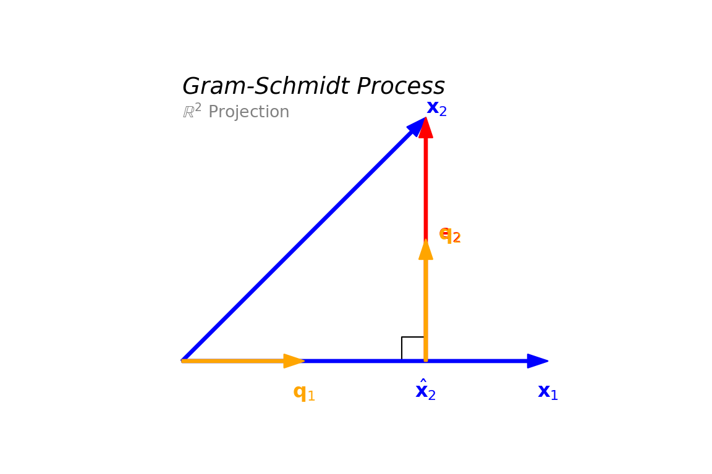
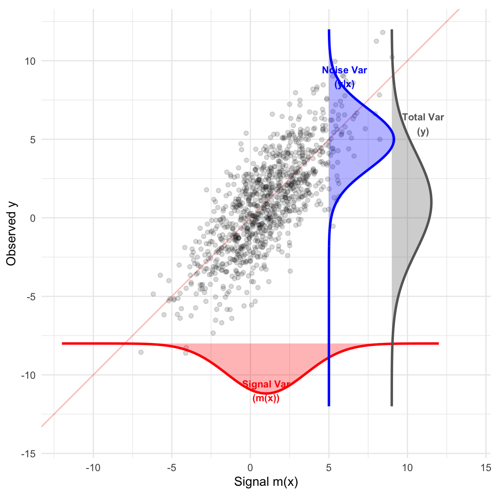
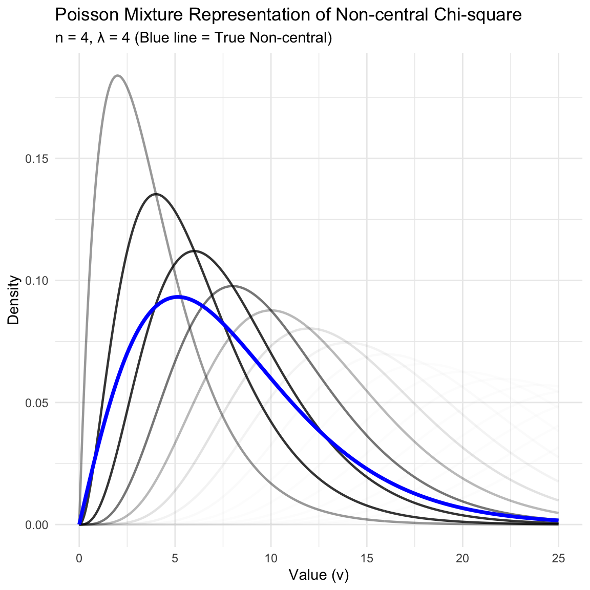

Theory of Linear Models
Preface
Key Features
This text adopts a geometric approach to the statistical theory of linear models, aiming to provide a deeper understanding than standard algebraic treatments. Key features include:
Projection Perspective: We prioritize the geometric interpretation of least squares, viewing estimation as a projection of the response vector onto a model subspace. This visual framework unifies diverse topics—from simple regression to complex ANOVA designs—under a single theoretical umbrella.
Interactive Visualizations: Abstract concepts are brought to life through interactive 3D plots. Readers can rotate and inspect vector spaces, residual planes, and projection geometries to build a tangible intuition for high-dimensional operations.
Computational Integration: Theory is seamlessly integrated with practice. The text provides implementation examples using R (and Python), demonstrating how theoretical matrix equations translate directly into computational code.
Rigorous Foundations: While visually driven, the text maintains mathematical rigor, covering essential topics such as spectral theory, the generalized inverseand the multivariate normal distribution to ensure a solid theoretical grounding.
Overview
This course is a rigorous examination of the general linear models using vector space theory, in particular the approach of regarding least square as projection. The topics includes: vector space; projection; matrix algebra; generalized inverses; quadratic forms; theory for point estimation; theory for hypothesis test; theory for non-full-rank models.
Audience
This book is designed for graduate students and advanced undergraduate students in statistics, data science, and related quantitative fields. It serves as a bridge between applied regression analysis and the theoretical foundations of linear models. Researchers and practitioners seeking a deeper geometric and algebraic understanding of the statistical methods they use daily will also find this text valuable.
Prerequisites
To get the most out of this book, readers should have a comfortable grasp of the following topics:
Linear Algebra: An elementary understanding of matrix operations is essential. You should be familiar with matrix multiplication, determinants, inversion, and the basic concepts of vector spaces (such as linear independence, basis vectors, and subspaces). While we review key spectral theory concepts (like eigenvalues and the singular value decomposition) in the early chapters, prior exposure to these ideas is helpful.
Probability and Statistics: A standard introductory course in probability and mathematical statistics is required. Readers should be familiar with random variables, expectation, variance, covariance, common probability distributions (especially the Normal distribution), and fundamental concepts of hypothesis testing and estimation.
1 Introduction
1.1 Multiple Linear Regression
Suppose we have observations on \(Y\) and \(X_j\). The data can be represented in matrix form.
\[ \underset{n \times 1}{y} = \underset{n \times p}{X} \beta + \underset{n \times 1}{\epsilon} \]
where the error terms are distributed as: \[ \epsilon \sim N_n(0, \sigma^2 I_n), \]
in which \(I_n\) is the identity matrix: \[ I_n = \begin{pmatrix} 1 & 0 & \dots & 0 \\ 0 & 1 & \dots & 0 \\ \vdots & \vdots & \ddots & \vdots \\ 0 & 0 & \dots & 1 \end{pmatrix} \] The scalar equation for a single observation is: \[ Y_i = \beta_0 + \beta_1 X_{i1} + \dots + \beta_p X_{ip} + \epsilon_i \]
1.2 Examples
1.2.1 Polynomial Regression
Polynomial regression fits a curved line to the data points but remains linear in the parameters (\(\beta\)).
The model equation is: \[ y_i = \beta_0 + \beta_1 x_i + \beta_2 x_i^2 + \dots + \beta_{p-1} x_i^{p-1} \]
1.2.2 Design Matrix Construction
The design matrix \(X\) is constructed by taking powers of the input variable.
\[ y = \begin{pmatrix} y_1 \\ \vdots \\ y_n \end{pmatrix} = \begin{pmatrix} 1 & x_1 & x_1^2 & \dots & x_1^{p-1} \\ 1 & x_2 & x_2^2 & \dots & x_2^{p-1} \\ \vdots & \vdots & \vdots & \ddots & \vdots \\ 1 & x_n & x_n^2 & \dots & x_n^{p-1} \end{pmatrix} \begin{pmatrix} \beta_0 \\ \beta_1 \\ \vdots \\ \beta_{p-1} \end{pmatrix} + \begin{pmatrix} \epsilon_1 \\ \epsilon_2 \\ \vdots \\ \epsilon_n \end{pmatrix} \]
1.2.3 One-Way ANOVA
ANOVA can be expressed as a linear model using categorical predictors (dummy variables).
Suppose we have 3 groups (\(G_1, G_2, G_3\)) with observations: \[ Y_{ij} = \mu_i + \epsilon_{ij}, \quad \epsilon_{ij} \sim N(0, \sigma^2) \]
\[ \overset{G_1}{ \boxed{ \begin{matrix} Y_{11} \\ Y_{12} \end{matrix} } } \quad \overset{G_2}{ \boxed{ \begin{matrix} Y_{21} \\ Y_{22} \end{matrix} } } \quad \overset{G_3}{ \boxed{ \begin{matrix} Y_{31} \\ Y_{32} \end{matrix} } } \]
We construct the matrix \(X\) to select the group mean (\(\mu\)) corresponding to the observation:
\[ \underset{6 \times 1}{y} = \underset{6 \times 3}{X} \begin{pmatrix} \mu_1 \\ \mu_2 \\ \mu_3 \end{pmatrix} + \epsilon \]
\[ \begin{bmatrix} Y_{11} \\ Y_{12} \\ Y_{21} \\ Y_{22} \\ Y_{31} \\ Y_{32} \end{bmatrix} = \begin{bmatrix} 1 & 0 & 0 \\ 1 & 0 & 0 \\ 0 & 1 & 0 \\ 0 & 1 & 0 \\ 0 & 0 & 1 \\ 0 & 0 & 1 \end{bmatrix} \begin{bmatrix} \mu_1 \\ \mu_2 \\ \mu_3 \end{bmatrix} + \epsilon \]
1.2.4 Analysis of Covariance (ANCOVA)
ANCOVA combines continuous variables and categorical (dummy) variables in the same design matrix.
\[ \begin{bmatrix} Y_1 \\ \vdots \\ Y_n \end{bmatrix} = \begin{bmatrix} X_{1,\text{cont}} & 1 & 0 \\ X_{2,\text{cont}} & 1 & 0 \\ \vdots & 0 & 1 \\ X_{n,\text{cont}} & 0 & 1 \end{bmatrix} \beta + \epsilon \]
1.3 Least Squares Estimation
For the general linear model \(y = X\beta + \epsilon\), the Least Squares estimator is:
\[ \hat{\beta} = (X'X)^{-1}X'y \]
The predicted values (\(\hat{y}\)) are obtained via the Projection Matrix (Hat Matrix) \(P_X\):
\[ \hat{y} = X\hat{\beta} = X(X'X)^{-1}X'y = P_X y \]
The residuals and Sum of Squared Errors are:
\[ \hat{e} = y - \hat{y} \] \[ \text{SSE} = ||\hat{e}||^2 \]
The coefficient of determination is: \[ R^2 = \frac{\text{SST} - \text{SSE}}{\text{SST}} \] where \(\text{SST} = \sum (y_i - \bar{y})^2\).
1.4 Geometric Perspective of Least Square Estimation
We align the coordinate system to the models for clarity:
- Reduced Model (\(M_0\)): Represented by the X-axis (labeled \(j_3\)).
- \(\hat{y}_0\) is the projection of \(y\) onto this axis.
- Full Model (\(M_1\)): Represented by the XY-plane (the floor).
- \(\hat{y}_1\) is the projection of \(y\) onto this plane (\(z=0\)).
- Observed Data (\(y\)): A point in 3D space.
The “improvement” due to adding predictors is the distance between \(\hat{y}_0\) and \(\hat{y}_1\).
The geometric perspective is not merely for intuition, but as the most robust framework for mastering linear models. This approach offers three distinct advantages:
- Statistical Clarity: Geometry provides the most natural path to understanding the properties of estimators. By viewing least square estimation as an orthogonal projection, the decomposition of sums of squares into independent components becomes visually obvious, demystifying how degrees of freedom relate to subspace dimensions rather than abstract algebraic constants. The sampling distribution of the sum squares become straightforward.
- Computational Stability: A geometric understanding is essential for implementing efficient and numerically stable algorithms. While the algebraic “Normal Equations” (\((X'X)^{-1}X'y\)) are theoretically valid, they are often computationally hazardous. The geometric approach leads directly to superior methods—such as QR and Singular Value Decompositions—that are the backbone of modern statistical software.
- Generalizability: The principles of projection and orthogonality extend far beyond the Gaussian linear model. These geometric insights provide the foundational intuition needed for tackling non-Gaussian optimization problems, including Generalized Linear Models (GLMs) and convex optimization, where solutions can often be viewed as projections onto convex sets.
2 Projection in Vector Space
2.1 Vector and Projection onto a Line
2.1.1 Vectors and Operations
The concept of a vector is fundamental to linear algebra and linear models. We begin by formally defining what a vector is in the context of Euclidean space.
Definition 1 (Vector) A vector \(x\) is defined as a point in \(n\)-dimensional space (\(\mathbb{R}^n\)). It is typically represented as a column vector containing \(n\) real-valued components: \[ x = \begin{pmatrix} x_1 \\ x_2 \\ \vdots \\ x_n \end{pmatrix} \]
Vectors are not just static points; they can be combined and manipulated. The two most basic geometric operations are addition and subtraction.
Vector Arithmetic: Vectors can be manipulated geometrically:
Definition 2 (Vector Addition) The sum of two vectors \(x\) and \(y\) creates a new vector. The operation is performed component-wise, adding corresponding elements from each vector. Geometrically, this follows the “parallelogram rule” or the “head-to-tail” method, where you place the tail of \(y\) at the head of \(x\). \[ x + y = \begin{pmatrix} x_1 + y_1 \\ \vdots \\ x_n + y_n \end{pmatrix} \]
Definition 3 (Vector Subtraction) The difference \(d = y - x\) is the vector that “closes the triangle” formed by \(x\) and \(y\). It represents the displacement vector that connects the tip of \(x\) to the tip of \(y\), such that \(x + d = y\).
2.1.2 Scalar Multiplication and Distance
In addition to combining vectors with each other, we can modify a single vector using a real number, known as a scalar.
Definition 4 (Scalar Multiplication) Multiplying a vector by a scalar \(c\) scales its magnitude (length) without changing its line of direction. If \(c\) is positive, the direction remains the same; if \(c\) is negative, the direction is reversed. \[ c x = \begin{pmatrix} c x_1 \\ \vdots \\ c x_n \end{pmatrix} \]
We often need to quantify the “size” of a vector. This is done using the concept of length, or norm.
Definition 5 (Euclidean Distance (Length)) The length (or norm) of a vector \(x = (x_1, \dots, x_n)^T\) corresponds to the straight-line distance from the origin to the point defined by \(x\). It is defined as the square root of the sum of squared components: \[ ||x||^2 = \sum_{i=1}^n x_i^2 \]
\[ ||x|| = \sqrt{\sum_{i=1}^n x_i^2} \]
2.1.3 Angle and Inner Product
To understand the relationship between two vectors \(x\) and \(y\) beyond just their lengths, we must look at the angle between them. Consider the triangle formed by the vectors \(x\), \(y\), and their difference \(y-x\). By applying the classic Law of Cosines to this triangle, we can relate the geometric angle to the vector lengths.
Theorem 1 (Law of Cosines) For a triangle with sides \(a, b, c\) and angle \(\theta\) opposite to side \(c\): \[ c^2 = a^2 + b^2 - 2ab \cos \theta \]
Translating this geometric theorem into vector notation where the side lengths correspond to the norms of the vectors, we get: \[ ||y - x||^2 = ||x||^2 + ||y||^2 - 2||x|| \cdot ||y|| \cos \theta \]
This equation provides a critical link between the geometric angle \(\theta\) and the algebraic norms of the vectors.
Derivation of Inner Product
We can express the squared distance term \(||y - x||^2\) purely algebraically by expanding the components:
\[ ||y - x||^2 = \sum_{i=1}^n (x_i - y_i)^2 \]
\[ = \sum_{i=1}^n (x_i^2 + y_i^2 - 2x_i y_i) \]
\[ = ||x||^2 + ||y||^2 - 2 \sum_{i=1}^n x_i y_i \]
By comparing this expanded form with the result from the Law of Cosines derived previously, we can identify a corresponding interaction term. This term is so important that we give it a special name: the Inner Product (or dot product).
Definition 6 (Inner Product) The inner product of two vectors \(x\) and \(y\) is defined as the sum of the products of their corresponding components: \[ x'y = \sum_{i=1}^n x_i y_i = \langle x, y \rangle \]
Thus, equating the geometric and algebraic forms yields the fundamental relationship: \[ x'y = ||x|| \cdot ||y|| \cos \theta \]
2.1.4 Coordinate (Scalar) Projection
The inner product allows us to calculate projections, which quantify how much of one vector “lies along” another. If we rearrange the cosine formula derived above, we can isolate the term that represents the length of the “shadow” cast by vector \(y\) onto vector \(x\).
The length of this projection is given by:
\[ ||y|| \cos \theta = \frac{x'y}{||x||} \]
This expression can be interpreted as the inner product of \(y\) with the normalized (unit) vector in the direction of \(x\):
\[ \text{Scalar Projection} = \left\langle \frac{x}{||x||}, y \right\rangle \]
2.1.5 Vector Projection Formula
The scalar projection only gives us a magnitude (a number). To define the projection as a vector in the same space, we need to multiply this scalar magnitude by the direction of the vector we are projecting onto.
Definition 7 (Vector Projection) The projection of vector \(y\) onto vector \(x\), denoted \(\hat{y}\), is calculated as: \[ \text{Projection Vector} = (\text{Length}) \cdot (\text{Direction}) \]
\[ \hat{y} = \left( \frac{x'y}{||x||} \right) \cdot \frac{x}{||x||} \]
This is often written compactly by combining the denominators:
\[ \hat{y} = \frac{x'y}{||x||^2} x \]
2.1.6 Perpendicularity (Orthogonality)
A special case of the angle between vectors arises when \(\theta = 90^\circ\). This geometric concept of perpendicularity is central to the theory of projections and least squares.
Definition 8 (Perpendicularity) Two vectors are defined as perpendicular (or orthogonal) if the angle between them is \(90^\circ\) (\(\pi/2\)).
Since \(\cos(90^\circ) = 0\), the condition for orthogonality simplifies to the inner product being zero:
\[ x'y = 0 \iff x \perp y \]
Example 1 (Orthogonal Vectors) Consider two vectors in \(\mathbb{R}^2\): \(x = (1, 1)'\) and \(y = (1, -1)'\). \[ x'y = 1(1) + 1(-1) = 1 - 1 = 0 \]
Since their inner product is zero, these vectors are orthogonal to each other.
2.1.7 Projection onto a Line (Subspace)
We can generalize the concept of projecting onto a single vector to projecting onto the entire line (a 1-dimensional subspace) defined by that vector.
Definition 9 (Line Spanned by a Vector) The line space \(L(x)\), or the space spanned by a vector \(x\), is defined as the set of all scalar multiples of \(x\): \[ L(x) = \{ cx \mid c \in \mathbb{R} \} \]
The projection of \(y\) onto \(L(x)\), denoted \(\hat{y}\), is defined by the geometric property that it is the closest point on the line to \(y\). This implies that the error vector (or residual) must be perpendicular to the line itself.
Definition 10 (Projection onto a Line) A vector \(\hat{y}\) is the projection of \(y\) onto the line \(L(x)\) if:
\(\hat{y}\) lies on the line \(L(x)\) (i.e., \(\hat{y} = cx\) for some scalar \(c\)).
The residual vector \((y - \hat{y})\) is perpendicular to the direction vector \(x\).
Derivation: To find the value of the scalar \(c\), we apply the orthogonality condition: \[ (y - \hat{y}) \perp x \implies x'(y - cx) = 0 \]
Expanding this inner product gives:
\[ x'y - c(x'x) = 0 \]
Solving for \(c\), we obtain:
\[ c = \frac{x'y}{||x||^2} \]
This confirms the formula derived previously using the inner product geometry. It shows that the least squares principle (shortest distance) leads to the same result as the geometric projection.
Alternative Forms of the Projection Formula
We can express the projection vector \(\hat{y}\) in several equivalent ways to highlight different geometric interpretations.
Definition 11 (Forms of Projection) The projection of \(y\) onto the vector \(x\) is given by: \[ \hat{y} = \frac{x'y}{||x||^2} x = \left\langle y, \frac{x}{||x||} \right\rangle \frac{x}{||x||} \]
This second form separates the components into:
\[ \text{Projection} = (\text{Scalar Projection}) \times (\text{Unit Direction}) \]
2.1.8 Projection Matrix (\(P_x\))
In linear models, it is often more convenient to view projection as a linear transformation applied to the vector \(y\). This allows us to define a Projection Matrix.
We can rewrite the formula for \(\hat{y}\) by factoring out \(y\):
\[ \hat{y} = \text{proj}(y|x) = x \frac{x'y}{||x||^2} = \frac{xx'}{||x||^2} y \]
This leads to the definition of the projection matrix \(P_x\).
Definition 12 (Projection Matrix onto a Single Vector) The matrix \(P_x\) that projects any vector \(y\) onto the line spanned by \(x\) is defined as: \[ P_x = \frac{xx'}{||x||^2} \]
Using this matrix, the projection is simply:
\[ \hat{y} = P_x y \]
If \(x \in \mathbb{R}^n\), then \(P_x\) is a \(n \times n\) symmetric matrix.
Let’s apply these concepts to a concrete example.
Example 2 (Numerical Projection) Let \(y = (1, 3)'\) and \(x = (1, 1)'\). We want to find the projection of \(y\) onto \(x\).
Method 1: Using the Vector Formula First, calculate the inner products:
\[ x'y = 1(1) + 1(3) = 4 \] \[ ||x||^2 = 1^2 + 1^2 = 2 \]
Now, apply the formula:
\[ \hat{y} = \frac{4}{2} \begin{pmatrix} 1 \\ 1 \end{pmatrix} = 2 \begin{pmatrix} 1 \\ 1 \end{pmatrix} = \begin{pmatrix} 2 \\ 2 \end{pmatrix} \]
Method 2: Using the Projection Matrix Construct the matrix \(P_x\):
\[ P_x = \frac{1}{2} \begin{pmatrix} 1 \\ 1 \end{pmatrix} \begin{pmatrix} 1 & 1 \end{pmatrix} = \frac{1}{2} \begin{pmatrix} 1 & 1 \\ 1 & 1 \end{pmatrix} = \begin{pmatrix} 0.5 & 0.5 \\ 0.5 & 0.5 \end{pmatrix} \]
Multiply by \(y\):
\[ \hat{y} = P_x y = \begin{pmatrix} 0.5 & 0.5 \\ 0.5 & 0.5 \end{pmatrix} \begin{pmatrix} 1 \\ 3 \end{pmatrix} = \begin{pmatrix} 0.5(1) + 0.5(3) \\ 0.5(1) + 0.5(3) \end{pmatrix} = \begin{pmatrix} 2 \\ 2 \end{pmatrix} \]
Example: Projection onto the Ones Vector (\(j_n\))
A very common operation in statistics is calculating the sample mean. This can be viewed geometrically as a projection onto a specific vector.
Example 3 (Projection onto the Ones Vector) Let \(y = (y_1, \dots, y_n)'\) be a data vector. Let \(j_n = (1, 1, \dots, 1)'\) be a vector of all ones.
The projection of \(y\) onto \(j_n\) is:
\[ \text{proj}(y|j_n) = \frac{j_n' y}{||j_n||^2} j_n \]
Calculating the components:
\[ j_n' y = \sum_{i=1}^n y_i \quad \text{(Sum of observations)} \] \[ ||j_n||^2 = \sum_{i=1}^n 1^2 = n \]
Substituting these back:
\[ \hat{y} = \frac{\sum y_i}{n} j_n = \bar{y} j_n = \begin{pmatrix} \bar{y} \\ \vdots \\ \bar{y} \end{pmatrix} \]
Thus, replacing a data vector with its mean vector is geometrically equivalent to projecting the data onto the line spanned by the vector of ones.
2.1.9 Pythagorean Theorem
The Pythagorean theorem generalizes from simple geometry to vector spaces using the concept of orthogonality defined by the inner product.
Theorem 2 (Pythagorean Theorem) If two vectors \(x\) and \(y\) are orthogonal (i.e., \(x \perp y\) or \(x'y = 0\)), then the squared length of their sum is equal to the sum of their squared lengths: \[ ||x + y||^2 = ||x||^2 + ||y||^2 \]
Proof. We expand the squared norm using the inner product: \[ \begin{aligned} ||x + y||^2 &= (x + y)' (x + y) \\ &= x'x + x'y + y'x + y'y \\ &= ||x||^2 + 2x'y + ||y||^2 \end{aligned} \]
Since \(x \perp y\), the inner product \(x'y = 0\). Thus, the term \(2x'y\) vanishes, leaving:
\[ ||x + y||^2 = ||x||^2 + ||y||^2 \]
The proof after defining inner product to represent \(\cos(\theta)\) is trivival. Figure 2 shows a geometric proof of the fundamental Pythagorean Theorem.

2.1.10 Least Square Property
One of the most important properties of the orthogonal projection is that it minimizes the distance between the vector \(y\) and the subspace (or line) onto which it is projected.
Theorem 3 (Least Square Property) Let \(\hat{y}\) be the projection of \(y\) onto the line \(L(x)\). For any other vector \(y^*\) on the line \(L(x)\), the distance from \(y\) to \(y^*\) is always greater than or equal to the distance from \(y\) to \(\hat{y}\). \[ ||y - y^*|| \ge ||y - \hat{y}|| \]
Proof. Since both \(\hat{y}\) and \(y^*\) lie on the line \(L(x)\), their difference \((\hat{y} - y^*)\) also lies on \(L(x)\). From the definition of projection, the residual \((y - \hat{y})\) is orthogonal to the line \(L(x)\). Therefore: \[ (y - \hat{y}) \perp (\hat{y} - y^*) \]
We can write the vector \((y - y^*)\) as:
\[ y - y^* = (y - \hat{y}) + (\hat{y} - y^*) \]
Applying the Pythagorean Theorem:
\[ ||y - y^*||^2 = ||y - \hat{y}||^2 + ||\hat{y} - y^*||^2 \]
Since \(||\hat{y} - y^*||^2 \ge 0\), it follows that:
\[ ||y - y^*||^2 \ge ||y - \hat{y}||^2 \]
2.2 Vector Space
We now generalize our discussion from lines to broader spaces.
Definition 13 (Vector Space) A set \(V \subseteq \mathbb{R}^n\) is called a Vector Space if it is closed under vector addition and scalar multiplication:
- Closed under Addition: If \(x_1 \in V\) and \(x_2 \in V\), then \(x_1 + x_2 \in V\).
- Closed under Scalar Multiplication: If \(x \in V\), then \(cx \in V\) for any scalar \(c \in \mathbb{R}\).
It follows that the zero vector \(0\) must belong to any subspace (by choosing \(c=0\)).
2.2.1 Spanned Vector Space
The most common way to construct a vector space in linear models is by spanning it with a set of vectors.
Definition 14 (Spanned Vector Space) Let \(x_1, \dots, x_p\) be a set of vectors in \(\mathbb{R}^n\). The space spanned by these vectors, denoted \(L(x_1, \dots, x_p)\), is the set of all possible linear combinations of them: \[ L(x_1, \dots, x_p) = \{ r \mid r = c_1 x_1 + \dots + c_p x_p, \text{ for } c_i \in \mathbb{R} \} \]
2.2.2 Column Space and Row Space
When vectors are arranged into a matrix, we define specific spaces based on their columns and rows.
Definition 15 (Column Space) For a matrix \(X = (x_1, \dots, x_p)\), the Column Space, denoted \(\text{Col}(X)\), is the vector space spanned by its columns: \[ \text{Col}(X) = L(x_1, \dots, x_p) \]
Definition 16 (Row Space) The Row Space, denoted \(\text{Row}(X)\), is the vector space spanned by the rows of the matrix \(X\).
2.2.3 Linear Independence and Rank
Not all vectors in a spanning set contribute new dimensions to the space. This concept is captured by linear independence.
Definition 17 (Linear Independence) A set of vectors \(x_1, \dots, x_p\) is said to be Linearly Independent if the only solution to the linear combination equation equal to zero is the trivial solution: \[ \sum_{i=1}^p c_i x_i = 0 \implies c_1 = c_2 = \dots = c_p = 0 \]
If there exist non-zero \(c_i\)’s such that sum is zero, the vectors are Linearly Dependent.
2.3 Rank of Matrices and Dim of Vector Space
Definition 18 (Rank) The Rank of a matrix \(X\), denoted \(\text{Rank}(X)\), is the maximum number of linearly independent columns in \(X\). This is equivalent to the dimension of the column space: \[ \text{Rank}(X) = \text{Dim}(\text{Col}(X)) \]
There are several fundamental properties regarding the rank of a matrix.
Example 4 (Example of the Equality of Row and Col Rank) Consider the following \(3 \times 4\) matrix (\(n=3, p=4\)): \[ X = \begin{pmatrix} 1 & 0 & 1 & 0 \\ 0 & 1 & 0 & 1 \\ 1 & 1 & 1 & 1 \end{pmatrix} \] Notice that the third row is the sum of the first two (\(r_3 = r_1 + r_2\)).
- Row Rank and Basis \(U\) The first two rows are linearly independent. We set the row rank \(r=2\) and use these rows as our basis matrix \(U\) (\(2 \times 4\)):
\[ U = \begin{pmatrix} 1 & 0 & 1 & 0 \\ 0 & 1 & 0 & 1 \end{pmatrix} \]
Coefficient Matrix \(C\) We express every row of \(X\) as a linear combination of the rows of \(U\):
- Row 1: \(1 \cdot u_1 + 0 \cdot u_2\)
- Row 2: \(0 \cdot u_1 + 1 \cdot u_2\)
- Row 3: \(1 \cdot u_1 + 1 \cdot u_2\)
These coefficients form the matrix \(C\) (\(3 \times 2\)):
\[ C = \begin{pmatrix} 1 & 0 \\ 0 & 1 \\ 1 & 1 \end{pmatrix} \]
The Decomposition \(X = CU\)) We verify that \(X\) is the product of \(C\) and \(U\): \[ \underbrace{\begin{pmatrix} 1 & 0 & 1 & 0 \\ 0 & 1 & 0 & 1 \\ 1 & 1 & 1 & 1 \end{pmatrix}}_{X \ (3 \times 4)} = \underbrace{\begin{pmatrix} 1 & 0 \\ 0 & 1 \\ 1 & 1 \end{pmatrix}}_{C \ (3 \times 2)} \underbrace{\begin{pmatrix} 1 & 0 & 1 & 0 \\ 0 & 1 & 0 & 1 \end{pmatrix}}_{U \ (2 \times 4)} \]
Conclusion on Column Rank The columns of \(X\) are linear combinations of the columns of \(C\). \[ \text{Col}(X) \subseteq \text{Col}(C) \] Since \(C\) has only 2 columns, the dimension of its column space (and thus \(X\)’s column space) cannot exceed 2. \[ \text{Dim}(\text{Col}(X)) \le 2 \] This confirms that Row Rank (2) \(\ge\) Column Rank. (By symmetry, they are equal).
Theorem 4 (Row Rank equals Column Rank)
- Row Rank equals Column Rank: The dimension of the column space is equal to the dimension of the row space.
\[ \text{Dim}(\text{Col}(X)) = \text{Dim}(\text{Row}(X)) \implies \text{Rank}(X) = \text{Rank}(X') \]
- Bounds: For an \(n \times p\) matrix \(X\):
\[ \text{Rank}(X) \le \min(n, p) \]
2.3.1 Orthogonality to a Subspace
We can extend the concept of orthogonality from single vectors to entire subspaces.
Definition 19 (Orthogonality to a Subspace) A vector \(y\) is orthogonal to a subspace \(V\) (denoted \(y \perp V\)) if \(y\) is orthogonal to every vector \(x\) in \(V\). \[ y \perp V \iff y'x = 0 \quad \forall x \in V \]
Definition 20 (Orthogonal Complement) The set of all vectors that are orthogonal to a subspace \(V\) is called the Orthogonal Complement of \(V\), denoted \(V^\perp\). \[ V^\perp = \{ y \in \mathbb{R}^n \mid y \perp V \} \]
2.3.2 Kernel (Null Space) and Image
For a matrix transformation defined by \(X\), we define two key spaces: the Image (Column Space) and the Kernel (Null Space).
Definition 21 (Image and Kernel)
- Image (Column Space): The set of all possible outputs.
\[ \text{Im}(X) = \text{Col}(X) = \{ X\beta \mid \beta \in \mathbb{R}^p \} \]
- Kernel (Null Space): The set of all inputs mapped to the zero vector.
\[ \text{Ker}(X) = \{ \beta \in \mathbb{R}^p \mid X\beta = 0 \} \]
Theorem 5 (Relationship between Kernel and Row Space) The kernel of \(X\) is the orthogonal complement of the row space of \(X\): \[ \text{Ker}(X) = [\text{Row}(X)]^\perp \]
Proof. Let \(x \in \mathbb{R}^p\). \(x \in \text{Ker}(X)\) if and only if \(Xx = 0\). If we denote the rows of \(X\) as \(r_1', \dots, r_n'\), then the equation \(Xx = 0\) is equivalent to the system of equations: \[ \begin{pmatrix} r_1' \\ \vdots \\ r_n' \end{pmatrix} x = \begin{pmatrix} 0 \\ \vdots \\ 0 \end{pmatrix} \iff r_i' x = 0 \text{ for all } i = 1, \dots, n \] This means \(x\) is orthogonal to every row of \(X\). Since the rows span the row space \(\text{Row}(X)\), being orthogonal to every generator \(r_i\) implies \(x\) is orthogonal to the entire space \(\text{Row}(X)\). Thus, \(\text{Ker}(X) = \{ x \mid x \perp \text{Row}(X) \} = [\text{Row}(X)]^\perp\).
2.3.3 Nullity Theorem
There is a fundamental relationship between the dimensions of these spaces.
Theorem 6 (Rank-Nullity Theorem) For an \(n \times p\) matrix \(X\): \[ \text{Rank}(X) + \text{Nullity}(X) = p \] where \(\text{Nullity}(X) = \text{Dim}(\text{Ker}(X))\).
Proof. From the previous theorem, we established that the kernel is the orthogonal complement of the row space: \[ \text{Ker}(X) = [\text{Row}(X)]^\perp \]
Since the row space is a subspace of \(\mathbb{R}^p\), the entire space can be decomposed into the direct sum of the row space and its orthogonal complement:
\[ \mathbb{R}^p = \text{Row}(X) \oplus [\text{Row}(X)]^\perp = \text{Row}(X) \oplus \text{Ker}(X) \]
Taking the dimensions of these spaces:
\[ \text{Dim}(\mathbb{R}^p) = \text{Dim}(\text{Row}(X)) + \text{Dim}(\text{Ker}(X)) \]
Substituting the definitions of Rank (dimension of row/column space) and Nullity:
\[ p = \text{Rank}(X) + \text{Nullity}(X) \]
Comparing Ranks via Kernel Containment
The Rank-Nullity Theorem provides a powerful and convenient tool for comparing the ranks of two matrices \(A\) and \(B\) (with the same number of columns) by inspecting their null spaces.
Theorem 7 (Kernel Containment and Rank Inequality) Let \(A\) and \(B\) be two matrices with \(p\) columns. If the kernel of \(A\) is contained within the kernel of \(B\), then the rank of \(A\) is greater than or equal to the rank of \(B\). \[ \text{Ker}(A) \subseteq \text{Ker}(B) \implies \text{Rank}(A) \ge \text{Rank}(B) \]
Proof. From the subspace inclusion \(\text{Ker}(A) \subseteq \text{Ker}(B)\), it follows that the dimension of the smaller space cannot exceed the dimension of the larger space: \[ \text{Nullity}(A) \le \text{Nullity}(B) \] Using the Rank-Nullity Theorem (\(\text{Rank} = p - \text{Nullity}\)), we reverse the inequality: \[ p - \text{Nullity}(A) \ge p - \text{Nullity}(B) \] \[ \text{Rank}(A) \ge \text{Rank}(B) \]
2.3.4 Rank Inequalities
Understanding the bounds of the rank of matrix products is crucial for deriving properties of linear estimators.
Theorem 8 (Rank of a Matrix Product) Let \(X\) be an \(n \times p\) matrix and \(Z\) be a \(p \times k\) matrix. The rank of their product \(XZ\) is bounded by the rank of the individual matrices: \[ \text{Rank}(XZ) \le \min(\text{Rank}(X), \text{Rank}(Z)) \]
Proof. The columns of \(XZ\) are linear combinations of the columns of \(X\). Thus, the column space of \(XZ\) is a subspace of the column space of \(X\): \[ \text{Col}(XZ) \subseteq \text{Col}(X) \implies \text{Rank}(XZ) \le \text{Rank}(X) \] Similarly, the rows of \(XZ\) are linear combinations of the rows of \(Z\). Thus, the row space of \(XZ\) is a subspace of the row space of \(Z\): \[ \text{Row}(XZ) \subseteq \text{Row}(Z) \implies \text{Rank}(XZ) \le \text{Rank}(Z) \]
Rank and Invertible Matrices
Multiplying by an invertible (non-singular) matrix preserves the rank. This is a very useful property when manipulating linear equations.
Theorem 9 (Rank with Non-Singular Multiplication) Let \(A\) be an \(n \times n\) invertible matrix (i.e., \(\text{Rank}(A) = n\)) and \(X\) be an \(n \times p\) matrix. Then: \[ \text{Rank}(AX) = \text{Rank}(X) \]
Similarly, if \(B\) is a \(p \times p\) invertible matrix, then:
\[ \text{Rank}(XB) = \text{Rank}(X) \]
Proof. From the previous theorem, we know \(\text{Rank}(AX) \le \text{Rank}(X)\). Since \(A\) is invertible, we can write \(X = A^{-1}(AX)\). Applying the theorem again: \[ \text{Rank}(X) = \text{Rank}(A^{-1}(AX)) \le \text{Rank}(AX) \] Thus, \(\text{Rank}(AX) = \text{Rank}(X)\).
2.3.5 Rank of \(X'X\) and \(XX'\)
The matrix \(X'X\) (the Gram matrix) appears in the normal equations for least squares (\(X'X\beta = X'y\)). Its properties are closely tied to \(X\).
Theorem 10 (Rank of Gram Matrix) For any real matrix \(X\), the rank of \(X'X\) and \(XX'\) is the same as the rank of \(X\) itself: \[ \text{Rank}(X'X) = \text{Rank}(X) \] \[ \text{Rank}(XX') = \text{Rank}(X) \]
Proof. We first show that the null space (kernel) of \(X\) is the same as the null space of \(X'X\). If \(v \in \text{Ker}(X)\), then \(Xv = 0 \implies X'Xv = 0 \implies v \in \text{Ker}(X'X)\). Conversely, if \(v \in \text{Ker}(X'X)\), then \(X'Xv = 0\). Multiply by \(v'\): \[ v'X'Xv = 0 \implies (Xv)'(Xv) = 0 \implies ||Xv||^2 = 0 \implies Xv = 0 \] So \(\text{Ker}(X) = \text{Ker}(X'X)\). By the Rank-Nullity Theorem, since they have the same number of columns and same nullity, they must have the same rank.
Column Space of \(XX'\)
Beyond just the rank, the column spaces themselves are related.
Theorem 11 (Column Space Equivalence) The column space of \(XX'\) is identical to the column space of \(X\): \[ \text{Col}(XX') = \text{Col}(X) \]
Proof.
Forward (\(\subseteq\)): Let \(z \in \text{Col}(XX')\). Then \(z = XX'w\) for some vector \(w\). We can rewrite this as \(z = X(X'w)\). Since \(z\) is a linear combination of columns of \(X\) (with coefficients \(X'w\)), \(z \in \text{Col}(X)\). Thus, \(\text{Col}(XX') \subseteq \text{Col}(X)\).
Equality via Rank: From the previous theorem, we know that \(\text{Rank}(XX') = \text{Rank}(X)\). Since \(\text{Col}(XX')\) is a subspace of \(\text{Col}(X)\) and they have the same finite dimension (Rank), the subspaces must be identical.
Implication: This property ensures that for any \(y\), the projection of \(y\) onto \(\text{Col}(X)\) lies in the same space as the projection onto \(\text{Col}(XX')\). This is vital for the existence of solutions in generalized least squares.
2.4 Orthogonal Projection onto a Subspace
Let \(V\) be a subspace of \(\mathbb{R}^n\). For any vector \(y \in \mathbb{R}^n\), there exists a unique vector \(\hat{y} \in V\) such that the residual is orthogonal to the subspace: \[ (y - \hat{y}) \perp V \]
Equivalently:
\[ \langle y - \hat{y}, v \rangle = 0 \quad \forall v \in V \]
2.4.1 Equivalence to Least Squares
The geometric definition of projection (orthogonality) is mathematically equivalent to the optimization problem of minimizing distance (least squares).
Theorem 12 (Best Approximation Theorem (Least Squares Property)) Let \(V\) be a subspace of \(\mathbb{R}^n\) and \(y \in \mathbb{R}^n\). Let \(\hat{y}\) be the orthogonal projection of \(y\) onto \(V\). Then \(\hat{y}\) is the closest point in \(V\) to \(y\). That is, for any vector \(v \in V\) such that \(v \ne \hat{y}\): \[ \|y - \hat{y}\|^2 < \|y - v\|^2 \]
Proof. Let \(v\) be any vector in \(V\). We can rewrite the difference vector \(y - v\) by adding and subtracting the projection \(\hat{y}\): \[ y - v = (y - \hat{y}) + (\hat{y} - v) \]
Observe the properties of the two terms on the right-hand side:
- Residual: \((y - \hat{y})\) is orthogonal to \(V\) by definition.
- Difference in Subspace: Since both \(\hat{y} \in V\) and \(v \in V\), their difference \((\hat{y} - v)\) is also in \(V\).
Therefore, the two terms are orthogonal to each other:
\[ (y - \hat{y}) \perp (\hat{y} - v) \]
Applying the Pythagorean Theorem:
\[ \|y - v\|^2 = \|y - \hat{y}\|^2 + \|\hat{y} - v\|^2 \]
Since squared norms are non-negative, and \(\|\hat{y} - v\|^2 > 0\) (because \(v \ne \hat{y}\)):
\[ \|y - v\|^2 > \|y - \hat{y}\|^2 \] The projection \(\hat{y}\) minimizes the squared error distance (and error distance itself).

2.4.2 Uniqueness of Projection
While the existence of a least-squares solution is guaranteed, we must also prove that there is only one such vector.
Theorem 13 (Uniqueness of Orthogonal Projection) For a given vector \(y\) and subspace \(V\), the projection vector \(\hat{y}\) satisfying \((y - \hat{y}) \perp V\) is unique.
Proof. Assume there are two vectors \(\hat{y}_1 \in V\) and \(\hat{y}_2 \in V\) that both satisfy the orthogonality condition. \[ (y - \hat{y}_1) \perp V \quad \text{and} \quad (y - \hat{y}_2) \perp V \] This means that for any \(v \in V\), both inner products are zero: \[ \langle y - \hat{y}_1, v \rangle = 0 \] \[ \langle y - \hat{y}_2, v \rangle = 0 \]
Subtracting the second equation from the first:
\[ \langle y - \hat{y}_1, v \rangle - \langle y - \hat{y}_2, v \rangle = 0 \] Using the linearity of the inner product: \[ \langle (y - \hat{y}_1) - (y - \hat{y}_2), v \rangle = 0 \] \[ \langle \hat{y}_2 - \hat{y}_1, v \rangle = 0 \]
This equation holds for all \(v \in V\). Since \(\hat{y}_1\) and \(\hat{y}_2\) are both in \(V\), their difference \(d = \hat{y}_2 - \hat{y}_1\) must also be in \(V\). We can therefore choose \(v = d = \hat{y}_2 - \hat{y}_1\).
\[ \langle \hat{y}_2 - \hat{y}_1, \hat{y}_2 - \hat{y}_1 \rangle = 0 \implies \|\hat{y}_2 - \hat{y}_1\|^2 = 0 \] The only vector with a norm of zero is the zero vector itself. \[ \hat{y}_2 - \hat{y}_1 = 0 \implies \hat{y}_1 = \hat{y}_2 \] Thus, the projection is unique.
2.5 Projection via Orthonormal Basis (\(Q\))
2.5.1 Orthonomal Basis
Before discussing projections onto general subspaces, we must formally define the coordinate system of a subspace, known as a basis.
Definition 22 (Basis) A set of vectors \(\{x_1, \dots, x_k\}\) is a Basis for a vector space \(V\) if:
- The vectors span the space: \(V = L(x_1, \dots, x_k)\).
- The vectors are linearly independent.
The number of vectors in a basis is unique and is defined as the Dimension of \(V\).
Calculations become significantly simpler if we choose a basis with special geometric properties.
Definition 23 (Orthonormal Basis) A basis \(\{q_1, \dots, q_k\}\) is called an Orthonormal Basis if:
- Orthogonal: Each pair of vectors is perpendicular.
\[ q_i'q_j = 0 \quad \text{for } i \ne j \]
- Normalized: Each vector has unit length.
\[ ||q_i||^2 = q_i'q_i = 1 \]
Combining these, we write \(q_i'q_j = \delta_{ij}\) (Kronecker delta).
We now generalize the projection problem. Instead of projecting \(y\) onto a single line, we project it onto a subspace \(V\) of dimension \(k\).
If we have an orthonormal basis \(\{q_1, \dots, q_k\}\) for \(V\), the projection \(\hat{y}\) is simply the sum of the projections onto the individual basis vectors.
Definition 24 (Projection Defined with Orthonormal Basis) The projection of \(y\) onto the subspace \(V = L(q_1, \dots, q_k)\) is: \[ \hat{y} = \sum_{i=1}^k \text{proj}(y|q_i) = \sum_{i=1}^k (q_i'y) q_i \]
Since the basis vectors are normalized, we do not need to divide by \(||q_i||^2\).
Theorem 14 (Projection via Orthonormal Basis) Let \(\{q_1, \dots, q_k\}\) be an orthonormal basis for the subspace \(V \subseteq \mathbb{R}^n\). The vector defined by the sum of individual projections: \[ \hat{y} = \sum_{i=1}^k \langle y, q_i \rangle q_i \] is indeed the orthogonal projection of \(y\) onto \(V\). That is, it satisfies \((y - \hat{y}) \perp V\).
Proof. To prove this, we must check two conditions:
\(\hat{y} \in V\): This is immediate because \(\hat{y}\) is a linear combination of the basis vectors \(\{q_1, \dots, q_k\}\).
\((y - \hat{y}) \perp V\): It suffices to show that the error vector \(e = y - \hat{y}\) is orthogonal to every basis vector \(q_j\) (for \(j = 1, \dots, k\)).
Let’s calculate the inner product \(\langle y - \hat{y}, q_j \rangle\):
\[ \begin{aligned} \langle y - \hat{y}, q_j \rangle &= \langle y, q_j \rangle - \langle \hat{y}, q_j \rangle \\ &= \langle y, q_j \rangle - \left\langle \sum_{i=1}^k \langle y, q_i \rangle q_i, q_j \right\rangle \\ &= \langle y, q_j \rangle - \sum_{i=1}^k \langle y, q_i \rangle \underbrace{\langle q_i, q_j \rangle}_{\delta_{ij}} \end{aligned} \]
Since the basis is orthonormal, \(\langle q_i, q_j \rangle\) is 1 if \(i=j\) and 0 otherwise. Thus, the summation collapses to a single term where \(i=j\):
\[ \begin{aligned} \langle y - \hat{y}, q_j \rangle &= \langle y, q_j \rangle - \langle y, q_j \rangle \cdot 1 \\ &= 0 \end{aligned} \]
Since \((y - \hat{y})\) is orthogonal to every basis vector \(q_j\), it is orthogonal to the entire subspace \(V\). Thus, \(\hat{y}\) is the unique orthogonal projection.
2.5.2 Projection Matrix via Orthonomal Basis (\(Q\))
Matrix Form with Orthonormal Basis
We can express the summation formula for \(\hat{y}\) compactly using matrix notation.
Let \(Q\) be an \(n \times k\) matrix whose columns are the orthonormal basis vectors \(q_1, \dots, q_k\).
\[ Q = \begin{pmatrix} q_1 & q_2 & \dots & q_k \end{pmatrix} \]
Properties of \(Q\):
- \(Q'Q = I_k\) (Identity matrix of size \(k \times k\)).
- \(QQ'\) is not necessarily \(I_n\) (unless \(k=n\)).
Definition 25 (Projection Matrix in Terms of \(Q\)) The projection \(\hat{y}\) can be written as: \[ \hat{y} = \begin{pmatrix} q_1 & \dots & q_k \end{pmatrix} \begin{pmatrix} q_1'y \\ \vdots \\ q_k'y \end{pmatrix} = Q (Q'y) = (QQ') y \]
Thus, the projection matrix \(P\) onto the subspace \(V\) is:
\[ P = QQ' \]
Properties of Projection Matrices
We have defined the projection matrix as \(P = X(X'X)^{-1}X'\) (or \(P=QQ'\) for orthonormal bases). All orthogonal projection matrices share two fundamental algebraic properties.
Theorem 15 (Symmeticity and Idempotence) A square matrix \(P\) represents an orthogonal projection onto some subspace if and only if it satisfies:
- Idempotence: \(P^2 = P\) (Applying the projection twice is the same as applying it once).
- Symmetry: \(P' = P\).
Proof. If \(\hat{y} = Py\) is already in the subspace \(\text{Col}(X)\), then projecting it again should not change it. \[ P(Py) = Py \implies P^2 y = Py \quad \forall y \] Thus, \(P^2 = P\).
Example: ANOVA (Analysis of Variance)
One of the most common applications of projection is in Analysis of Variance (ANOVA). We can view the calculation of group means as a projection onto a subspace defined by group indicator variables.
Example 5 (Finding Projection for One-way ANOVA) Consider a one-way ANOVA model with \(k\) groups: \[ y_{ij} = \mu_i + \epsilon_{ij} \] where \(i \in \{1, \dots, k\}\) represents the group and \(j \in \{1, \dots, n_i\}\) represents the observation within the group. Let \(N = \sum_{i=1}^k n_i\) be the total number of observations.
Matrix Definitions
We define the data vector \(y\) and the design matrix \(X\) as follows:
- Data Vector (\(y\)): An \(N \times 1\) vector containing all observations by group:
\[ y = \begin{pmatrix} y_{11} \\ \vdots \\ y_{1n_1} \\ y_{21} \\ \vdots \\ y_{kn_k} \end{pmatrix} \]
- Design Matrix (\(X\)): An \(N \times k\) matrix constructed from \(k\) column vectors, \(X = (x_1, x_2, \dots, x_k)\). Each vector \(x_g\) is an indicator (dummy variable) for group \(g\):
\[ x_g = \begin{pmatrix} 0 \\ \vdots \\ 1 \\ \vdots \\ 0 \end{pmatrix} \quad \leftarrow \text{Entries are 1 if observation belongs to group } g \]
Orthogonality
These column vectors \(x_1, \dots, x_k\) are mutually orthogonal because no observation can belong to two groups at once. The dot product of any two distinct columns is zero:
\[ \langle x_g, x_h \rangle = 0 \quad \text{for } g \neq h \] This allows us to find the projection onto the column space of \(X\) by simply summing the projections onto each column individually.
Calculating Individual Projections
For a specific group vector \(x_g\), the projection is:
\[ \text{proj}(y|x_g) = \frac{\langle y, x_g \rangle}{\langle x_g, x_g \rangle} x_g \]
We calculate the two scalar terms:
- Denominator (\(\langle x_g, x_g \rangle\)): The sum of squared elements of \(x_g\). Since \(x_g\) contains \(n_g\) ones and zeros elsewhere:
\[ \langle x_g, x_g \rangle = \sum \mathbb{1}_{\{i=g\}}^2 = n_g \]
- Numerator (\(\langle y, x_g \rangle\)): The dot product sums only the \(y\) values belonging to group \(g\):
\[ \langle y, x_g \rangle = \sum_{i,j} y_{ij} \cdot \mathbb{1}_{\{i=g\}} = \sum_{j=1}^{n_g} y_{gj} = y_{g.} \quad (\text{Group Total}) \]
The Resulting Projection
Substituting these back into the formula gives the coefficient for the vector \(x_g\):
\[ \text{proj}(y|x_g) = \frac{y_{g.}}{n_g} x_g = \bar{y}_{g.} x_g \]
The total projection \(\hat{y}\) is the sum over all groups:
\[ \hat{y} = \sum_{g=1}^k \bar{y}_{g.} x_g \] This confirms that the fitted value for any specific observation \(y_{ij}\) is simply its group mean \(\bar{y}_{i.}\).
2.5.3 Gram-Schmidt Process
To use the simplified formula \(P = QQ'\), we need an orthonormal basis. The Gram-Schmidt process provides a method to construct such a basis from any set of linearly independent vectors.
Gram-Schmidt Process Given linearly independent vectors \(x_1, \dots, x_p\):
- Step 1: Normalize the first vector.
\[ q_1 = \frac{x_1}{||x_1||} \]
- Step 2: Project \(x_2\) onto \(q_1\) and subtract it to find the orthogonal component.
\[ v_2 = x_2 - (x_2'q_1)q_1 \] Then normalize: \[ q_2 = \frac{v_2}{||v_2||} \]
- Step k: Subtract the projections onto all previous \(q\) vectors.
\[ v_k = x_k - \sum_{j=1}^{k-1} (x_k'q_j)q_j \] \[ q_k = \frac{v_k}{||v_k||} \]

This process leads to the QR Decomposition of a matrix: \(X = QR\), where \(Q\) is orthogonal and \(R\) is upper triangular.
2.6 Hat Matrix (Projection Matrix via \(X\))
2.6.1 Norm Equations
Let \(X = (x_1, \dots, x_p)\) be an \(n \times p\) matrix, where each column \(x_j\) is a predictor vector.
We want to project the target vector \(y\) onto the column space \(\text{Col}(X)\). This is equivalent to finding a coefficient vector \(\beta \in \mathbb{R}^p\) such that the error vector (residual) is orthogonal to the entire subspace \(\text{Col}(X)\).
\[ y - X\beta \perp \text{Col}(X) \]
Since the columns of \(X\) span the subspace, the residual must be orthogonal to every column vector \(x_j\) individually:
\[ y - X\beta \perp x_j \quad \text{for } j = 1, \dots, p \]
Writing this geometric condition as an algebraic dot product (where \(x_j'\) denotes the transpose):
\[ x_j'(y - X\beta) = 0 \quad \text{for each } j \]
We can stack these \(p\) separate linear equations into a single matrix equation. Since the rows of \(X'\) are the columns of \(X\), this becomes:
\[ \begin{pmatrix} x_1' \\ \vdots \\ x_p' \end{pmatrix} (y - X\beta) = \mathbf{0} \implies X'(y - X\beta) = 0 \]
Finally, we distribute the matrix transpose and rearrange terms to solve for \(\beta\):
\[ \begin{aligned} X'y - X'X\beta &= 0 \\ X'X\beta &= X'y \end{aligned} \]
This system is known as the Normal Equations.
Theorem 16 (Least Squares Estimator) If \(X'X\) is invertible (i.e., \(X\) has full column rank), the unique solution for \(\beta\) is: \[ \hat{\beta} = (X'X)^{-1}X'y \]
2.6.2 Hat Matrix
Substituting the estimator \(\hat{\beta}\) back into the equation for \(\hat{y}\) gives us the projection matrix.
Definition 26 (Hat Matrix) The projection of \(y\) onto \(\text{Col}(X)\) is given by: \[ \hat{y} = X\hat{\beta} = X(X'X)^{-1}X'y \]
Thus, the hat matrix \(H\) is defined as:
\[ H = X(X'X)^{-1}X' \]
2.6.3 Equivalence of Hat Matrix and \(QQ'\)
If we use the QR decomposition such that \(X = QR\), where the columns of \(Q\) form an orthonormal basis for \(\text{Col}(X)\), the formula simplifies significantly.
Recall that for orthonormal columns, \(Q'Q = I\). Substituting \(X=QR\) into the general formula:
\[ \begin{aligned} H &= QR((QR)'(QR))^{-1}(QR)' \\ &= QR(R'Q'QR)^{-1}R'Q' \\ &= QR(R' \underbrace{Q'Q}_{I} R)^{-1}R'Q' \\ &= QR(R'R)^{-1}R'Q' \\ &= QR R^{-1} (R')^{-1} R' Q' \\ &= Q \underbrace{R R^{-1}}_{I} \underbrace{(R')^{-1} R'}_{I} Q' \\ &= Q Q' \end{aligned} \]
This confirms that \(H = QQ'\) is consistent with the general formula \(H = X(X'X)^{-1}X'\).
2.6.4 Properties of Hat Matrix
We revisit the properties of projection matrices in this general context.
Theorem 17 (Properties of Hat Matrix) The matrix \(H = X(X'X)^{-1}X'\) satisfies:
- Symmetric: \(H' = H\)
- Idempotent: \(H^2 = H\)
- Trace: The trace of a projection matrix equals the dimension of the subspace it projects onto. \[ \text{tr}(H) = \text{tr}(X(X'X)^{-1}X') = \text{tr}((X'X)^{-1}X'X) = \text{tr}(I_p) = p \]
2.7 Projection Defined with Orthogonal Projection Matrix
Projection don’t have to be defined with a subspace or a matrix \(X\) as we discussed before. Projection matrix is a self-contained definition of the subspace it projects onto.
2.7.1 Orthogonal Projection Matrix
Definition 27 (Orthogonal Projection Matrix) A square matrix \(P\) is called an orthogonal projection matrix if it satisfies two conditions:
- Symmetry: \(P^\top = P\)
- Idempotency: \(P^2 = P\)
Theorem 18 (Projection onto Column Space) Let \(P\) be a \(p \times p\) symmetric (\(P^\top = P\)) and idempotent (\(P^2 = P\)) matrix in \(\mathbb{R}^p\). Then \(P\) represents the orthogonal projection onto its column space, \(\text{Col}(P)\).
Specifically, for any vector \(y \in \mathbb{R}^p\), the vector \(\hat{y} = Py\) satisfies the definition of orthogonal projection:
- \(\hat{y} \in \text{Col}(P)\)
- \(y - \hat{y} \perp \text{Col}(P)\)
Proof. To prove that \(P\) is the orthogonal projector onto \(\text{Col}(P)\), we verify the two conditions for an arbitrary vector \(y \in \mathbb{R}^p\).
Condition: \(\hat{y} \in \text{Col}(P)\)
By the definition of matrix-vector multiplication, \(\hat{y} = Py\) is a linear combination of the columns of \(P\). Therefore, \(\hat{y}\) is, by definition, an element of \(\text{Col}(P)\).
Condition: \(y - \hat{y} \perp \text{Col}(P)\)
Let \(e = y - \hat{y} = (I_n - P)y\). To verify that \(e\) is orthogonal to \(\text{Col}(P)\), it suffices to show that \(e\) is orthogonal to every column of \(P\). In matrix notation, this is equivalent to showing \(e^\top P = 0\). We compute this directly:
\[ \begin{aligned} e^\top P &= [(I_p - P)y]^\top P \\ &= y^\top (I_p - P)^\top P \\ &= y^\top (I_p - P) P & (\text{Symmetry: } P^\top = P) \\ &= y^\top (P - P^2) \\ &= y^\top (P - P) & (\text{Idempotency: } P^2 = P) \\ &= 0 \end{aligned} \]
Since \(e^\top P = 0\), the residual \(e\) is orthogonal to every column of \(P\). Consequently, \(e\) is orthogonal to the space spanned by those columns, \(\text{Col}(P)\).
Lemma 1 (0-1 Projection) Let \(P\) be a \(n \times n\) matrix. \(P\) is the orthogonal projection matrix onto \(\text{Col}(P)\) if and only if:
- \(Pv = v\) for all \(v \in \text{Col}(P)\).
- \(Pv = 0\) for all \(v \perp \text{Col}(P)\).
Proof. Forward Implication (\(\implies\)): Given \(P\) is an orthogonal projection (\(P^2=P, P^\top=P\)).
- Proof of (1): Let \(v \in \text{Col}(P)\). Then \(v = Px\) for some \(x\). \[ Pv = P(Px) = P^2 x = Px = v \]
- Proof of (2): Let \(v \perp \text{Col}(P)\). Then \(v\) is orthogonal to every column of \(P\), so \(v^\top P = 0\). Since \(P\) is symmetric:
\[ Pv = (v^\top P^\top)^\top = (v^\top P)^\top = 0^\top = 0 \]
Reverse Implication (\(\impliedby\)): Given conditions (1) and (2) hold.
We must show that \(P\) is idempotent (\(P^2=P\)) and symmetric (\(P^\top=P\)).
Proof of Idempotence (\(P^2 = P\)): For any vector \(x \in \mathbb{R}^n\), let \(y = Px\). By definition, \(y \in \text{Col}(P)\). Applying condition (1) to the vector \(y\): \[ Py = y \implies P(Px) = Px \implies P^2 x = Px \] Since this holds for all \(x\), \(P^2 = P\).
Proof of Symmetry (\(P^\top = P\)): We decompose any two vectors \(x, y \in \mathbb{R}^n\) into components inside and orthogonal to \(\text{Col}(P)\). Let \(x = x_1 + x_2\) and \(y = y_1 + y_2\), where \(x_1, y_1 \in \text{Col}(P)\) and \(x_2, y_2 \perp \text{Col}(P)\). Using conditions (1) and (2): \[ Px = P(x_1 + x_2) = Px_1 + Px_2 \stackrel{(1),(2)}{=} x_1 + 0 = x_1 \]
\[ Py = P(y_1 + y_2) = Py_1 + Py_2 \stackrel{(1),(2)}{=} y_1 + 0 = y_1 \] Now we compare the inner products \(\langle Px, y \rangle\) and \(\langle x, Py \rangle\): \[ \langle Px, y \rangle = \langle x_1, y_1 + y_2 \rangle = \langle x_1, y_1 \rangle + \underbrace{\langle x_1, y_2 \rangle}_{0} = \langle x_1, y_1 \rangle \]
\[ \langle x, Py \rangle = \langle x_1 + x_2, y_1 \rangle = \langle x_1, y_1 \rangle + \underbrace{\langle x_2, y_1 \rangle}_{0} = \langle x_1, y_1 \rangle \] Since \(\langle Px, y \rangle = \langle x, Py \rangle\) implies \(x^\top P^\top y = x^\top P y\) for all \(x, y\), we conclude \(P^\top = P\).
Since \(P\) is symmetric and idempotent, it is the orthogonal projection matrix.
2.7.2 Projection onto Complement Space
Theorem 19 (Projection onto Orthogonal Complement) Let \(P\) be a \(n \times n\) orthogonal projection matrix operating in the space \(\mathbb{R}^n\). The matrix \(M\) defined as: \[ M = I_p - P \] is the orthogonal projection matrix onto the orthogonal complement of the column space of \(P\), denoted \(\text{Col}(P)^\perp \subseteq \mathbb{R}^n\).
Proof.
Symmetry and Idempotency Since \(P\) is a projection matrix, \(P^\top = P\) and \(P^2 = P\). We verify these properties for \(M\): \[ M^\top = (I_p - P)^\top = I_p - P^\top = I_p - P = M \tag{1}\] \[ M^2 = (I_p - P)(I_p - P) = I_p - 2P + P^2 = I_p - 2P + P = I_p - P = M \tag{2}\] By Equation 1 and Equation 2, \(M\) is symmetric and idempotent, so it is an orthogonal projection matrix.
Identifying the Subspace We now show that \(\text{Col}(M) = \text{Col}(P)^\perp\) by mutual inclusion.
Direction 1: \(\text{Col}(M) \subseteq \text{Col}(P)^\perp\) Let \(v \in \text{Col}(M)\). Then \(v = Mx\) for some vector \(x\). Multiplying by \(P\): \[ Pv = P(I_p - P)x = (P - P^2)x = 0 \] Since \(P\) is symmetric (\(P = P'\)), taking the transpose of \(Pv=0\) gives \(v'P = 0\). This means \(v\) is orthogonal to every column of \(P\). Therefore, \(v \in \text{Col}(P)^\perp\).
Direction 2: \(\text{Col}(P)^\perp \subseteq \text{Col}(M)\) Let \(v \in \text{Col}(P)^\perp\). By definition, \(v\) is orthogonal to the columns of \(P\), so \(v'P = 0\). Taking the transpose and using symmetry (\(P' = P\)), we get \(Pv = 0\).
Now applying \(M\) to \(v\): \[ Mv = (I_p - P)v = v - Pv = v \] Since \(Mv = v\), \(v\) lies in the column space of \(M\). Therefore, \(v \in \text{Col}(M)\).
Since both inclusions hold, \(\text{Col}(M) = \text{Col}(P)^\perp\).
2.7.3 Projections onto Nested Subspaces
2.7.3.1 Iterative Projections
Theorem 20 (Iterative Projections) Let \(P_0\) and \(P_1\) be \(n \times n\) orthogonal projection matrices such that \(\text{Col}(P_0) \subseteq \text{Col}(P_1)\). Then:
- \(P_1 P_0 = P_0\)
- \(P_0 P_1 = P_0\)
Proof. Method 1:
Proof of \(P_1 P_0 = P_0\):
Let \(y \in \mathbb{R}^n\) be an arbitrary vector. By definition, the vector \(v = P_0 y\) lies in \(\text{Col}(P_0)\). Given \(\text{Col}(P_0) \subseteq \text{Col}(P_1)\), it follows that \(v \in \text{Col}(P_1)\).
Using Lemma Lemma 1, since \(v \in \text{Col}(P_1)\), \(P_1\) acts as the identity on \(v\), so \(P_1 v = v\). Substituting \(v = P_0 y\):
\[ P_1 (P_0 y) = P_0 y \]
Since \(P_1 P_0 y = P_0 y\) holds for all \(y \in \mathbb{R}^n\), we conclude \(P_1 P_0 = P_0\).
Proof of \(P_0 P_1 = P_0\):
Taking the transpose of the result from part 1 and applying the symmetry property (\(P' = P\)):
\[ (P_1 P_0)' = P_0' \implies P_0' P_1' = P_0' \implies P_0 P_1 = P_0 \]
Method 2:
To prove \(P_0 P_1 = P_0\), for any \(y \in \mathbb{R}^n\), let \(\hat{y}_1 = P_1 y\), \(\hat{y}_0 = P_0 y\), \(e_1 = y - \hat{y}_1\), and \(e_0 = y - \hat{y}_0\). Note that both \(e_0\) and \(e_1\) are orthogonal to \(\text{Col}(P_0)\) (since \(\text{Col}(P_0) \subseteq \text{Col}(P_1)\)).
We have:
\[ P_0(P_1 - P_0)y = P_0(\hat{y}_1 - \hat{y}_0) = P_0 (e_0 - e_1) = 0 \]
This implies \(P_0 P_1 - P_0 = 0\), so \(P_0 P_1 = P_0\).
2.7.3.2 Difference of Projections
Theorem 21 (Difference Projection) The matrix \(P_{\Delta} = P_1 - P_0\) is an orthogonal projection matrix onto the subspace \(\text{Col}(P_1) \cap \text{Col}(P_0)^\perp\). This subspace represents the “extra” information in the full model that is orthogonal to the reduced model. Additionally, the following column space relationship holds: \[ \text{Col}(P_1 - P_0) = \text{Col}(P_0)^\perp \cap \text{Col}(P_1) \]
Proof.
- Symmetry: Since \(P_1\) and \(P_0\) are symmetric:
\[ (P_1 - P_0)' = P_1' - P_0' = P_1 - P_0 \]
- Idempotency:
\[ \begin{aligned} (P_1 - P_0)^2 &= (P_1 - P_0)(P_1 - P_0) \\ &= P_1^2 - P_1 P_0 - P_0 P_1 + P_0^2 \end{aligned} \] Using the projection property (\(P^2=P\)) and the nested property (\(P_1 P_0 = P_0\) and \(P_0 P_1 = P_0\)): \[ = P_1 - P_0 - P_0 + P_0 = P_1 - P_0 \]
- Orthogonality to \(P_0\):
\[ (P_1 - P_0)P_0 = P_1 P_0 - P_0^2 = P_0 - P_0 = 0 \]
Column Space Identity: We show \(\text{Col}(P_1 - P_0) = \text{Col}(P_0)^\perp \cap \text{Col}(P_1)\) via double containment.
\((\subseteq)\) Forward Containment: Let \(y \in \text{Col}(P_1 - P_0)\). By definition, \(y = (P_1 - P_0)x\) for some \(x\).
- Check \(y \in \text{Col}(P_1)\): \(P_1 y = P_1(P_1 - P_0)x = (P_1 - P_0)x = y\). Thus \(y \in \text{Col}(P_1)\).
- Check \(y \in \text{Col}(P_0)^\perp\): \(P_0 y = P_0(P_1 - P_0)x = (P_0 - P_0)x = 0\). Thus \(y \in \text{Col}(P_0)^\perp\).
- Therefore, \(\text{Col}(P_1 - P_0) \subseteq \text{Col}(P_0)^\perp \cap \text{Col}(P_1)\).
\((\supseteq)\) Reverse Containment: Let \(y \in \text{Col}(P_0)^\perp \cap \text{Col}(P_1)\).
- Since \(y \in \text{Col}(P_1)\), \(P_1 y = y\).
- Since \(y \in \text{Col}(P_0)^\perp\), \(P_0 y = 0\).
- Observe \((P_1 - P_0)y = P_1 y - P_0 y = y - 0 = y\).
- This implies \(y\) is in the range of \((P_1 - P_0)\). Therefore, \(\text{Col}(P_0)^\perp \cap \text{Col}(P_1) \subseteq \text{Col}(P_1 - P_0)\).
Important
This is important as we can use \(P_2-P_1\) to construct the projection matrix and the space that it projects onto.
Hat Matrix of Incremental Space
Theorem 22 (Hat Matrix of Incremental Space) Let \(X_1\) be a design matrix of dimension \(n \times k_1\) and \(X_2\) be a design matrix of dimension \(n \times k_2\), such that the combined matrix \(X = [X_1, X_2]\) has full column rank. Let \(V_1 = \text{Col}(X_1)\) and \(V_2 = \text{Col}([X_1, X_2])\). Let \(P_1\) and \(P_2\) be the orthogonal projection matrices onto \(V_1\) and \(V_2\), respectively.
Define the matrix of residuals \(\tilde{X}_2\) as:
\[ \tilde{X}_2 = (I - P_1) X_2 \]
Let \(W = \text{Col}(\tilde{X}_2)\). Let \(P_W\) be the \(n \times n\) projection matrix onto \(W\), which is the hat matrix constructed from \(\tilde{X}_2\):
\[ P_W = \tilde{X}_2 (\tilde{X}_2^T \tilde{X}_2)^{-1} \tilde{X}_2^T \]
- Let \(X^* = [X_1, \tilde{X}_2]\). Prove that the column space of the original design matrix \(X\) is identical to the column space of the modified design matrix \(X^*\):
\[ \text{Col}([X_1, X_2]) = \text{Col}([X_1, \tilde{X}_2]) \]
- Using the result from Part (a) and the definition of the Hat Matrix, prove that:
\[ P_W = P_2 - P_1 \]
Proof. Assignment question.
2.7.4 Projection onto Three Multually Orthogonal Subspaces
Theorem 23 (Orthogonal Decomposition) Let \(M_0 \subset M_1\) be two nested linear models associated with orthogonal projection matrices \(P_0\) and \(P_1\), such that \(\text{Col}(P_0) \subset \text{Col}(P_1)\).
For any observation vector \(y\), we have the decomposition:
\[ y = \underbrace{P_0 y}_{\hat{y}_0} + \underbrace{(P_1 - P_0) y}_{\hat{y}_1 - \hat{y}_0} + \underbrace{(I - P_1) y}_{y - \hat{y}_1} \]
Geometric Interpretation:
- \(\hat{y}_0 \in \text{Col}(P_0)\): The fit of the reduced model.
- \((\hat{y}_1 - \hat{y}_0) \in \text{Col}(P_0)^\perp \cap \text{Col}(P_1)\): The additional fit provided by \(M_1\) over \(M_0\).
- \((y - \hat{y}_1) \in \text{Col}(P_1)^\perp\): The projection of \(y\) onto the orthogonal complement of \(\text{Col}(P_1)\).
The three component vectors are mutually orthogonal. Consequently, their squared norms sum to the total squared norm:
\[ \|y\|^2 = \|\hat{y}_0\|^2 + \|\hat{y}_1 - \hat{y}_0\|^2 + \|y - \hat{y}_1\|^2 \]
Theorem 24 (Orthogonal Decomposition) Let \(M_0 \subset M_1\) be two nested linear models associated with orthogonal projection matrices \(P_0\) and \(P_1\), such that \(\text{Col}(P_0) \subset \text{Col}(P_1)\).
For any observation vector \(y\), we have the decomposition:
\[ y = \underbrace{P_0 y}_{\hat{y}_0} + \underbrace{(P_1 - P_0) y}_{\hat{y}_1 - \hat{y}_0} + \underbrace{(I - P_1) y}_{y - \hat{y}_1} \]
Geometric Interpretation:
- \(\hat{y}_0 \in \text{Col}(P_0)\): The fit of the reduced model.
- \((\hat{y}_1 - \hat{y}_0) \in \text{Col}(P_0)^\perp \cap \text{Col}(P_1)\): The additional fit provided by \(M_1\) over \(M_0\).
- \((y - \hat{y}_1) \in \text{Col}(P_1)^\perp\): The projection of \(y\) onto the orthogonal complement of \(\text{Col}(P_1)\).
The three component vectors are mutually orthogonal. Consequently, their squared norms sum to the total squared norm:
\[ \|y\|^2 = \|\hat{y}_0\|^2 + \|\hat{y}_1 - \hat{y}_0\|^2 + \|y - \hat{y}_1\|^2 \]
Proof.
Definition of Vectors and Nested Spaces
Let \(I\) be the identity matrix, which is the orthogonal projection onto the entire space \(\mathbb{R}^n\). We effectively have a three-level nested sequence of subspaces:
\[ \text{Col}(P_0) \subset \text{Col}(P_1) \subset \mathbb{R}^n \] We define the components of the decomposition using successive difference projections:
- \(v_0 = P_0 y\)
- \(v_1 = (P_1 - P_0) y\)
- \(v_2 = (I - P_1) y\)
Summing these gives the identity: \(y = v_0 + v_1 + v_2\).
Sequential Orthogonality via Theorem 21
We apply the Difference Projection Theorem (Theorem 21) to each successive pair of nested spaces to establish orthogonality.
- Step 1: Verify \(v_1 \perp v_0\)
- Consider the nested pair \(P_0\) and \(P_1\).
- By Theorem 21, the matrix \((P_1 - P_0)\) projects onto \(\text{Col}(P_0)^\perp \cap \text{Col}(P_1)\).
- Since \(v_0 \in \text{Col}(P_0)\) and \(v_1\) lies in the orthogonal complement \(\text{Col}(P_0)^\perp\), we have \(v_1 \perp v_0\).
- Step 2: Verify \(v_2 \perp \{v_0, v_1\}\)
- Consider the nested pair \(P_1\) and \(I\) (where \(I\) projects onto \(\mathbb{R}^n\)).
- By Theorem 21, the matrix \((I - P_1)\) projects onto \(\text{Col}(P_1)^\perp \cap \mathbb{R}^n = \text{Col}(P_1)^\perp\).
- Since both \(v_0\) and \(v_1\) reside within \(\text{Col}(P_1)\) (as shown in Step 1), and \(v_2\) lies in the orthogonal complement \(\text{Col}(P_1)^\perp\), it follows that \(v_2\) is orthogonal to the entire subspace \(\text{Col}(P_1)\).
- Therefore, \(v_2 \perp v_0\) and \(v_2 \perp v_1\).
- Step 1: Verify \(v_1 \perp v_0\)
Conclusion
Since \(\{v_0, v_1, v_2\}\) are mutually orthogonal, the Pythagorean theorem applies:
\[ \|y\|^2 = \|v_0\|^2 + \|v_1\|^2 + \|v_2\|^2 \] Substituting the original definitions back in: \[ \|y\|^2 = \|\hat{y}_0\|^2 + \|\hat{y}_1 - \hat{y}_0\|^2 + \|y - \hat{y}_1\|^2 \]

Example 6 (ANOVA Sum Squares) We apply the Nested Model Theorem (\(M_0 \subset M_1\)) to the One-way ANOVA setting.
Notation and Definitions
Consider a dataset with \(k\) groups. Let \(i = 1, \dots, k\) index the groups, and \(j = 1, \dots, n_i\) index the observations within group \(i\).
\(N\): Total number of observations, \(N = \sum_{i=1}^k n_i\).
\(y_{ij}\): The \(j\)-th observation in the \(i\)-th group.
\(\bar{y}_{i.}\): The sample mean of group \(i\).
\[ \bar{y}_{i.} = \frac{1}{n_i} \sum_{j=1}^{n_i} y_{ij} \]
- \(\bar{y}_{..}\): The grand mean of all observations.
\[ \bar{y}_{..} = \frac{1}{N} \sum_{i=1}^k \sum_{j=1}^{n_i} y_{ij} \]
The Data and Projection Vectors
Table 1: ANOVA Vectors: Data, Null Model, and Full Model Observation (\(y\)) Null Projection (\(\hat{y}_0\)) Full Projection (\(\hat{y}_1\)) \(\begin{pmatrix} y_{11} \\ \vdots \\ y_{1 n_1} \\ \hline \vdots \\ \hline y_{k1} \\ \vdots \\ y_{k n_k} \end{pmatrix}\) \(\begin{pmatrix} \bar{y}_{..} \\ \vdots \\ \bar{y}_{..} \\ \hline \vdots \\ \hline \bar{y}_{..} \\ \vdots \\ \bar{y}_{..} \end{pmatrix}\) \(\begin{pmatrix} \bar{y}_{1.} \\ \vdots \\ \bar{y}_{1.} \\ \hline \vdots \\ \hline \bar{y}_{k.} \\ \vdots \\ \bar{y}_{k.} \end{pmatrix}\) - Decomposition and Sum of Squares
Component Notation Definition Vector Elements Squared Norm (Sum of Squares) Null Proj. \(\hat{y}_0\) \(P_0 y\) Grand Mean (\(\bar{y}_{..}\)) \(\|\hat{y}_0\|^2 = N \bar{y}_{..}^2\) Full Proj. \(\hat{y}_1\) \(P_1 y\) Group Means (\(\bar{y}_{i.}\)) \(\|\hat{y}_1\|^2 = \sum_{i=1}^k n_i \bar{y}_{i.}^2\) Geometric Justification of Shortcut Formulas
A. Total Sum of Squares (SST) Since \(\hat{y}_0 \perp (y - \hat{y}_0)\), we have \(\|y\|^2 = \|\hat{y}_0\|^2 + \|y - \hat{y}_0\|^2\):
\[ \text{SST} = \|y - \hat{y}_0\|^2 = \|y\|^2 - \|\hat{y}_0\|^2 \] \[ \text{SST} = \sum_{i=1}^k \sum_{j=1}^{n_i} y_{ij}^2 - N\bar{y}_{..}^2 \]
B. Between Group Sum of Squares (SSB) Since \(\hat{y}_0 \perp (\hat{y}_1 - \hat{y}_0)\), we have \(\|\hat{y}_1\|^2 = \|\hat{y}_0\|^2 + \|\hat{y}_1 - \hat{y}_0\|^2\):
\[ \text{SSB} = \|\hat{y}_1 - \hat{y}_0\|^2 = \|\hat{y}_1\|^2 - \|\hat{y}_0\|^2 \] \[ \text{SSB} = \sum_{i=1}^k n_i\bar{y}_{i.}^2 - N\bar{y}_{..}^2 \]
C. Within Group Sum of Squares (SSW) Since \(\hat{y}_1 \perp (y - \hat{y}_1)\), we have \(\|y\|^2 = \|\hat{y}_1\|^2 + \|y - \hat{y}_1\|^2\):
\[ \text{SSW} = \|y - \hat{y}_1\|^2 = \|y\|^2 - \|\hat{y}_1\|^2 \] \[ \text{SSW} = \sum_{i=1}^k \sum_{j=1}^{n_i} y_{ij}^2 - \sum_{i=1}^k n_i\bar{y}_{i.}^2 \]
Conclusion:
\[ \underbrace{\|y\|^2 - N\bar{y}_{..}^2}_{\text{SST}} = \underbrace{(\sum n_i\bar{y}_{i.}^2 - N\bar{y}_{..}^2)}_{\text{SSB}} + \underbrace{(\sum \sum y_{ij}^2 - \sum n_i\bar{y}_{i.}^2)}_{\text{SSW}} \]
Visualizing ANOVA Components in Data Space
Code
import matplotlib.pyplot as plt
import numpy as np
# 1. Generate Data
np.random.seed(42)
group_names = ['A', 'B', 'C', 'D']
n_i = [10, 12, 8, 15]
means = [10, 15, 12, 18]
std_dev = 1.5
# Define colors and markers for each group
colors = ['#1f77b4', '#ff7f0e', '#2ca02c', '#d62728']
markers = ['o', 's', '^', 'D']
data_x = []
data_y = []
group_boundaries = [0]
group_indices = [] # To store indices for each group
current_idx = 0
for i, n in enumerate(n_i):
group_data = np.random.normal(means[i], std_dev, n)
indices = np.arange(current_idx, current_idx + n)
data_x.extend(indices)
data_y.extend(group_data)
group_indices.append(indices) # Store indices for plotting later
current_idx += n
group_boundaries.append(current_idx)
data_x = np.array(data_x)
data_y = np.array(data_y)
# Calculate Stats
grand_mean = np.mean(data_y)
group_means = [np.mean(data_y[group_boundaries[i]:group_boundaries[i+1]]) for i in range(len(n_i))]
# 2. Plotting
plt.figure(figsize=(12, 6))
# Draw Grand Mean (Full span)
plt.axhline(y=grand_mean, color='red', linestyle='--', linewidth=2, label=f'Grand Mean ($\\bar{{y}}_{{..}}$ = {grand_mean:.2f})')
# Iterate through each group to plot points and means with matching colors
for i in range(len(n_i)):
start, end = group_boundaries[i], group_boundaries[i+1]
idx = group_indices[i]
# 1. Scatter plot for the group with unique color and marker
plt.scatter(data_x[idx], data_y[idx], color=colors[i], marker=markers[i],
alpha=0.7, s=60, label=f'Group {group_names[i]}')
# 2. Horizontal line for group mean with the SAME color
plt.hlines(y=group_means[i], xmin=start, xmax=end-1, color=colors[i], linewidth=3)
# 3. Visualizing the "Within" residuals (faint lines)
for j in idx:
plt.vlines(x=j, ymin=min(data_y[j], group_means[i]),
ymax=max(data_y[j], group_means[i]),
color=colors[i], alpha=0.3, linestyle=':')
# Formatting
plt.title("One-Way ANOVA: Data, Group Means, and Grand Mean", fontsize=14)
plt.xlabel("Observation Index ($j$ grouped by $i$)", fontsize=12)
plt.ylabel("Value ($y_{ij}$)", fontsize=12)
# Set x-ticks at the center of each group
plt.xticks(np.array(group_boundaries[:-1]) + np.array(n_i)/2 - 0.5,
[f"Group {g}\n($n_{{{g.lower()}}}={n}$)" for g, n in zip(group_names, n_i)])Code
plt.grid(axis='y', alpha=0.3)
# Adjust legend to show group markers and the grand mean line
handles, labels = plt.gca().get_legend_handles_labels()
# Reorder legend: Groups first, then Grand Mean
order = [1, 2, 3, 4, 0]
plt.legend([handles[idx] for idx in order], [labels[idx] for idx in order],
bbox_to_anchor=(1.02, 1), loc='upper left', borderaxespad=0.)
plt.tight_layout()
plt.show()
2.8 Projections onto More than Three Orthogonal Subspaces
Finally, we consider the case where the entire space \(\mathbb{R}^n\) is decomposed into mutually orthogonal subspaces.
Theorem 25 (General Orthogonal Projections) If \(\mathbb{R}^n\) is the direct sum of orthogonal subspaces \(V_1, V_2, \dots, V_k\): \[ \mathbb{R}^n = V_1 \oplus V_2 \oplus \dots \oplus V_k \] where \(V_i \perp V_j\) for all \(i \ne j\).
Then any vector \(y\) can be uniquely written as:
\[ y = \hat{y}_1 + \hat{y}_2 + \dots + \hat{y}_k \] where \(\hat{y}_i \in V_i\).
Furthermore, each component \(\hat{y}_i\) is simply the projection of \(y\) onto the subspace \(V_i\):
\[ \hat{y}_i = P_i y \]
Proof.
Existence: Since \(\mathbb{R}^n\) is the direct sum of \(V_1, \dots, V_k\), by definition, any vector \(y \in \mathbb{R}^n\) can be written as a sum \(y = v_1 + \dots + v_k\) where \(v_i \in V_i\).
Uniqueness: Suppose there are two such representations: \(y = \sum v_i = \sum w_i\), with \(v_i, w_i \in V_i\). Then \(\sum (v_i - w_i) = 0\). Since subspaces in a direct sum are independent, the only way for the sum of elements to be zero is if each individual element is zero. Thus, \(v_i - w_i = 0 \implies v_i = w_i\). The representation is unique. Let \(\hat{y}_i = v_i\).
Projection Property: We claim that the \(i\)-th component \(\hat{y}_i\) is the orthogonal projection of \(y\) onto \(V_i\). We must show that the residual \((y - \hat{y}_i)\) is orthogonal to \(V_i\).
\[ y - \hat{y}_i = \sum_{j \ne i} \hat{y}_j \] Let \(z\) be any vector in \(V_i\). We calculate the inner product: \[ \langle y - \hat{y}_i, z \rangle = \left\langle \sum_{j \ne i} \hat{y}_j, z \right\rangle = \sum_{j \ne i} \langle \hat{y}_j, z \rangle \] Since \(\hat{y}_j \in V_j\) and \(z \in V_i\), and the subspaces are mutually orthogonal (\(V_j \perp V_i\) for \(j \ne i\)), every term in the sum is zero. Therefore, \((y - \hat{y}_i) \perp V_i\). By the definition of orthogonal projection, \(\hat{y}_i = P_i y\).
This implies that the identity matrix can be decomposed into a sum of projection matrices: \[ I_n = P_1 + P_2 + \dots + P_k \]

Code
library(plotly)
# --- Define Vectors ---
y_vec <- c(3, 4, 5)
origin <- c(0, 0, 0)
# Projections (P_i y)
p1 <- c(3, 0, 0)
p2 <- c(0, 4, 0)
p3 <- c(0, 0, 5)
# Partial Sums (P_i y + P_j y)
sum_12 <- p1 + p2
sum_13 <- p1 + p3
sum_23 <- p2 + p3
# --- Helper Functions ---
# Function to add a vector with an arrowhead (Cone)
add_vec_arrow <- function(p, start, end, color, name) {
p %>%
add_trace(
type = "scatter3d",
mode = "lines",
x = c(start[1], end[1]),
y = c(start[2], end[2]),
z = c(start[3], end[3]),
line = list(color = color, width = 6),
name = name,
showlegend = TRUE
) %>%
add_trace(
type = "cone",
x = end[1], y = end[2], z = end[3],
u = end[1]-start[1], v = end[2]-start[2], w = end[3]-start[3],
sizemode = "absolute",
sizeref = 0.5,
anchor = "tip",
colorscale = list(c(0, 1), c(color, color)),
showscale = FALSE,
name = name,
showlegend = FALSE
)
}
# Function to add dashed "error" lines
add_dashed_line <- function(p, start, end, color, name) {
p %>%
add_trace(
type = "scatter3d",
mode = "lines",
x = c(start[1], end[1]),
y = c(start[2], end[2]),
z = c(start[3], end[3]),
line = list(color = color, width = 3, dash = "dash"),
name = name,
hoverinfo = "text",
text = name
)
}
# --- Build Plot ---
fig <- plot_ly()
# 1. Main Vectors (Solid + Cones)
fig <- fig %>%
add_vec_arrow(origin, p1, "red", "P1 y") %>%
add_vec_arrow(origin, p2, "green", "P2 y") %>%
add_vec_arrow(origin, p3, "blue", "P3 y") %>%
add_vec_arrow(origin, y_vec, "black", "y")
# 2. Dashed Lines from y to Single Projections
fig <- fig %>%
add_dashed_line(y_vec, p1, "rgba(255, 0, 0, 0.5)", "y -> P1") %>%
add_dashed_line(y_vec, p2, "rgba(0, 255, 0, 0.5)", "y -> P2") %>%
add_dashed_line(y_vec, p3, "rgba(0, 0, 255, 0.5)", "y -> P3")
# 3. Dashed Lines from y to Partial Sums
fig <- fig %>%
add_dashed_line(y_vec, sum_12, "purple", "y -> (P1+P2)") %>%
add_dashed_line(y_vec, sum_13, "orange", "y -> (P1+P3)") %>%
add_dashed_line(y_vec, sum_23, "cyan", "y -> (P2+P3)")
# 4. Axes (Subspaces)
limit <- 6
axis_style <- list(color = "gray", dash = "dot", width = 2)
fig <- fig %>%
add_trace(type="scatter3d", mode="lines", x=c(0, limit), y=c(0,0), z=c(0,0),
line=axis_style, name="V1 (x)") %>%
add_trace(type="scatter3d", mode="lines", x=c(0,0), y=c(0, limit), z=c(0,0),
line=axis_style, name="V2 (y)") %>%
add_trace(type="scatter3d", mode="lines", x=c(0,0), y=c(0,0), z=c(0, limit),
line=axis_style, name="V3 (z)")
# --- Layout ---
fig <- fig %>% layout(
title = "Orthogonal Decomposition Geometry",
width = 900,
height = 700,
scene = list(
xaxis = list(title = "V1", range = c(0, limit)),
yaxis = list(title = "V2", range = c(0, limit)),
zaxis = list(title = "V3", range = c(0, limit)),
aspectmode = "cube",
camera = list(eye = list(x = 1.5, y = 1.5, z = 1.2))
),
margin = list(l = 0, r = 0, b = 0, t = 50),
legend = list(x = 0.75, y = 0.9)
)
figTheorem 26 (Complete Orthogonal Decomposition of \(\mathbb{R}^n\)) Let \(P_0, P_1, \dots, P_k\) be a sequence of orthogonal projection matrices with nested column spaces: \[ \text{Col}(P_0) \subseteq \text{Col}(P_1) \subseteq \dots \subseteq \text{Col}(P_k) \]
Define the sequence of difference matrices \(\Delta P_i\) and their column spaces \(V_i\) as follows:
\[\begin{align*} \Delta P_0 &= P_0, & V_0 &= \text{Col}(\Delta P_0) \\ \Delta P_i &= P_i - P_{i-1} \quad (1 \le i \le k), & V_i &= \text{Col}(\Delta P_i) \\ \Delta P_{k+1} &= I - P_k, & V_{k+1} &= \text{Col}(\Delta P_{k+1}) \end{align*}\]
Conclusion:
Projection Property: Each \(\Delta P_i\) is the orthogonal projection matrix onto \(V_i\) for \(i = 0, \dots, k+1\).
Mutual Orthogonality: The collection \(\{\Delta P_i\}\) are mutually orthogonal operators:
\[ \Delta P_i \Delta P_j = 0 \quad \text{for all } i \ne j \]
- Direct Sum Decomposition: The vector space \(\mathbb{R}^n\) is the direct sum of these orthogonal subspaces:
\[ \mathbb{R}^n = V_0 \oplus V_1 \oplus \dots \oplus V_{k+1} \]
Proof.
Proof that \(\Delta P_i\) is the Projection onto \(V_i\)
We must show each \(\Delta P_i\) is symmetric and idempotent.
- For \(\Delta P_0 = P_0\): True by definition.
- For \(\Delta P_i\) (\(1 \le i \le k\)):
- Symmetry: Difference of symmetric matrices ($P_i, P_{i-1} $) is symmetric.
- Idempotency: \((\Delta P_i)^2 = (P_i - P_{i-1})^2 = P_i^2 - P_i P_{i-1} - P_{i-1} P_i + P_{i-1}^2\). Using nested properties (\(P_i P_{i-1} = P_{i-1}\)), this simplifies to \(P_i - P_{i-1} = \Delta P_i\).
- For \(\Delta P_{k+1} = I - P_k\):
- Symmetry: \((I - P_k)' = I - P_k\).
- Idempotency: \((I - P_k)^2 = I - 2P_k + P_k^2 = I - P_k\).
Proof of Mutual Orthogonality
We show \(\Delta P_j \Delta P_i = 0\) for \(i < j\).
- Case 1: Both indices \(\le k\) (i.e., \(1 \le i < j \le k\)):
\[ (P_j - P_{j-1})(P_i - P_{i-1}) = P_j P_i - P_j P_{i-1} - P_{j-1} P_i + P_{j-1} P_{i-1} \] Since \(\text{Col}(P_i) \subseteq \text{Col}(P_ {j-1})\), all terms reduce to \(P_i - P_{i-1} - P_i + P_{i-1} = 0\).
- Case 2: One index is the residual (\(j = k+1\)): We check \(\Delta P_{k+1} \Delta P_i = (I - P_k)\Delta P_i\) for any \(i \le k\). Since \(V_i \subseteq \text{Col}(P_k)\), we have \(P_k \Delta P_i = \Delta P_i\).
\[ (I - P_k)\Delta P_i = \Delta P_i - P_k \Delta P_i = \Delta P_i - \Delta P_i = 0 \]
Proof of Direct Sum
The sum of the difference matrices forms a telescoping series:
\[ \sum_{j=0}^{k+1} \Delta P_j = P_0 + \sum_{i=1}^k (P_i - P_{i-1}) + (I - P_k) \] \[ = P_k + (I - P_k) = I \] Since the identity operator \(I\) (which maps \(\mathbb{R}^n\) to itself) is the sum of mutually orthogonal projection operators, the space \(\mathbb{R}^n\) decomposes into the direct sum of their respective image subspaces \(V_i\).

3 Matrix Algebra
This chapter covers a review of matrix algebra concepts essential for linear models, including eigenvalues, spectral decomposition, singular value decomposition.
3.1 Eigenvalues and Eigenvectors
Definition 28 (Eigenvalues and Eigenvectors) For a square matrix \(A\) (\(n \times n\)), a scalar \(\lambda\) is an eigenvalue and a non-zero vector \(x\) is the corresponding eigenvector if:
\[ Ax = \lambda x \iff (A - \lambda I_n)x = 0 \]
The eigenvalues are found by solving the characteristic equation: \[ |A - \lambda I_n| = 0 \]
3.2 Spectral Theory for Symmetric Matrices
3.2.1 Spectral Decomposition
For symmetric matrices, we have a powerful decomposition theorem.
Theorem 27 (Spectral Decomposition) If \(A\) is a symmetric \(n \times n\) matrix, all its eigenvalues \(\lambda_1, \dots, \lambda_n\) are real. Furthermore, there exists an orthogonal matrix \(Q\) such that:
\[ A = Q \Lambda Q' = \sum_{i=1}^n \lambda_i q_i q_i' \]
where:
- \(\Lambda = \text{diag}(\lambda_1, \dots, \lambda_n)\) contains the eigenvalues.
- \(Q = (q_1, \dots, q_n)\) contains the corresponding orthonormal eigenvectors (\(q_i'q_j = \delta_{ij}\)).
Explantion: This allows us to view the transformation \(Ax\) as a rotation (\(Q'\)), a scaling (\(\Lambda\)), and a rotation back (\(Q\)). For a symmetric matrix \(A\), we can write the spectral decomposition as a product of the eigenvector matrix \(Q\) and eigenvalue matrix \(\Lambda\):
\[ \begin{aligned} A &= Q \Lambda Q' \\ &= \begin{pmatrix} q_1 & q_2 & \cdots & q_n \end{pmatrix} \begin{pmatrix} \lambda_1 & 0 & \cdots & 0 \\ 0 & \lambda_2 & \cdots & 0 \\ \vdots & \vdots & \ddots & \vdots \\ 0 & 0 & \cdots & \lambda_n \end{pmatrix} \begin{pmatrix} q_1' \\ q_2' \\ \vdots \\ q_n' \end{pmatrix} \\ &= \begin{pmatrix} \lambda_1 q_1 & \lambda_2 q_2 & \cdots & \lambda_n q_n \end{pmatrix} \begin{pmatrix} q_1' \\ q_2' \\ \vdots \\ q_n' \end{pmatrix} \\ &= \lambda_1 q_1 q_1' + \lambda_2 q_2 q_2' + \cdots + \lambda_n q_n q_n' \\ &= \sum_{i=1}^n \lambda_i q_i q_i' \end{aligned} \]
where the eigenvectors \(q_i\) satisfy the orthogonality conditions: \[ q_i' q_j = \begin{cases} 1 & \text{if } i=j \\ 0 & \text{if } i \ne j \end{cases} \] And \(Q\) is an orthogonal matrix: \(Q'Q = Q Q' = I_n\).
Code
library(ggplot2)
library(gridExtra)
# --- 1. MATRIX SETUP ---
# Symmetric Matrix where eigenvectors are tilted
A <- matrix(c(1.5, 0.8, 0.8, 1.5), nrow = 2)
# Decomposition A = QDQ'
eig <- eigen(A)
Q <- eig$vectors
D_mat <- diag(eig$values)
# --- 2. DEFINE THE 6 VECTORS ---
# 1 & 2: Standard Axes (We will label these x1, x2)
v1 <- c(1, 0)
v2 <- c(0, 1)
# 3 & 4: Eigenvectors
v3 <- Q[,1]
v4 <- Q[,2]
# 5 & 6: Filler vectors at random angles
v5 <- c(cos(pi/3), sin(pi/3))
v6 <- c(cos(4*pi/3), sin(4*pi/3))
# Combine into starting matrix V_start
V_start <- cbind(v1, v2, v3, v4, v5, v6)
# Define 6 Distinct Colors
my_colors <- c("#E41A1C", "#377EB8", "#4DAF4A", "#984EA3", "#FF7F00", "#A65628")
names(my_colors) <- 1:6
# Background Circle Points used for reference path in all plots
theta_c <- seq(0, 2*pi, length.out = 150)
C_start <- rbind(cos(theta_c), sin(theta_c))
# --- 3. DATA PROCESSING HELPER FUNCTION ---
# This function prepares the data frames for ggplot for a given stage
prepare_data <- function(V_mat, C_mat, stage_title, label_text_pair) {
# Prepare Vectors data frame
df_v <- data.frame(t(V_mat))
colnames(df_v) <- c("x", "y")
df_v$vec_id <- factor(1:6) # Unique ID for coloring
# Add labels only for vector 1 and 2
df_v$label <- ""
df_v$label[1] <- label_text_pair[1]
df_v$label[2] <- label_text_pair[2]
# Calculate nudge for labels based on vector direction so they don't overlap arrow tip
df_v$nudge_x <- sign(df_v$x) * 0.25
df_v$nudge_y <- sign(df_v$y) * 0.25
# Don't nudge unlabelled vectors
df_v$nudge_x[3:6] <- 0
df_v$nudge_y[3:6] <- 0
# Prepare Background Path data frame
df_c <- data.frame(t(C_mat))
colnames(df_c) <- c("px", "py")
list(vecs = df_v, path = df_c, title = stage_title)
}
# --- 4. PERFORM TRANSFORMATIONS ---
# Stage 1: Start (x)
d1 <- prepare_data(V_start, C_start,
"1. Start (x)", c("x[1]", "x[2]"))
# Stage 2: Rotate (Q'x)
V2 <- t(Q) %*% V_start
C2 <- t(Q) %*% C_start
d2 <- prepare_data(V2, C2,
"2. Rotate (Q'x)", c("z[1]", "z[2]"))
# Stage 3: Stretch (DQ'x)
V3 <- D_mat %*% V2
C3 <- D_mat %*% C2
d3 <- prepare_data(V3, C3,
"3. Stretch (DQ'x)", c("y[1]", "y[2]"))
# Stage 4: Rotate Back (QDQ'x)
V4 <- Q %*% V3
C4 <- Q %*% C3
d4 <- prepare_data(V4, C4,
"4. Final (QDQ'x)", c("w[1]", "w[2]"))
# --- 5. PLOTTING FUNCTION ---
plot_stage_final <- function(data_list) {
ggplot() +
# Background path (gray dashed)
geom_path(data = data_list$path, aes(x=px, y=py),
color="gray70", linetype="dashed") +
# The 6 vectors
geom_segment(data = data_list$vecs, aes(x=0, y=0, xend=x, yend=y, color=vec_id),
arrow = arrow(length = unit(0.3, "cm")), size=1.1) +
# The labels for v1 and v2 using parsed expressions for subscripts
geom_text(data = data_list$vecs, aes(x=x, y=y, label=label, color=vec_id),
parse = TRUE, fontface="bold", size=5,
nudge_x = data_list$vecs$nudge_x,
nudge_y = data_list$vecs$nudge_y) +
scale_color_manual(values = my_colors) +
# Fixed coordinates to ensure realistic rotation/stretching view
coord_fixed(xlim = c(-2.5, 2.5), ylim = c(-2.5, 2.5)) +
theme_bw() +
theme(legend.position = "none",
panel.grid.minor = element_blank(),
plot.title = element_text(face="bold", hjust=0.5),
axis.title = element_blank()) +
labs(title = data_list$title)
}
# Generate the 4 plots
p1 <- plot_stage_final(d1)
p2 <- plot_stage_final(d2)
p3 <- plot_stage_final(d3)
p4 <- plot_stage_final(d4)
# Arrange them in a grid
grid.arrange(p1, p2, p3, p4, nrow = 2)
3.2.2 Quadratic Form
Definition 29 A quadratic form in \(n\) variables \(x_1, x_2, \dots, x_n\) is a scalar function defined by a symmetric matrix \(A\): \[ Q(x) = x'Ax = \sum_{i=1}^n \sum_{j=1}^n a_{ij} x_i x_j \]
3.2.3 Positive and Non-Negative Definite Matrices
Definition 30 (Positive and Non-Negative Definite Matrices) A symmetric matrix \(A\) is positive definite (p.d.) if: \[ x'Ax > 0 \quad \forall x \ne 0 \] It is non-negative definite (n.n.d.) if: \[ x'Ax \ge 0 \quad \forall x \]
Theorem 28 (Properties of Definite Matrices) Let \(A\) be a symmetric \(n \times n\) matrix with eigenvalues \(\lambda_1, \dots, \lambda_n\).
Eigenvalue Characterization:
- \(A\) is p.d. \(\iff\) all \(\lambda_i > 0\).
- \(A\) is n.n.d. \(\iff\) all \(\lambda_i \ge 0\).
Determinant and Inverse:
- If \(A\) is p.d., then \(|A| > 0\) and \(A^{-1}\) exists.
- If \(A\) is n.n.d. and singular, then \(|A| = 0\) (at least one \(\lambda_i = 0\)).
Gram Matrices (\(B'B\)): Let \(B\) be an \(n \times p\) matrix.
- If \(\text{rank}(B) = p\), then \(B'B\) is p.d.
- If \(\text{rank}(B) < p\), then \(B'B\) is n.n.d.
3.2.4 Properties of Symmetric Matrices
Theorem 29 (Properties of Symmetric Matrices) Let \(A\) be a symmetric matrix with spectral decomposition \(A = Q \Lambda Q'\). The following properties hold:
- Trace: \(\text{tr}(A) = \sum \lambda_i\).
- Determinant: \(|A| = \prod \lambda_i\).
- Singularity: \(A\) is singular if and only if at least one \(\lambda_i = 0\).
- Inverse: If \(A\) is non-singular (\(\lambda_i \ne 0\)), then \(A^{-1} = Q \Lambda^{-1} Q'\).
- Powers: \(A^k = Q \Lambda^k Q'\).
- Square Root: \(A^{1/2} = Q \Lambda^{1/2} Q'\) (if \(\lambda_i \ge 0\)).
- Spectral Representation of Quadratic Forms: The quadratic form \(x'Ax\) can be diagonalized using the eigenvectors of \(A\): \[ x'Ax = x' Q \Lambda Q' x = y' \Lambda y = \sum_{i=1}^n \lambda_i y_i^2 \] where \(y = Q'x\) represents a rotation of the coordinate system.
3.2.5 Spectral Representation of Projection Matrices
We revisit projection matrices in the context of eigenvalues.
Theorem 30 (Eigenvalues of Projection Matrices) A symmetric matrix \(P\) is a projection matrix (idempotent, \(P^2=P\)) if and only if its eigenvalues are either 0 or 1.
\[ P^2 x = \lambda^2 x \quad \text{and} \quad Px = \lambda x \implies \lambda^2 = \lambda \implies \lambda \in \{0, 1\} \]
For a projection matrix \(P\):
- If \(x \in \text{Col}(P)\), \(Px = x\) (Eigenvalue 1).
- If \(x \perp \text{Col}(P)\), \(Px = 0\) (Eigenvalue 0).
- \(\text{rank}(P) = \text{tr}(P) = \sum \lambda_i\) (Count of 1s).
Example 7 For \(P = \frac{1}{n} J_n J_n'\), the rank is \(\text{tr}(P) = 1\).
3.3 Singular Value Decomposition (SVD)
Theorem 31 (Singular Value Decomposition (SVD)) Let \(X\) be an \(n \times p\) matrix with rank \(r \le \min(n, p)\). \(X\) can be decomposed into the product of three matrices:
\[ X = U \mathbf{D} V' \]
- Partitioned Matrix Form
\[ X = \underset{n \times n}{(U_1, U_2)} \begin{pmatrix} \Lambda_r & O_{r \times (p-r)} \\ O_{(n-r) \times r} & O_{(n-r) \times (p-r)} \end{pmatrix} \underset{p \times p}{ \begin{pmatrix} V_1' \\ V_2' \end{pmatrix} } \]
- Detailed Matrix Form
Expanding the diagonal matrix explicitly:
\[ X = \underset{n \times n}{(u_1, \dots, u_n)} \left( \begin{array}{cccc|c} \lambda_1 & 0 & \dots & 0 & \\ 0 & \lambda_2 & \dots & 0 & O_{12} \\ \vdots & \vdots & \ddots & \vdots & \\ 0 & 0 & \dots & \lambda_r & \\ \hline & O_{21} & & & O_{22} \end{array} \right) \underset{p \times p}{ \begin{pmatrix} v_1' \\ \vdots \\ v_p' \end{pmatrix} } \]
- Reduced Form
\[ X = U_1 \Lambda_r V_1' = \sum_{i=1}^r \lambda_i u_i v_i' \]
Properties:
- Singular Values (\(\Lambda_r\)): \(\Lambda_r = \text{diag}(\lambda_1, \dots, \lambda_r)\) contains the singular values (\(\lambda_i > 0\)), which are the square roots of the non-zero eigenvalues of \(X'X\).
- Orthogonality:
- \(U\) is \(n \times n\) orthogonal (\(U'U = I_n\)).
- \(V\) is \(p \times p\) orthogonal (\(V'V = I_p\)).
3.3.0.1 Connection to Gram Matrices
The matrices \(U\) and \(V\) provide the basis vectors (eigenvectors) for the Gram matrices of \(X\).
Right Singular Vectors (\(V\)): The columns of \(V\) are the eigenvectors of the Gram matrix \(X'X\). \[ X'X = (U \Lambda V')' (U \Lambda V') = V \Lambda U' U \Lambda V' = V \Lambda^2 V' \]
- The eigenvalues of \(X'X\) are the squared singular values \(\lambda_i^2\).
Left Singular Vectors (\(U\)): The columns of \(U\) are the eigenvectors of the Gram matrix \(XX'\). \[ XX' = (U \Lambda V') (U \Lambda V')' = U \Lambda V' V \Lambda U' = U \Lambda^2 U' \]
- The eigenvalues of \(XX'\) are also \(\lambda_i^2\) (for non-zero values).
Example 8 (Example of SVD) Consider the matrix \(X = \begin{pmatrix} 1 & 1 \\ 2 & 2 \end{pmatrix}\).
Compute \(X'X\) and find \(V\): \[ X'X = \begin{pmatrix} 1 & 2 \\ 1 & 2 \end{pmatrix} \begin{pmatrix} 1 & 1 \\ 2 & 2 \end{pmatrix} = \begin{pmatrix} 5 & 5 \\ 5 & 5 \end{pmatrix} \]
- Eigenvalues of \(X'X\): Trace is 10, Determinant is 0. Thus, \(\mu_1 = 10, \mu_2 = 0\).
- Singular Values: \(\lambda_1 = \sqrt{10}, \lambda_2 = 0\).
- Eigenvector for \(\mu_1=10\): Normalized \(v_1 = \frac{1}{\sqrt{2}}\begin{pmatrix} 1 \\ 1 \end{pmatrix}\).
- Eigenvector for \(\mu_2=0\): Normalized \(v_2 = \frac{1}{\sqrt{2}}\begin{pmatrix} 1 \\ -1 \end{pmatrix}\).
- Therefore, \(V = \frac{1}{\sqrt{2}}\begin{pmatrix} 1 & 1 \\ 1 & -1 \end{pmatrix}\).
Compute \(XX'\) and find \(U\): \[ XX' = \begin{pmatrix} 1 & 1 \\ 2 & 2 \end{pmatrix} \begin{pmatrix} 1 & 2 \\ 1 & 2 \end{pmatrix} = \begin{pmatrix} 2 & 4 \\ 4 & 8 \end{pmatrix} \]
- Eigenvalues are again 10 and 0.
- Eigenvector for \(\mu_1=10\): Normalized \(u_1 = \frac{1}{\sqrt{5}}\begin{pmatrix} 1 \\ 2 \end{pmatrix}\).
- Eigenvector for \(\mu_2=0\): Normalized \(u_2 = \frac{1}{\sqrt{5}}\begin{pmatrix} 2 \\ -1 \end{pmatrix}\).
- Therefore, \(U = \frac{1}{\sqrt{5}}\begin{pmatrix} 1 & 2 \\ 2 & -1 \end{pmatrix}\).
Verification: \[ X = \sqrt{10} u_1 v_1' = \sqrt{10} \begin{pmatrix} \frac{1}{\sqrt{5}} \\ \frac{2}{\sqrt{5}} \end{pmatrix} \begin{pmatrix} \frac{1}{\sqrt{2}} & \frac{1}{\sqrt{2}} \end{pmatrix} = \begin{pmatrix} 1 & 1 \\ 2 & 2 \end{pmatrix} \]
3.4 Cholesky Decomposition
A symmetric matrix \(A\) has a Cholesky decomposition if and only if it is non-negative definite (i.e., \(x'Ax \ge 0\) for all \(x\)).
\[ A = B'B \]
where \(B\) is an upper triangular matrix with non-negative diagonal entries.
3.4.1 Matrix Representation of the Algorithm
To derive the algorithm, we equate the elements of \(A\) with the product of the lower triangular matrix \(B'\) and the upper triangular matrix \(B\).
For a \(3 \times 3\) matrix, this looks like:
\[ \underbrace{\begin{pmatrix} a_{11} & a_{12} & a_{13} \\ a_{21} & a_{22} & a_{23} \\ a_{31} & a_{32} & a_{33} \end{pmatrix}}_{A} = \underbrace{\begin{pmatrix} b_{11} & 0 & 0 \\ b_{12} & b_{22} & 0 \\ b_{13} & b_{23} & b_{33} \end{pmatrix}}_{B'} \underbrace{\begin{pmatrix} b_{11} & b_{12} & b_{13} \\ 0 & b_{22} & b_{23} \\ 0 & 0 & b_{33} \end{pmatrix}}_{B} \]
Multiplying the matrices on the right yields the system of equations:
\[ A = \begin{pmatrix} \mathbf{b_{11}^2} & b_{11}b_{12} & b_{11}b_{13} \\ b_{12}b_{11} & \mathbf{b_{12}^2 + b_{22}^2} & b_{12}b_{13} + b_{22}b_{23} \\ b_{13}b_{11} & b_{13}b_{12} + b_{23}b_{22} & \mathbf{b_{13}^2 + b_{23}^2 + b_{33}^2} \end{pmatrix} \]
By solving for the bolded diagonal terms and substituting known values from previous rows, we get the recursive algorithm.
Algorithm 1 (Choleski Decomposition)
- Row 1: Solve for \(b_{11}\) using \(a_{11}\), then solve the rest of the row (\(b_{1j}\)) by division.
- \(b_{11} = \sqrt{a_{11}}\)
- \(b_{1j} = a_{1j}/b_{11}\)
- Row 2: Solve for \(b_{22}\) using \(a_{22}\) and the known \(b_{12}\), then solve \(b_{2j}\).
- \(b_{22} = \sqrt{a_{22} - b_{12}^2}\)
- \(b_{2j} = (a_{2j} - b_{12}b_{1j}) / b_{22}\)
- Row 3: Solve for \(b_{33}\) using \(a_{33}\) and the known \(b_{13}, b_{23}\).
- \(b_{33} = \sqrt{a_{33} - b_{13}^2 - b_{23}^2}\)
Remark. Handling the Singular Case
If \(A\) is positive semi-definite (singular), a diagonal element \(b_{ii}\) may evaluate to 0 (or a very small number close to 0 due to floating-point error). Standard algorithms often crash here because calculating off-diagonal terms involves division by \(b_{ii}\).
To handle this robustly without pivoting:
- If \(b_{ii} \approx 0\), it implies that the entire remaining row \(b_{i, i:n}\) must be 0 for the matrix to remain consistent with being positive semi-definite.
- The algorithm should explicitly set \(b_{ij} = 0\) for all \(j \ge i\) and proceed to the next row, rather than attempting division.
Example 9 (Example of Cholesky Decomposition) Consider the positive definite matrix \(A\): \[ A = \begin{pmatrix} 4 & 2 & -2 \\ 2 & 10 & 2 \\ -2 & 2 & 6 \end{pmatrix} \]
We find \(B\) such that \(A = B'B\):
- First Row of B (\(b_{11}, b_{12}, b_{13}\)):
- \(b_{11} = \sqrt{4} = 2\)
- \(b_{12} = 2 / 2 = 1\)
- \(b_{13} = -2 / 2 = -1\)
- Second Row of B (\(b_{22}, b_{23}\)):
- \(b_{22} = \sqrt{10 - (1)^2} = \sqrt{9} = 3\)
- \(b_{23} = (2 - (1)(-1)) / 3 = 3/3 = 1\)
- Third Row of B (\(b_{33}\)):
- \(b_{33} = \sqrt{6 - (-1)^2 - (1)^2} = \sqrt{4} = 2\)
Result: \[ B = \begin{pmatrix} 2 & 1 & -1 \\ 0 & 3 & 1 \\ 0 & 0 & 2 \end{pmatrix} \]
3.4.2 Applications in Statistics
Cholesky decomposition is preferred over other methods (like LU or SVD) for symmetric positive-definite matrices because it is numerically stable and roughly twice as fast.
Solving Linear Equations
In linear regression, we solve the normal equations \((X'X)\beta = X'y\). Since \(X'X\) is symmetric and positive definite, we can decompose it as \(B'B\). The system becomes: \[ B'B\beta = X'y \] This allows us to solve for \(\beta\) using two efficient triangular substitutions (first solving \(B'z = X'y\) for \(z\), then \(B\beta = z\) for \(\beta\)) without explicitly inverting the matrix, which is computationally expensive and unstable.
Computing the Determinant
The determinant of a triangular matrix is simply the product of its diagonal entries. Therefore, the determinant of \(A\) can be computed instantly from \(B\): \[ \det(A) = \det(B'B) = \det(B')\det(B) = \left(\prod_{i=1}^n b_{ii}\right)^2 \] This is widely used in Maximum Likelihood Estimation (e.g., REML in mixed models) where log-determinants of large covariance matrices are required.
Generating Multivariate Normal Random Variables
To generate a random vector \(Y \sim N(\mu, \Sigma)\), we first generate a vector of independent standard normal variables \(Z \sim N(0, I)\). Using the Cholesky decomposition \(\Sigma = B'B\): \[ Y = \mu + B'Z \] The covariance of \(Y\) is confirmed by \(\text{Cov}(Y) = B' \text{Cov}(Z) B = B' I B = B'B = \Sigma\). This is the standard method used by functions like
mvrnormin R.
4 Multivariate Normal Distribution
4.1 Motivation
Consider the linear model: \[ y = X\beta + \epsilon, \quad \epsilon_i \sim N(0, \sigma^2) \]
We are often interested in the distributional properties of the response vector \(y\) and the residuals. Specifically, if \(y = (y_1, \dots, y_n)'\), we need to understand its multivariate distribution. \[ \hat{y} = Py, \quad e = y - \hat{y} = (I_n - P)y \]
4.2 Random Vectors and Matrices
Definition 31 (Random Vector and Matrix) A Random Vector is a vector whose elements are random variables. E.g., \[ x_{k \times 1} = (x_1, x_2, \dots, x_k)^T \] where \(x_1, \dots, x_k\) are each random variables.
A Random Matrix is a matrix whose elements are random variables. E.g., \(X_{n \times k} = (x_{ij})\), where \(x_{11}, \dots, x_{nk}\) are each random variables.
Definition 32 (Expected Value) The expected value (population mean) of a random matrix (or vector) is the matrix (or vector) of expected values of its elements.
For \(X_{n \times k}\): \[ E(X) = \begin{pmatrix} E(x_{11}) & \dots & E(x_{1k}) \\ \vdots & \ddots & \vdots \\ E(x_{n1}) & \dots & E(x_{nk}) \end{pmatrix} \]
\[ E\left(\begin{pmatrix} x_1 \\ \vdots \\ x_k \end{pmatrix}\right) = \begin{pmatrix} E(x_1) \\ \vdots \\ E(x_k) \end{pmatrix} \]
Definition 33 (Variance-Covariance Matrix) For a random vector \(x_{k \times 1} = (x_1, \dots, x_k)^T\), the matrix is:
\[ \text{Var}(x) = \Sigma_x = \begin{pmatrix} \sigma_{11} & \sigma_{12} & \dots & \sigma_{1k} \\ \sigma_{21} & \sigma_{22} & \dots & \sigma_{2k} \\ \vdots & \vdots & \ddots & \vdots \\ \sigma_{k1} & \sigma_{k2} & \dots & \sigma_{kk} \end{pmatrix} \]
Where:
- \(\sigma_{ij} = \text{Cov}(x_i, x_j) = E[(x_i - \mu_i)(x_j - \mu_j)]\)
- \(\sigma_{ii} = \text{Var}(x_i) = E[(x_i - \mu_i)^2]\)
In matrix notation: \[ \text{Var}(x) = E[(x - \mu_x)(x - \mu_x)^T] \] Note: \(\text{Var}(x)\) is symmetric.
4.2.1 Derivation of Covariance Matrix Structure
Expanding the vector multiplication for variance: \[ (x - \mu_x)(x - \mu_x)' \quad \text{where } \mu_x = (\mu_1, \dots, \mu_n)' \] \[ = \begin{pmatrix} x_1 - \mu_1 \\ \vdots \\ x_n - \mu_n \end{pmatrix} (x_1 - \mu_1, \dots, x_n - \mu_n) \] This results in the matrix \(A = (a_{ij})\) where \(a_{ij} = (x_i - \mu_i)(x_j - \mu_j)\). Taking expectations yields the covariance matrix elements \(\sigma_{ij}\).
Definition 34 (Covariance Matrix (Two Vectors)) For random vectors \(x_{k \times 1}\) and \(y_{n \times 1}\), the covariance matrix is: \[ \text{Cov}(x, y) = E[(x - \mu_x)(y - \mu_y)^T] = \begin{pmatrix} \text{Cov}(x_1, y_1) & \dots & \text{Cov}(x_1, y_n) \\ \vdots & \ddots & \vdots \\ \text{Cov}(x_k, y_1) & \dots & \text{Cov}(x_k, y_n) \end{pmatrix} \] Note that \(\text{Cov}(x, x) = \text{Var}(x)\).
Definition 35 (Correlation Matrix) The correlation matrix of a random vector \(x\) is: \[ \text{corr}(x) = \begin{pmatrix} 1 & \rho_{12} & \dots & \rho_{1k} \\ \vdots & \ddots & \vdots \\ \rho_{k1} & \rho_{k2} & \dots & 1 \end{pmatrix} \] where \(\rho_{ij} = \text{corr}(x_i, x_j)\).
Relationships: Let \(V_x = \text{diag}(\text{Var}(x_1), \dots, \text{Var}(x_k))\). \[ \Sigma_x = V_x^{1/2} \rho_x V_x^{1/2} \quad \text{and} \quad \rho_x = (V_x^{1/2})^{-1} \Sigma_x (V_x^{1/2})^{-1} \] Similarly for two vectors: \[ \Sigma_{xy} = V_x^{1/2} \rho_{xy} V_y^{1/2} \]
4.3 Properties of Mean and Variance
We can derive several key algebraic properties for operations on random vectors.
- \(E(X + Y) = E(X) + E(Y)\)
- \(E(AXB) = A E(X) B\) (In particular, \(E(AX) = A\mu_x\))
- \(\text{Cov}(x, y) = \text{Cov}(y, x)^T\)
- \(\text{Cov}(x + c, y + d) = \text{Cov}(x, y)\)
- \(\text{Cov}(Ax, By) = A \text{Cov}(x, y) B^T\)
- Special case for scalars: \(\text{Cov}(ax, by) = ab \cdot \text{Cov}(x, y)\)
- \(\text{Cov}(x_1 + x_2, y_1) = \text{Cov}(x_1, y_1) + \text{Cov}(x_2, y_1)\)
- \(\text{Var}(x + c) = \text{Var}(x)\)
- \(\text{Var}(Ax) = A \text{Var}(x) A^T\)
- \(\text{Var}(x_1 + x_2) = \text{Var}(x_1) + \text{Cov}(x_1, x_2) + \text{Cov}(x_2, x_1) + \text{Var}(x_2)\)
- \(\text{Var}(\sum x_i) = \sum \text{Var}(x_i)\) if independent.
Proof. Property 5 (Covariance of Linear Transformation): \[ \begin{aligned} \text{Cov}(Ax, By) &= E[(Ax - A\mu_x)(By - B\mu_y)^T] \\ &= A E[(x - \mu_x)(y - \mu_y)^T] B^T \\ &= A \text{Cov}(x, y) B^T \end{aligned} \] Property 2 (Expectation of Linear Transformation):
To prove \(E(AXB) = A E(X) B\): First consider \(E(Ax_j)\) where \(x_j\) is a column of \(X\). \[ E(Ax_j) = E\begin{pmatrix} a_1' x_j \\ \vdots \\ a_n' x_j \end{pmatrix} = \begin{pmatrix} E(a_1' x_j) \\ \vdots \\ E(a_n' x_j) \end{pmatrix} \] Since \(a_i\) are constants: \[ E(a_i' x_j) = E\left(\sum_{k=1}^p a_{ik} x_{kj}\right) = \sum_{k=1}^p a_{ik} E(x_{kj}) = a_i' E(x_j) \] Thus \(E(Ax_j) = A E(x_j)\). Applying this to all columns of \(X\): \[ E(AX) = [E(Ax_1), \dots, E(Ax_m)] = [AE(x_1), \dots, AE(x_m)] = A E(X) \] Similarly, \(E(XB) = E(X)B\).
Proof of Property 9 (Variance of Sum):
\[ \text{Var}(x_1 + x_2) = E[(x_1 + x_2 - \mu_1 - \mu_2)(x_1 + x_2 - \mu_1 - \mu_2)^T] \] Let centered variables be denoted by differences. \[ = E[((x_1 - \mu_1) + (x_2 - \mu_2))((x_1 - \mu_1) + (x_2 - \mu_2))^T] \] Expanding terms: \[ = E[(x_1 - \mu_1)(x_1 - \mu_1)^T + (x_1 - \mu_1)(x_2 - \mu_2)^T + (x_2 - \mu_2)(x_1 - \mu_1)^T + (x_2 - \mu_2)(x_2 - \mu_2)^T] \] \[ = \text{Var}(x_1) + \text{Cov}(x_1, x_2) + \text{Cov}(x_2, x_1) + \text{Var}(x_2) \]
4.4 The Multivariate Normal Distribution
4.4.1 Definition and Density
Definition 36 (Independent Standard Normal) Let \(z = (z_1, \dots, z_n)'\) where \(z_i \sim N(0, 1)\) are independent. We say \(z \sim N_n(0, I_n)\). The joint PDF is the product of marginals: \[ f(z) = \prod_{i=1}^n \frac{1}{\sqrt{2\pi}} e^{-\frac{z_i^2}{2}} = \frac{1}{(2\pi)^{n/2}} e^{-\frac{1}{2} z^T z} \] Properties: \(E(z) = 0\) and \(\text{Var}(z) = I_n\) (Covariance is 0 for \(i \ne j\), Variance is 1).
Definition 37 (Multivariate Normal Distribution) A random vector \(x\) (\(n \times 1\)) has a multivariate normal distribution if it has the same distribution as: \[ x = A_{n \times p} z_{p \times 1} + \mu_{n \times 1} \] where \(z \sim N_p(0, I_p)\), \(A\) is a matrix of constants, and \(\mu\) is a vector of constants. The moments are:
- \(E(x) = \mu\)
- \(\text{Var}(x) = AA^T = \Sigma\)
4.4.2 Geometric Interpretation
Using Spectral Decomposition, \(\Sigma = Q \Lambda Q'\). We can view the transformation \(x = Az + \mu\) as:
- Scaling by eigenvalues (\(\Lambda^{1/2}\)).
- Rotation by eigenvectors (\(Q\)).
- Shift by mean (\(\mu\)).
An Shinely App for Visualizing Bivariate Normal
Use the controls to construct the covariance matrix \(\boldsymbol{\Sigma}\) geometrically.
We define the transformation matrix \(\mathbf{A} = \mathbf{Q}\mathbf{\Lambda}^{1/2}\), where \(\mathbf{Q}\) is a rotation matrix and \(\mathbf{\Lambda}^{1/2}\) is a diagonal scaling matrix. The resulting covariance is \(\boldsymbol{\Sigma} = \mathbf{A}\mathbf{A}'\).
#| standalone: true
#| viewerHeight: 700
#| echo: false
library(shiny)
library(bslib)
library(shinyWidgets)
library(munsell)
library(scales)
library(tibble)
library(rlang)
library(ggplot2)
library(mvtnorm)
# --- 1. PRE-GENERATE FIXED Z POINTS ---
set.seed(123)
z_fixed <- matrix(rnorm(50 * 2), ncol = 2)
ui <- page_fillable(
theme = bs_theme(version = 5),
withMathJax(),
# --- ROW 1: CONTROLS (Compact Strip) ---
card(
class = "p-2",
layout_columns(
col_widths = c(3, 2, 2, 2, 2),
div(class = "text-center", tags$label(HTML("$$\\theta$$")),
noUiSliderInput("theta", label = NULL, min = 0, max = 360, value = 0, step = 5,
orientation = "horizontal", width = "100%", height = "10px", color = "#0d6efd")),
div(class = "text-center", tags$label(HTML("$$\\sqrt{\\lambda_1}$$")),
noUiSliderInput("L1", label = NULL, min = 0.5, max = 3, value = 2, step = 0.1,
orientation = "horizontal", width = "100%", height = "10px", color = "#ffc107")),
div(class = "text-center", tags$label(HTML("$$\\sqrt{\\lambda_2}$$")),
noUiSliderInput("L2", label = NULL, min = 0.5, max = 3, value = 1, step = 0.1,
orientation = "horizontal", width = "100%", height = "10px", color = "#adb5bd")),
div(class = "text-center", tags$label(HTML("$$\\mu_1$$")),
noUiSliderInput("mu1", label = NULL, min = -3, max = 3, value = 0, step = 0.5,
orientation = "horizontal", width = "100%", height = "10px", color = "#6c757d")),
div(class = "text-center", tags$label(HTML("$$\\mu_2$$")),
noUiSliderInput("mu2", label = NULL, min = -3, max = 3, value = 0, step = 0.5,
orientation = "horizontal", width = "100%", height = "10px", color = "#6c757d"))
)
),
# --- ROW 2: SIDE-BY-SIDE (Plot & Math) ---
layout_columns(
col_widths = c(8, 4), # 2/3 for Plot, 1/3 for Matrix
# Left: Visualization
card(
full_screen = TRUE,
plotOutput("contourPlot", height = "500px")
),
# Right: The Math (Larger Font)
card(
class = "p-3 d-flex justify-content-center", # Center content vertically
h5("Algebraic Representation", class = "mb-3 text-center"),
# Use CSS to make the font larger and monospaced
div(
style = "font-family: 'Courier New', monospace; font-size: 1.1rem; line-height: 1.4;",
verbatimTextOutput("matrixSide", placeholder = TRUE)
)
)
)
)
server <- function(input, output) {
data <- reactive({
theta_rad <- input$theta * pi / 180
Q <- matrix(c(cos(theta_rad), sin(theta_rad), -sin(theta_rad), cos(theta_rad)), 2, 2)
Lam_sqrt <- diag(c(input$L1, input$L2))
A <- Q %*% Lam_sqrt
Sigma <- A %*% t(A)
mu_vec <- c(input$mu1, input$mu2)
x_points <- z_fixed %*% t(A)
x_points[,1] <- x_points[,1] + mu_vec[1]
x_points[,2] <- x_points[,2] + mu_vec[2]
list(Q=Q, L=c(input$L1, input$L2), mu=mu_vec, Sigma=Sigma, A=A, points=as.data.frame(x_points))
})
output$matrixSide <- renderText({
M <- data()
A <- round(M$A, 2)
S <- round(M$Sigma, 2)
rho <- cov2cor(M$Sigma)[1,2]
# Formatted to fill vertical space comfortably
paste0(
"Linear Transform:\n",
"x = A z + μ\n\n",
"Matrix A:\n",
sprintf("[%4.1f %4.1f]\n", A[1,1], A[1,2]),
sprintf("[%4.1f %4.1f]\n", A[2,1], A[2,2]),
"\n",
"Covariance Σ:\n",
"(Σ = AA')\n",
sprintf("[%4.1f %4.1f]\n", S[1,1], S[1,2]),
sprintf("[%4.1f %4.1f]\n", S[2,1], S[2,2]),
"\n",
"Correlation:\n",
sprintf("ρ = %.3f", rho)
)
})
output$contourPlot <- renderPlot({
req(data())
M <- data()
grid_r <- seq(-6, 6, length.out = 60)
df_grid <- expand.grid(x = grid_r, y = grid_r)
df_grid$z <- dmvnorm(as.matrix(df_grid), mean = M$mu, sigma = M$Sigma)
v1 <- M$Q[,1] * M$L[1]; v2 <- M$Q[,2] * M$L[2]
axes <- tibble(x = M$mu[1], y = M$mu[2],
xend1 = M$mu[1] + v1[1], yend1 = M$mu[2] + v1[2],
xend2 = M$mu[1] + v2[1], yend2 = M$mu[2] + v2[2])
ggplot() +
geom_contour_filled(data = df_grid, aes(x, y, z = z), bins = 9, show.legend = FALSE) +
geom_point(data = M$points, aes(V1, V2), color = "black", size = 2, alpha = 0.7) +
geom_segment(data = axes, aes(x=x, y=y, xend=xend1, yend=yend1),
color = "#ffc107", linewidth = 1.5, arrow = arrow(length = unit(0.3,"cm"))) +
geom_segment(data = axes, aes(x=x, y=y, xend=xend2, yend=yend2),
color = "white", linewidth = 1.5, arrow = arrow(length = unit(0.3,"cm"))) +
coord_fixed(xlim = c(-6, 6), ylim = c(-6, 6)) +
theme_minimal() +
labs(x = "X", y = "Y")
})
}
shinyApp(ui, server)4.4.3 Probability Density Function
If \(\Sigma\) is positive definite, the PDF exists. We use the change of variable formula for \(x = Az + \mu\): \[ f_x(x) = f_z(g^{-1}(x)) \cdot |J| \] where \(z = A^{-1}(x - \mu)\) and \(J = \det(A^{-1}) = |A|^{-1}\).
\[ f_x(x) = (2\pi)^{-p/2} |A|^{-1} \exp \left\{ -\frac{1}{2} (A^{-1}(x-\mu))^T (A^{-1}(x-\mu)) \right\} \]
Using \(|\Sigma| = |AA^T| = |A|^2\) and \(\Sigma^{-1} = (AA^T)^{-1}\), we get: \[ f_x(x) = (2\pi)^{-p/2} |\Sigma|^{-1/2} \exp \left\{ -\frac{1}{2} (x-\mu)^T \Sigma^{-1} (x-\mu) \right\} \]
4.4.4 Moment Generating Function
Definition 38 (Moment Generating Function (MGF)) The MGF of a random vector \(x\) is \(M_x(t) = E(e^{t^T x})\). For \(x = Az + \mu\): \[ M_x(t) = E[e^{t^T(Az + \mu)}] = e^{t^T\mu} E[e^{(A^T t)^T z}] = e^{t^T\mu} M_z(A^T t) \] Since \(M_z(u) = e^{u^T u / 2}\): \[ M_x(t) = e^{t^T\mu} \exp\left( \frac{1}{2} t^T (AA^T) t \right) = \exp \left( t^T\mu + \frac{1}{2} t^T \Sigma t \right) \]
Key Properties:
Uniqueness: Two random vectors with the same MGF have the same distribution.
Independence: \(y_1\) and \(y_2\) are independent iff \(M_y(t) = M_{y_1}(t_1) M_{y_2}(t_2)\).
4.5 Construction and Linear Transformations
Theorem 32 (Constructing MVN Random Vector) Let \(\mu \in \mathbb{R}^n\) and \(\Sigma\) be an \(n \times n\) symmetric non-negative definitive (n.n.d) matrix. Then there exists a multivariate normal distribution with mean \(\mu\) and covariance \(\Sigma\).
Proof. Since \(\Sigma\) is n.n.d., there exists \(B\) such that \(\Sigma = BB^T\) (e.g., via Cholesky or Spetral Decomposition). Let \(z \sim N_n(0, I)\) and define \(x = Bz + \mu\).
Theorem 33 (Linear Transformation Theorem) Let \(x \sim N_n(\mu, \Sigma)\). Let \(y = Cx + d\) where \(C\) is \(r \times n\) and \(d\) is \(r \times 1\). Then: \[ y \sim N_r(C\mu + d, C \Sigma C^T) \]
Proof. \(x = Az + \mu\) where \(AA^T = \Sigma\). \[ y = C(Az + \mu) + d = (CA)z + (C\mu + d) \] This fits the definition of MVN with mean \(C\mu + d\) and variance \(C \Sigma C^T\).
4.5.1 Important Corollaries of Theorem 33
Corollary 1 (Marginals) Any subvector of a multivariate normal vector is also multivariate normal.
Proof. If we partition \(x = (x_1', x_2')'\), we can use \(C = (I_r, 0)\) to show \(x_1 \sim N(\mu_1, \Sigma_{11})\).
Corollary 2 (Univariate Combinations) Any linear combination \(a^T x\) is univariate normal: \[ a^T x \sim N(a^T \mu, a^T \Sigma a) \]
Corollary 3 (Orthogonal Transformations) If \(x \sim N(0, I_n)\) and \(Q\) is orthogonal (\(Q'Q = I\)), then \(y = Q'x \sim N(0, I_n)\).
Corollary 4 (Standardization) If \(y \sim N_n(\mu, \Sigma)\) and \(\Sigma\) is positive definite: \[ \Sigma^{-1/2}(y - \mu) \sim N_n(0, I_n) \]
Proof. Let \(z = \Sigma^{-1/2}(y - \mu)\). Then \(\text{Var}(z) = \Sigma^{-1/2} \Sigma \Sigma^{-1/2} = I_n\).
4.6 Independence
Theorem 34 (Independence in MVN) Let \(y \sim N(\mu, \Sigma)\) be partitioned into \(y_1\) and \(y_2\). \[ \Sigma = \begin{pmatrix} \Sigma_{11} & \Sigma_{12} \\ \Sigma_{21} & \Sigma_{22} \end{pmatrix} \] Then \(y_1\) and \(y_2\) are independent if and only if \(\Sigma_{12} = 0\) (zero covariance).
Proof.
Independence \(\implies\) Covariance is 0: This holds generally for any distribution. \[ \text{Cov}(y_1, y_2) = E[(y_1 - \mu_1)(y_2 - \mu_2)'] = 0 \]
Covariance is 0 \(\implies\) Independence: This is specific to MVN. We use MGFs. If \(\Sigma_{12} = 0\), the quadratic form in the MGF splits: \[ t^T \Sigma t = t_1^T \Sigma_{11} t_1 + t_2^T \Sigma_{22} t_2 \] The MGF becomes: \[ M_y(t) = \exp(t_1^T \mu_1 + \frac{1}{2} t_1^T \Sigma_{11} t_1) \times \exp(t_2^T \mu_2 + \frac{1}{2} t_2^T \Sigma_{22} t_2) \] \[ M_y(t) = M_{y_1}(t_1) M_{y_2}(t_2) \] Thus, they are independent.
4.7 Signal-Noise Decomposition for Multivariate Normal Distribution
We can formalize the relationship between two random vectors \(y\) and \(x\) through a decomposition theorem that separates the systematic signal from the stochastic noise.
Theorem 35 (Regression Decomposition Theorem) Let the random vector \(V\) of dimension \(p \times 1\) be partitioned into two subvectors \(y\) (\(p_1 \times 1\)) and \(x\) (\(p_2 \times 1\)). Assume \(V\) follows a multivariate normal distribution:
\[ \begin{pmatrix} y \\ x \end{pmatrix} \sim N_p\left( \begin{pmatrix} \mu_y \\ \mu_x \end{pmatrix}, \begin{pmatrix} \Sigma_{yy} & \Sigma_{yx} \\ \Sigma_{xy} & \Sigma_{xx} \end{pmatrix} \right) \]
The response vector \(y\) can be uniquely decomposed into a systematic component and a stochastic error: \[ y = m(x) + e \] where we define the Regression Coefficient Matrix \(B\) and the components as:
\[ B = \Sigma_{yx}\Sigma_{xx}^{-1} \]
\[ m(x) = \mu_y + B(x - \mu_x) \]
\[ e = y - m(x) \]
Properties:
Independence: The noise vector \(e\) is statistically independent of the predictor \(x\) (and consequently independent of \(m(x)\)).
Marginal Distributions:
- \(m(x) \sim N_{p_1}(\mu_y, \; B \Sigma_{xx} B^T)\)
- \(e \sim N_{p_1}(0, \; \Sigma_{yy} - B \Sigma_{xx} B^T)\)
Conditional Distribution: Since \(y = m(x) + e\), and \(e\) is independent of \(x\), the conditional distribution is: \[ y | x \sim N_{p_1}(m(x), \Sigma_{y|x}) \] where: \[ m(x) = \mu_y + B(x - \mu_x) = \mu_y + \Sigma_{yx}\Sigma_{xx}^{-1}(x - \mu_x) \] \[ \Sigma_{y|x} = \Sigma_{yy} - B \Sigma_{xx} B^T = \Sigma_{yy} - \Sigma_{yx}\Sigma_{xx}^{-1}\Sigma_{xy} \]
Proof. We define a transformation from the input vector \(V = \begin{pmatrix} y \\ x \end{pmatrix}\) to the target vector \(W = \begin{pmatrix} m(x) \\ e \end{pmatrix}\).
Using the linear transformation \(W = CV + d\):
\[ \underbrace{\begin{pmatrix} m(x) \\ e \end{pmatrix}}_{W} = \underbrace{\begin{pmatrix} 0 & B \\ I & -B \end{pmatrix}}_{C} \underbrace{\begin{pmatrix} y \\ x \end{pmatrix}}_{V} + \underbrace{\begin{pmatrix} \mu_y - B \mu_x \\ -(\mu_y - B \mu_x) \end{pmatrix}}_{d} \]
- Mean Vector
\[ E[W] = C E[V] + d = \begin{pmatrix} 0 & B \\ I & -B \end{pmatrix} \begin{pmatrix} \mu_y \\ \mu_x \end{pmatrix} + \begin{pmatrix} \mu_y - B \mu_x \\ -\mu_y + B \mu_x \end{pmatrix} = \begin{pmatrix} B \mu_x \\ \mu_y - B \mu_x \end{pmatrix} + \begin{pmatrix} \mu_y - B \mu_x \\ -\mu_y + B \mu_x \end{pmatrix} = \begin{pmatrix} \mu_y \\ 0 \end{pmatrix} \]
- Covariance Matrix
We compute \(\text{Var}(W) = C \Sigma C^T\) directly:
\[ \begin{aligned} C \Sigma C^T &= \begin{pmatrix} 0 & B \\ I & -B \end{pmatrix} \begin{pmatrix} \Sigma_{yy} & \Sigma_{yx} \\ \Sigma_{xy} & \Sigma_{xx} \end{pmatrix} \begin{pmatrix} 0 & I \\ B^T & -B^T \end{pmatrix} \\ &= \begin{pmatrix} B \Sigma_{xy} & B \Sigma_{xx} \\ \Sigma_{yy} - B \Sigma_{xy} & \Sigma_{yx} - B \Sigma_{xx} \end{pmatrix} \begin{pmatrix} 0 & I \\ B^T & -B^T \end{pmatrix} \\ &= \begin{pmatrix} B \Sigma_{xx} B^T & B \Sigma_{xy} - B \Sigma_{xx} B^T \\ \Sigma_{yx}B^T - B \Sigma_{xx} B^T & (\Sigma_{yy} - B \Sigma_{xy}) - (\Sigma_{yx} - B \Sigma_{xx})B^T \end{pmatrix} \\ &= \begin{pmatrix} B \Sigma_{xx} B^T & 0 \\ 0 & \Sigma_{yy} - B \Sigma_{xx} B^T \end{pmatrix} \end{aligned} \]
- Conditional Distribution
We have established that \(y = m(x) + e\) where \(e\) is independent of \(x\). To find the distribution of \(y\) conditional on \(x\), we observe that \(m(x)\) becomes a constant vector when \(x\) is fixed, and the randomness comes solely from \(e\):
\[ E[y|x] = m(x) + E[e|x] = m(x) + 0 = m(x) \] \[ \text{Var}(y|x) = \text{Var}(m(x)|x) + \text{Var}(e|x) = 0 + \text{Var}(e) = \Sigma_{y|x} \]
Thus, \(y | x \sim N(m(x), \Sigma_{y|x})\).
4.7.1 Connections with Other Formulas
4.7.1.1 Rao-Blackwell Decomposition of Variance
The Law of Total Variance (Rao-Blackwell theorem) allows us to decompose the total variance of \(y\) into two orthogonal components based on the predictor \(x\):
\[ \text{Var}(y) = \underbrace{E[\text{Var}(y | x)]}_{\text{Unexplained (Noise)}} + \underbrace{\text{Var}[E(y | x)]}_{\text{Explained (Signal)}} \]
In the Multivariate Normal case, this decomposition perfectly aligns with our regression model \(y = m(x) + e\).
Variance of Noise
This term represents the average variance remaining in \(y\) after accounting for \(x\). It corresponds to the variance of the error term \(e\):
\[ E[\text{Var}(y | x)] = \text{Var}(e) = \Sigma_{yy} - B \Sigma_{xx} B^T \]
Variance of Signal
This term represents the variability of the conditional mean \(m(x)\) itself. Using the matrix \(B\), this takes the quadratic form:
\[ \text{Var}[E(y | x)] = \text{Var}[m(x)] = B \Sigma_{xx} B^T \]
Total Variance
Summing the Signal and Noise components recovers the total marginal variance of \(y\):
\[ \Sigma_{yy} = \underbrace{\Sigma_{yy} - B \Sigma_{xx} B^T}_{\text{Unexplained (Noise)}} + \underbrace{B \Sigma_{xx} B^T}_{\text{Explained (Signal)}} \]
4.7.1.2 Connection to OLS Regression Estimators
In OLS regression, centering the data allows us to separate the intercept from the slopes. Let \(\mathbf{y}_c\) and \(\mathbf{X}_c\) be the centered response and design matrices (where \(\mathbf{X}_c\) excludes the column of 1s). Using this centered form, the total sum of squares decomposes exactly like the population variance:
\[ \text{SST} = \text{SSR} + \text{SSE} \]
Comparing the sample quantities to their population counterparts:
Regression Coefficients: \[ \hat{\beta}^T = (\mathbf{X}_c^T \mathbf{X}_c)^{-1} \mathbf{X}_c^T \mathbf{y}_c \approx B \] Note: \(\hat{\beta}\) here represents only the slope coefficients, matching the dimensions of the covariance matrix \(\Sigma_{xx}\).
Explained Variation (Signal): \[ \text{SSR} = \hat{\beta}^T (\mathbf{X}_c^T \mathbf{X}_c) \hat{\beta} \quad \approx \quad (n-1) B \Sigma_{xx} B^T \]
Unexplained Variation (Noise): \[ \text{SSE} = \mathbf{y}_c^T \mathbf{y}_c - \hat{\beta}^T (\mathbf{X}_c^T \mathbf{X}_c) \hat{\beta} \quad \approx \quad (n-1)(\Sigma_{yy} - B \Sigma_{xx} B^T) \]
4.8 Partial and Multiple Correlation
Definition 39 (Partial Correlation) The partial correlation between elements \(y_i\) and \(y_j\) given a set of variables \(x\) is derived from the conditional covariance matrix \(\Sigma_{y|x}\): \[ \rho_{ij|x} = \frac{\sigma_{ij|x}}{\sqrt{\sigma_{ii|x} \sigma_{jj|x}}} \] where \(\sigma_{ij|x}\) are elements of \(\Sigma_{y|x} = \Sigma_{yy} - \Sigma_{yx}\Sigma_{xx}^{-1}\Sigma_{xy}\).
Definition 40 (Multiple Correlation (\(R^2\))) For a scalar \(y\) and vector \(x\), the squared multiple correlation is the proportion of variance of \(y\) explained by the conditional mean: \[ R^2_{y|x} = \frac{\text{Var}(E(y|x))}{\text{Var}(y)} = \frac{\Sigma_{yx} \Sigma_{xx}^{-1} \Sigma_{xy}}{\sigma^2_{y}} \]
Note: this definition is the population or theretical \(R^2\), which is estimated by adjusted \(R^2\) using sample in linear regression.
4.9 Examples
Example 10 (Bivariate Normal) Let the random vector \(\begin{pmatrix} y \\ x \end{pmatrix}\) follow a bivariate normal distribution: \[ \begin{pmatrix} y \\ x \end{pmatrix} \sim N \left( \begin{pmatrix} 1 \\ 2 \end{pmatrix}, \begin{pmatrix} 2 & 2 \\ 2 & 4 \end{pmatrix} \right) \] Here, \(\mu_y = 1, \mu_x = 2, \Sigma_{yy} = 2, \Sigma_{xx} = 4\), and \(\Sigma_{yx} = 2\).
Finding the Regression Coefficient Matrix \(B\) Using the population formula: \[ B = \Sigma_{yx}\Sigma_{xx}^{-1} = 2(4)^{-1} = 0.5 \]
Finding the Conditional Mean \(m(x)\) (The Signal) The systematic component represents the projection of \(y\) onto \(x\): \[ \begin{aligned} m(x) &= \mu_y + B(x - \mu_x) \\ &= 1 + 0.5(x - 2) = 0.5x \end{aligned} \]
Variance of the Signal \(\text{Var}(m(x))\) Using the quadratic form established in the theorem: \[ \text{Var}(m(x)) = B \Sigma_{xx} B^T = 0.5(4)(0.5) = 1 \]
Variance of the Noise \(\text{Var}(y|x)\) (The Residual) By the Signal-Noise Decomposition: \[ \begin{aligned} \text{Var}(y|x) &= \Sigma_{yy} - \text{Var}(m(x)) \\ &= 2 - 1 = 1 \end{aligned} \] Thus, \(y | x \sim N(m(x), 1)\). The total variance (2) is split equally between signal (1) and noise (1).
Multiple Correlation Coefficient (\(R^2\)) \[ R^2 = \frac{\text{Var}(m(x))}{\Sigma_{yy}} = \frac{1}{2} = 0.5 \]

Example 11 (Trivariate Normal with 2 Predictors) Let \(V = (y, x_1, x_2)' \sim N_3(\mu, \Sigma)\) with: \[ \mu = \begin{pmatrix} 1 \\ 2 \\ 3 \end{pmatrix}, \quad \Sigma = \begin{pmatrix} 10 & 3 & 4 \\ 3 & 2 & 1 \\ 4 & 1 & 4 \end{pmatrix} \] We partition these into \(\Sigma_{yy} = 10\), \(\Sigma_{yx} = \begin{pmatrix} 3 & 4 \end{pmatrix}\), and \(\Sigma_{xx} = \begin{pmatrix} 2 & 1 \\ 1 & 4 \end{pmatrix}\).
Finding the Regression Coefficient Matrix \(B\) \[ \Sigma_{xx}^{-1} = \frac{1}{7} \begin{pmatrix} 4 & -1 \\ -1 & 2 \end{pmatrix} \implies B = \Sigma_{yx} \Sigma_{xx}^{-1} = \begin{pmatrix} \frac{8}{7} & \frac{5}{7} \end{pmatrix} \]
Finding the Conditional Mean \(m(x)\) (The Signal) \[ m(x) = 1 + \frac{8}{7}(x_1 - 2) + \frac{5}{7}(x_2 - 3) \]
Variance of the Signal \(\text{Var}(m(x))\) \[ \text{Var}(m(x)) = B \Sigma_{xx} B^T = \begin{pmatrix} \frac{8}{7} & \frac{5}{7} \end{pmatrix} \begin{pmatrix} 3 \\ 4 \end{pmatrix} = \frac{44}{7} \approx 6.29 \]
Variance of the Noise \(\text{Var}(y|x)\) (The Residual) Using the Signal-Noise Decomposition: \[ \Sigma_{y|x} = \Sigma_{yy} - \text{Var}(m(x)) = 10 - 6.29 = 3.71 \]
Multiple Correlation Coefficient (\(R^2\)) \[ R^2 = \frac{6.29}{10} = 0.629 \]
Code
library(ggplot2)
library(mvtnorm)
mu <- c(1, 2, 3)
sigma <- matrix(c(10, 3, 4, 3, 2, 1, 4, 1, 4), nrow=3, byrow=TRUE)
var_total <- sigma[1,1]
S_yx <- matrix(sigma[1, 2:3], nrow=1)
S_xx <- sigma[2:3, 2:3]
B_mat <- S_yx %*% solve(S_xx)
var_signal <- as.numeric(B_mat %*% S_xx %*% t(B_mat))
var_noise <- var_total - var_signal
set.seed(2024)
dat <- rmvnorm(1000, mean=mu, sigma=sigma)
df <- data.frame(y=dat[,1], x1=dat[,2], x2=dat[,3])
df$m_x <- 1 + (8/7)*(df$x1 - 2) + (5/7)*(df$x2 - 3)
limit_min <- -12
limit_max <- 12
seq_vals <- seq(limit_min, limit_max, length.out=300)
scale_factor <- 20
df_total <- data.frame(y = seq_vals, x = 9 + dnorm(seq_vals, 1, sqrt(var_total)) * scale_factor)
df_signal <- data.frame(x = seq_vals, y = -8 - dnorm(seq_vals, 1, sqrt(var_signal)) * scale_factor)
df_noise <- data.frame(y = seq_vals, x = 5 + dnorm(seq_vals, 5, sqrt(var_noise)) * scale_factor)
ggplot(df, aes(x=m_x, y=y)) +
geom_abline(intercept=0, slope=1, color="red", linewidth=0.5, alpha=0.3) +
geom_point(alpha=0.15, size=1.5, color="black") +
geom_polygon(data=df_signal, aes(x=x, y=y), fill="red", alpha=0.3) +
geom_path(data=df_signal, aes(x=x, y=y), color="red", linewidth=1) +
annotate("text", x=1, y=-11, label="Signal Var\n(m(x))", color="red", size=3, fontface="bold") +
geom_polygon(data=df_total, aes(x=x, y=y), fill="gray40", alpha=0.3) +
geom_path(data=df_total, aes(x=x, y=y), color="gray40", linewidth=1) +
annotate("text", x=11, y=6, label="Total Var\n(y)", color="gray40", size=3, fontface="bold") +
geom_polygon(data=df_noise, aes(x=x, y=y), fill="blue", alpha=0.3) +
geom_path(data=df_noise, aes(x=x, y=y), color="blue", linewidth=1) +
annotate("text", x=6, y=9, label="Noise Var\n(y|x)", color="blue", size=3, fontface="bold") +
scale_x_continuous(limits=c(-12, 14)) + scale_y_continuous(limits=c(-14, 12)) +
coord_fixed(ratio=1) + labs(x = "Signal m(x)", y = "Observed y") + theme_minimal()

Code
library(plotly)
x1_seq <- seq(min(df$x1), max(df$x1), length.out=20)
x2_seq <- seq(min(df$x2), max(df$x2), length.out=20)
grid <- expand.grid(x1=x1_seq, x2=x2_seq)
grid$y_pred <- 1 + (8/7)*(grid$x1 - 2) + (5/7)*(grid$x2 - 3)
z_matrix <- matrix(grid$y_pred, nrow=20, ncol=20)
plot_ly() %>%
add_markers(data = df, x = ~x1, y = ~x2, z = ~y,
marker = list(size = 3, color = '#444', opacity = 0.5),
name = "Observed (Total)") %>%
add_surface(x = x1_seq, y = x2_seq, z = z_matrix,
opacity = 0.6, colorscale = list(c(0, 1), c("red", "red")),
showscale = FALSE, name = "Signal (m(x))") %>%
layout(scene = list(xaxis = list(title = "x1"), yaxis = list(title = "x2"), zaxis = list(title = "y")))5 Distribution of Quadratic Forms
This chapter covers the distribution of quadratic forms (sums of squares), which is crucial for hypothesis testing in linear models.
5.1 Quadratic Forms
A quadratic form is a polynomial with terms all of degree two.
Definition 41 (Quadratic Form) Let \(y = (y_1, \dots, y_n)'\) be a random vector and \(A\) be a symmetric \(n \times n\) matrix. The scalar quantity \(y'Ay\) is called a quadratic form in \(y\).
\[ y'Ay = \sum_{i=1}^n \sum_{j=1}^n a_{ij} y_i y_j \]
Examples:
- Squared Norm: If \(A = I_n\), then \(y'I_n y = y'y = \sum y_i^2 = ||y||^2\).
- Weighted Sum of Squares: If \(A\) is diagonal with elements \(\lambda_i\), then \(y'Ay = \sum \lambda_i y_i^2\).
- Projection Sum of Squares: If \(P\) is a projection matrix, \(||Py||^2 = (Py)'(Py) = y'P'Py = y'Py\) (since \(P\) is symmetric and idempotent).
5.2 Mean of Quadratic Forms
We can find the expected value of a quadratic form without assuming normality.
Lemma 2 (Mean of Simplified Quadratic Form) If \(y\) is a random vector with mean \(E(y) = \mu\) and covariance matrix \(\text{Var}(y) = I_n\), then: \[ E(y'y) = \text{tr}(I_n) + \mu'\mu = n + \mu'\mu \]
Proof. Let us decompose \(y\) into its mean and a stochastic component: \(y = \mu + z\), where \(E(z) = 0\) and \(\text{Var}(z) = E(zz') = I_n\). Substituting this into the quadratic form: \[ \begin{aligned} y'y &= (\mu + z)'(\mu + z) \\ &= \mu'\mu + \mu'z + z'\mu + z'z \\ &= \mu'\mu + 2\mu'z + z'z \end{aligned} \] Taking the expectation: \[ \begin{aligned} E(y'y) &= \mu'\mu + 2\mu'E(z) + E(z'z) \\ &= \mu'\mu + 0 + E\left(\sum_{i=1}^n z_i^2\right) \end{aligned} \] Since \(\text{Var}(z_i) = E(z_i^2) - (E(z_i))^2 = 1 - 0 = 1\), we have \(E(\sum z_i^2) = \sum 1 = n\). Thus, \(E(y'y) = n + \mu'\mu\).
Code
library(ggplot2)
library(MASS)
library(dplyr)
# --- 1. Setup Data & Parameters ---
set.seed(42)
n <- 100
sigma_val <- 1
Sigma <- diag(2) * sigma_val^2
mu_orig <- c(5, 6) # Original Mean
y_orig <- c(7, 5) # Updated Point y
# Generate 100 Points from N(mu, I)
data_orig <- mvrnorm(n, mu_orig, Sigma)
# Define Rotation Angles
angles <- c(0, 70, 180)
# --- 2. Process Data for Each Angle ---
points_list <- list()
vectors_list <- list()
for (deg in angles) {
theta <- deg * pi / 180
rot_mat <- matrix(c(cos(theta), -sin(theta),
sin(theta), cos(theta)), nrow = 2, byrow = TRUE)
# A. Rotate Points
data_rot <- data_orig %*% t(rot_mat)
df_pts <- data.frame(x = data_rot[,1], y = data_rot[,2])
df_pts$Angle <- factor(paste0(deg, "°"), levels = paste0(angles, "°"))
points_list[[length(points_list) + 1]] <- df_pts
# B. Rotate Vectors (mu and y)
mu_rot <- as.vector(rot_mat %*% mu_orig)
y_rot <- as.vector(rot_mat %*% y_orig)
df_vec <- data.frame(
Angle = factor(paste0(deg, "°"), levels = paste0(angles, "°")),
mu_x = mu_rot[1], mu_y = mu_rot[2],
y_x = y_rot[1], y_y = y_rot[2]
)
vectors_list[[length(vectors_list) + 1]] <- df_vec
}
all_points <- do.call(rbind, points_list)
all_vectors <- do.call(rbind, vectors_list)
# --- 3. Create Circle Data ---
# Radius Is the Length of Mu
radius_mu <- sqrt(sum(mu_orig^2))
circle_data <- data.frame(
x0 = 0, y0 = 0, r = radius_mu
)
# --- 4. Generate the Plot ---
ggplot() +
# 1. Circle through the mu's (Centered at 0,0)
ggforce::geom_circle(aes(x0 = 0, y0 = 0, r = radius_mu),
color = "gray50", linetype = "dotted", size = 0.5) +
# 2. Points (Data Cloud)
geom_point(data = all_points, aes(x = x, y = y, color = Angle),
size = 0.5, alpha = 0.5) +
# 3. Vector mu (Origin -> mu)
geom_segment(data = all_vectors,
aes(x = 0, y = 0, xend = mu_x, yend = mu_y, color = Angle),
arrow = arrow(length = unit(0.2, "cm")), size = 0.8) +
# 4. Vector y (Origin -> y)
geom_segment(data = all_vectors,
aes(x = 0, y = 0, xend = y_x, yend = y_y, color = Angle),
arrow = arrow(length = unit(0.2, "cm")), size = 0.8) +
# 5. Vector y - mu (mu -> y)
geom_segment(data = all_vectors,
aes(x = mu_x, y = mu_y, xend = y_x, yend = y_y, color = Angle),
arrow = arrow(length = unit(0.15, "cm")),
linetype = "dashed", size = 0.6) +
# 6. Labels for mu, y, and y-mu
geom_text(data = all_vectors, aes(x = mu_x, y = mu_y, label = expression(mu), color = Angle),
parse = TRUE, vjust = -0.5, size = 4, show.legend = FALSE) +
geom_text(data = all_vectors, aes(x = y_x, y = y_y, label = "y", color = Angle),
vjust = -0.5, hjust = -0.2, size = 4, fontface = "italic", show.legend = FALSE) +
# Label for y - mu (placed at midpoint)
geom_text(data = all_vectors, aes(x = (mu_x + y_x)/2, y = (mu_y + y_y)/2,
label = expression(y - mu), color = Angle),
parse = TRUE, size = 3, vjust = 1.5, show.legend = FALSE) +
# 7. Origin Marker
geom_point(aes(x=0, y=0), color="black", size=2) +
# Formatting
coord_fixed() +
theme_minimal() +
labs(title = "Rotations of Normal Cloud",
x = "x", y = "y") +
theme(legend.position = "bottom")
Theorem 36 (Mean of Quadratic Form) If \(y\) is a random vector with mean \(E(y) = \mu\) and covariance matrix \(\text{Var}(y) = \Sigma\), and \(A\) is a symmetric matrix of constants, then:
\[ E(y'Ay) = \text{tr}(A\Sigma) + \mu'A\mu \]
Proof. We present three methods to derive the expectation of the quadratic form.
Method 1: Using the Trace Trick
Using the fact that a scalar is equal to its own trace (\(\text{tr}(c) = c\)) and the linearity of expectation: \[ \begin{aligned} E(y'Ay) &= E[\text{tr}(y'Ay)] \\ &= E[\text{tr}(Ayy')] \quad \text{(cyclic property of trace)} \\ &= \text{tr}(A E[yy']) \quad \text{(linearity of expectation)} \end{aligned} \] Recall that the covariance matrix is defined as \(\Sigma = E[(y-\mu)(y-\mu)'] = E(yy') - \mu\mu'\). Rearranging this gives the second moment: \(E(yy') = \Sigma + \mu\mu'\). Substituting this back: \[ \begin{aligned} E(y'Ay) &= \text{tr}(A(\Sigma + \mu\mu')) \\ &= \text{tr}(A\Sigma) + \text{tr}(A\mu\mu') \\ &= \text{tr}(A\Sigma) + \text{tr}(\mu'A\mu) \quad \text{(cyclic property on second term)} \\ &= \text{tr}(A\Sigma) + \mu'A\mu \end{aligned} \]
Method 2: Using Scalar Summation
We can express the quadratic form in scalar notation using the entries of \(A=(a_{ij})\), \(\Sigma=(\sigma_{ij})\), and \(\mu=(\mu_i)\): \[ \begin{aligned} E(y'Ay) &= E\left(\sum_{i=1}^n \sum_{j=1}^n a_{ij} y_i y_j\right) \\ &= \sum_{i=1}^n \sum_{j=1}^n a_{ij} E(y_i y_j) \\ &= \sum_{i=1}^n \sum_{j=1}^n a_{ij} (\sigma_{ij} + \mu_i \mu_j) \\ &= \sum_{i=1}^n \sum_{j=1}^n a_{ij} \sigma_{ji} + \sum_{i=1}^n \sum_{j=1}^n \mu_i a_{ij} \mu_j \quad (\text{since } \Sigma \text{ is symmetric, } \sigma_{ij}=\sigma_{ji}) \\ &= \text{tr}(A\Sigma) + \mu'A\mu \end{aligned} \]
Method 3: Using Spectral Decomposition of A
Since \(A\) is symmetric, we use its spectral decomposition \(A = \sum_{i=1}^n \lambda_i q_i q_i'\). Substituting this into the quadratic form: \[ y'Ay = y' \left( \sum_{i=1}^n \lambda_i q_i q_i' \right) y = \sum_{i=1}^n \lambda_i (q_i' y)^2 \] Let \(w_i = q_i' y\). This is a scalar random variable which is a linear transformation of \(y\). Its properties are:
- Mean: \(E(w_i) = q_i' E(y) = q_i' \mu\).
- Variance: \(\text{Var}(w_i) = \text{Var}(q_i' y) = q_i' \text{Var}(y) q_i = q_i' \Sigma q_i\).
Using the relation \(E(w_i^2) = \text{Var}(w_i) + [E(w_i)]^2\), we have: \[ E[(q_i' y)^2] = q_i' \Sigma q_i + (q_i' \mu)^2 \] Summing over all \(i\) weighted by \(\lambda_i\): \[ \begin{aligned} E(y'Ay) &= \sum_{i=1}^n \lambda_i \left[ q_i' \Sigma q_i + (q_i' \mu)^2 \right] \\ &= \sum_{i=1}^n \text{tr}(\lambda_i q_i' \Sigma q_i) + \mu' \left( \sum_{i=1}^n \lambda_i q_i q_i' \right) \mu \\ &= \text{tr}\left( \Sigma \sum_{i=1}^n \lambda_i q_i q_i' \right) + \mu' A \mu \\ &= \text{tr}(\Sigma A) + \mu' A \mu \end{aligned} \]
Remark (Geometric Interpretation via Sigma). If we further decompose \(\Sigma = \sum_{j=1}^n \gamma_j v_j v_j'\) (where \(\gamma_j, v_j\) are eigenvalues/vectors of \(\Sigma\)), the trace term becomes: \[ \text{tr}(A\Sigma) = \sum_{i=1}^n \sum_{j=1}^n \lambda_i \gamma_j (q_i' v_j)^2 \] Here, \((q_i' v_j)^2 = \cos^2(\theta_{ij})\) represents the alignment between the axes of the quadratic form (\(A\)) and the axes of the data covariance (\(\Sigma\)). The expectation is maximized when the eigenspaces of \(A\) and \(\Sigma\) align.
Corollary 5 (Expectation with Projection Matrix) Consider the special case where:
- \(P\) is a projection matrix (symmetric and idempotent, \(P^2=P\)).
- The covariance is spherical: \(\Sigma = \sigma^2 I_n\).
Then the expectation simplifies to: \[ E(y'Py) = \sigma^2 r + ||P\mu||^2 \] where \(r = \text{rank}(P) = \text{tr}(P)\).
Proof: Using Theorem 36 with \(A=P\) and \(\Sigma=\sigma^2 I_n\):
- Trace Term: \(\text{tr}(P\Sigma) = \text{tr}(P(\sigma^2 I_n)) = \sigma^2 \text{tr}(P)\). Since \(P\) is idempotent, its eigenvalues are either 0 or 1, so \(\text{tr}(P) = \text{rank}(P) = r\).
- Mean Term: Since \(P\) is symmetric and idempotent (\(P'P = P^2 = P\)), we can rewrite the quadratic form: \[ \mu' P \mu = \mu' P' P \mu = (P\mu)' (P\mu) = ||P\mu||^2 \]
Example 12 (Expectation of Sum of Squares Decomposition (i.i.d. Case)) Consider a random vector \(y = (y_1, \dots, y_n)'\) with mean vector \(\mu_y = \mu j_n\) and covariance \(\Sigma = \sigma^2 I_n\). We analyze the two components of the total sum of squares by projecting \(y\) onto the mean space (\(P_{j_n}\)) and the residual space (\(I-P_{j_n}\)).
- The Projection Vectors
First, we write the explicit forms of the projected vectors using \(P_{j_n} = \frac{1}{n}j_n j_n'\):
Mean Vector (\(P_{j_n}y\)): Projecting \(y\) onto the column space of \(j_n\) replaces every element with the sample mean \(\bar{y}\). \[ P_{j_n}y = \bar{y} j_n = \begin{pmatrix} \bar{y} \\ \bar{y} \\ \vdots \\ \bar{y} \end{pmatrix} \]
Residual Vector (\((I-P_{j_n})y\)): Subtracting the mean projection from \(y\) yields the deviations. \[ (I-P_{j_n})y = y - \bar{y}j_n = \begin{pmatrix} y_1 - \bar{y} \\ y_2 - \bar{y} \\ \vdots \\ y_n - \bar{y} \end{pmatrix} \]
- Expectations of Squared Norms
We now find the expectation of the squared length of these vectors using Corollary 5.
Part A: Sum of Squares for Mean The quadratic form is the squared norm of the projected mean vector: \[ y'P_{j_n}y = ||P_{j_n}y||^2 = \sum_{i=1}^n \bar{y}^2 = n\bar{y}^2 \] Applying the corollary with \(P=P_{j_n}\):
- Rank: \(\text{tr}(P_{j_n}) = 1\).
- Mean: \(P_{j_n}\mu_y = P_{j_n}(\mu j_n) = \mu j_n\). The squared norm is \(n\mu^2\).
\[ E[||P_{j_n}y||^2] = \sigma^2(1) + n\mu^2 \]
Part B: Sum of Squared Errors (SSE) The quadratic form is the squared norm of the residual vector: \[ y'(I-P_{j_n})y = ||(I-P_{j_n})y||^2 = \sum_{i=1}^n (y_i - \bar{y})^2 \] Applying the corollary with \(P=I-P_{j_n}\):
- Rank: \(\text{tr}(I-P_{j_n}) = n - 1\).
- Mean: \((I-P_{j_n})\mu_y = \mu_y - P_{j_n}\mu_y = \mu j_n - \mu j_n = 0\). The squared norm is \(0\).
\[ E[||(I-P_{j_n})y||^2] = \sigma^2(n-1) + 0 \]
Conclusion These results confirm the standard properties: \(E(\bar{y}^2) = \frac{\sigma^2}{n} + \mu^2\) and \(E(S^2) = \sigma^2\).
Example 13 (Expectation of Total Sum of Squares (Regression Case)) Consider now a regression setting where the mean of \(y\) depends on covariates (e.g., \(\mu_i = \beta_0 + \beta_1 x_i\)). The mean vector \(\mu_y\) is not proportional to \(j_n\). We are interested in the expectation of the Total Sum of Squares (SST).
Identification The SST measures the variation of \(y\) around the global sample mean \(\bar{y}\), ignoring the covariates: \[ \text{SST} = \sum_{i=1}^n (y_i - \bar{y})^2 = y'(I - P_{j_n})y \] This is the same quadratic form as Part B in the previous example, but the underlying mean \(\mu_y\) has changed.
Calculation We apply Corollary 5 with \(P = I - P_{j_n}\) and general \(\mu_y\):
- Rank Term: Same as before, \(\text{tr}(I - P_{j_n}) = n - 1\).
- Mean Term: The projection of the mean vector is no longer zero. \[ (I - P_{j_n})\mu_y = \mu_y - \bar{\mu}j_n = \begin{pmatrix} \mu_1 - \bar{\mu} \\ \vdots \\ \mu_n - \bar{\mu} \end{pmatrix} \] where \(\bar{\mu} = \frac{1}{n}\sum \mu_i\) is the average of the true means. The squared norm is the sum of squared deviations of the true means: \[ ||(I - P_{j_n})\mu_y||^2 = \sum_{i=1}^n (\mu_i - \bar{\mu})^2 \]
Conclusion \[ E(\text{SST}) = (n-1)\sigma^2 + \sum_{i=1}^n (\mu_i - \bar{\mu})^2 \] This shows that in regression, the SST estimates \((n-1)\sigma^2\) plus the variability introduced by the regression signal (the spread of the true means \(\mu_i\)).
Code
library(ggplot2)
library(dplyr)
library(patchwork)
set.seed(123)
n <- 20
sigma <- 1
# --- Data Generation ---
# Case 1: I.i.d. Case (common Mean)
mu_iid <- rep(3, n)
y_iid <- mu_iid + rnorm(n, 0, sigma)
# Case 2: Regression Case (sorted Mean)
# Mu_i Is Sampled from N(3, Sd=3) and Sorted
mu_reg <- sort(rnorm(n, 3, 3))
y_reg <- mu_reg + rnorm(n, 0, sigma)
df_iid <- data.frame(
id = 1:n,
y = y_iid,
mu = mu_iid,
y_bar = mean(y_iid),
type = "i.i.d. Case (Common Mean)"
)
df_reg <- data.frame(
id = 1:n,
y = y_reg,
mu = mu_reg,
y_bar = mean(y_reg),
type = "Regression Case (Sorted Mean)"
)
# Determine Common Y Limits for Comparison Across Both Plots
y_min <- min(c(df_iid$y, df_reg$y, df_iid$mu, df_reg$mu)) - 1
y_max <- max(c(df_iid$y, df_reg$y, df_iid$mu, df_reg$mu)) + 1
y_lims <- c(y_min, y_max)
# --- Plotting Function ---
plot_func <- function(df, title, ylims) {
ggplot(df, aes(x = id)) +
# Vertical lines for the deviations (y_i - y_bar)
geom_segment(aes(xend = id, y = y_bar, yend = y),
color = "gray50", linetype = "solid", alpha = 0.6) +
# True means mu_i (red X)
geom_point(aes(y = mu, shape = "True Mean (μ_i)"), color = "red", size = 3) +
# Observations y_i (black dots)
geom_point(aes(y = y, shape = "Observed (y_i)"), color = "black", size = 2) +
# Global Sample Mean line (y_bar)
geom_hline(aes(yintercept = y_bar, linetype = "Sample Mean (ȳ)"),
color = "blue", linewidth = 0.8) +
scale_shape_manual(name = "", values = c("True Mean (μ_i)" = 4, "Observed (y_i)" = 16)) +
scale_linetype_manual(name = "", values = c("Sample Mean (ȳ)" = "dashed")) +
scale_y_continuous(limits = ylims) +
labs(title = title, x = "Observation Index (Sorted by μ_i)", y = "Value") +
theme_minimal() +
theme(legend.position = "bottom")
}
# --- Combine Plots ---
p1 <- plot_func(df_iid, "i.i.d. Case: E(SST) = (n-1)σ²", y_lims)
p2 <- plot_func(df_reg, "Regression Case: E(SST) = (n-1)σ² + Σ(μ_i - μ̄)²", y_lims)
p1 + p2 + plot_layout(guides = "collect") & theme(legend.position = "bottom")
5.3 Non-central \(\chi^2\) Distribution
To understand the distribution of quadratic forms under normality, we introduce the non-central chi-square distribution.
Definition 42 (Non-central \(\chi^2\) Distribution) Let \(y \sim N_n(\mu, I_n)\). The random variable \(V = y'y = \sum y_i^2\) follows a non-central chi-square distribution with \(n\) degrees of freedom and non-centrality parameter \(\lambda\).
\[ V \sim \chi^2(n, \lambda) \quad \text{where } \lambda = \mu'\mu = ||\mu||^2 \]
Important
Note on NCP Definition: Some definitions of non-central \(\chi^2\) use \(\lambda = \frac{1}{2}\mu'\mu\). In this course, we use \(\lambda = \mu'\mu\). With this convention, the Poisson-mixture representation below uses Poisson(\(\lambda/2\)) weights.
5.3.1 Visualizing \(\chi^2\) Distributions
Here is a plot visualizing the difference between central and non-central Chi-square distributions.

The density of the non-central chi-square distribution shifts to the right and becomes flatter as the non-centrality parameter \(\lambda\) increases.
5.3.2 Mean, Variance, and MGF
We summarize the key properties of the non-central chi-square distribution.
Theorem 37 (Properties of Non-central Chi-square) Let \(V \sim \chi^2(n, \lambda)\). Then:
- Mean: \(E(V) = n + \lambda\)
- Variance: \(\text{Var}(V) = 2n + 4\lambda\)
- Moment Generating Function (MGF): \[ m_V(t) = \frac{\exp\left[ -\frac{\lambda}{2} \left\{1 - \frac{1}{1-2t}\right\} \right]}{(1-2t)^{n/2}} \quad \text{for } t < 1/2 \]
Proof (Mean). By definition, \(V \sim \chi^2(n, \lambda)\) is the distribution of \(y'y\) where \(y \sim N_n(\mu, I_n)\) and the non-centrality parameter is \(\lambda = \mu'\mu = ||\mu||^2\). Applying Lemma 2 to the random vector \(y\): \[ E(V) = E(y'y) = n + \mu'\mu = n + \lambda \]
Proof (MGF). Since the components \(y_i\) of the vector \(y\) are independent \(N(\mu_i, 1)\), and \(V = \sum_{i=1}^n y_i^2\), the MGF of \(V\) is the product of the MGFs of each \(y_i^2\): \[ m_V(t) = E[e^{t \sum y_i^2}] = \prod_{i=1}^n E[e^{t y_i^2}] \] Consider a single component \(y_i \sim N(\mu_i, 1)\). Its squared expectation is: \[ \begin{aligned} E[e^{t y_i^2}] &= \int_{-\infty}^{\infty} \frac{1}{\sqrt{2\pi}} e^{ty^2} e^{-\frac{1}{2}(y-\mu_i)^2} dy \\ &= \frac{1}{\sqrt{2\pi}} \int_{-\infty}^{\infty} \exp\left\{ -\frac{1}{2} \left[ (1-2t)y^2 - 2\mu_i y + \mu_i^2 \right] \right\} dy \end{aligned} \] Completing the square in the exponent for \(y\) (assuming \(t < 1/2\)): \[ (1-2t)y^2 - 2\mu_i y + \mu_i^2 = (1-2t)\left(y - \frac{\mu_i}{1-2t}\right)^2 + \mu_i^2 - \frac{\mu_i^2}{1-2t} \] The integral of the Gaussian kernel \(\exp\{ -\frac{1}{2}(1-2t)(y - \dots)^2 \}\) yields \(\sqrt{\frac{2\pi}{1-2t}}\). The remaining constant term is: \[ \exp\left\{ -\frac{1}{2} \left( \mu_i^2 - \frac{\mu_i^2}{1-2t} \right) \right\} = \exp\left\{ \frac{\mu_i^2}{2} \left( \frac{1}{1-2t} - 1 \right) \right\} = \exp\left\{ \frac{\mu_i^2 t}{1-2t} \right\} \] Thus, for a single component: \[ m_{y_i^2}(t) = (1-2t)^{-1/2} \exp\left( \frac{\mu_i^2 t}{1-2t} \right) \] Multiplying the MGFs for all \(n\) components: \[ \begin{aligned} m_V(t) &= \prod_{i=1}^n (1-2t)^{-1/2} \exp\left( \frac{\mu_i^2 t}{1-2t} \right) \\ &= (1-2t)^{-n/2} \exp\left( \frac{t \sum \mu_i^2}{1-2t} \right) \end{aligned} \] Substituting \(\lambda = \sum \mu_i^2\) (so \(\sum \mu_i^2 = \lambda\)): \[ m_V(t) = (1-2t)^{-n/2} \exp\left( \frac{\lambda t}{1-2t} \right) \] Note that \(\displaystyle \frac{\lambda t}{1-2t} = -\frac{\lambda}{2}\left(1 - \frac{1}{1-2t}\right)\), which leads to the Poisson-mixture representation with \(J \sim \text{Poisson}(\lambda/2)\).
Proof (Variance). We use the Cumulant Generating Function, \(K_V(t) = \ln m_V(t)\), as its derivatives yield the mean and variance directly: \[ K_V(t) = -\frac{n}{2} \ln(1-2t) + \frac{\lambda t}{1-2t} \] First derivative (Mean): \[ \begin{aligned} K'_V(t) &= -\frac{n}{2} \left(\frac{-2}{1-2t}\right) + \lambda \left[ \frac{1(1-2t) - t(-2)}{(1-2t)^2} \right] \\ &= \frac{n}{1-2t} + \frac{\lambda}{(1-2t)^2} \end{aligned} \] Second derivative (Variance): \[ \begin{aligned} K''_V(t) &= n(-1)(1-2t)^{-2}(-2) + \lambda(-2)(1-2t)^{-3}(-2) \\ &= \frac{2n}{(1-2t)^2} + \frac{4\lambda}{(1-2t)^3} \end{aligned} \] Evaluating at \(t=0\): \[ \text{Var}(V) = K''_V(0) = 2n + 4\lambda \]
5.3.3 Additivity
Theorem 38 (Additivity of Chi-square) If \(v_1, \dots, v_k\) are independent random variables distributed as \(\chi^2(n_i, \lambda_i)\), then their sum follows a chi-square distribution:
\[ \sum_{i=1}^k v_i \sim \chi^2\left(\sum_{i=1}^k n_i, \sum_{i=1}^k \lambda_i\right) \]
Proof. Method 1: Using MGFs
The moment generating function of \(v_i \sim \chi^2(n_i, \lambda_i)\) is: \[ M_{v_i}(t) = \frac{\exp\left[-\frac{\lambda_i}{2} \left(1 - \frac{1}{1-2t}\right)\right]}{(1-2t)^{n_i/2}} \]
Since \(v_1, \dots, v_k\) are independent, the MGF of their sum \(V = \sum v_i\) is the product of their individual MGFs:
\[ \begin{aligned} M_V(t) &= \prod_{i=1}^k M_{v_i}(t) \\ &= \prod_{i=1}^k \frac{\exp\left[-\frac{\lambda_i}{2} \left(1 - \frac{1}{1-2t}\right)\right]}{(1-2t)^{n_i/2}} \\ &= \frac{\exp\left[-\frac{\sum \lambda_i}{2} \left(1 - \frac{1}{1-2t}\right)\right]}{(1-2t)^{\sum n_i/2}} \end{aligned} \]
This is the MGF of a non-central chi-square distribution with degrees of freedom \(\sum n_i\) and non-centrality parameter \(\sum \lambda_i\).
Method 2: Geometric Interpretation
Let \(v_i = ||y_i||^2\) where \(y_i \sim N_{n_i}(\mu_i, I_{n_i})\). Since the vectors \(y_i\) are independent, we can stack them into a larger vector \(y = (y_1', \dots, y_k')'\).
\[ y \sim N_{\sum n_i}(\mu, I_{\sum n_i}) \quad \text{where } \mu = (\mu_1', \dots, \mu_k')' \]
The sum of squares is: \[ \sum v_i = \sum ||y_i||^2 = ||y||^2 \]
By definition, \(||y||^2\) follows a non-central chi-square distribution with degrees of freedom equal to the dimension of \(y\) (\(\sum n_i\)) and non-centrality parameter \(\lambda = ||\mu||^2\).
\[ \lambda = \sum_{i=1}^k ||\mu_i||^2 = \sum_{i=1}^k \lambda_i \]
5.3.4 Poisson Mixture Representation
Theorem 39 (Poisson Mixture Representation) Let \(v \sim \chi^2(n, \lambda)\) be a non-central chi-square random variable. Its probability density function can be represented as a Poisson-weighted sum of central chi-square density functions:
\[ f(v; n, \lambda) = \sum_{j=0}^{\infty} \left( \frac{e^{-\lambda/2} (\lambda/2)^j}{j!} \right) f(v; n+2j, 0) \]
where \(f(v; \nu, 0)\) is the density of a central chi-square distribution with \(\nu\) degrees of freedom.
Proof. We use the Moment Generating Function (MGF) approach. The MGF of a non-central chi-square distribution \(v \sim \chi^2(n, \lambda)\) is: \[ M_v(t) = (1-2t)^{-n/2} \exp\left( \frac{\lambda}{2} \left[ \frac{1}{1-2t} - 1 \right] \right) \]
We can expand the exponential term using the power series \(e^x = \sum_{j=0}^\infty \frac{x^j}{j!}\): \[ \begin{aligned} M_v(t) &= (1-2t)^{-n/2} e^{-\lambda/2} \exp\left( \frac{\lambda/2}{1-2t} \right) \\ &= e^{-\lambda/2} (1-2t)^{-n/2} \sum_{j=0}^{\infty} \frac{1}{j!} \left( \frac{\lambda/2}{1-2t} \right)^j \\ &= \sum_{j=0}^{\infty} \left( \frac{e^{-\lambda/2} (\lambda/2)^j}{j!} \right) (1-2t)^{-(n+2j)/2} \end{aligned} \]
Recognizing the terms:
- The term in parentheses, \(P(J=j) = \frac{e^{-\lambda/2} (\lambda/2)^j}{j!}\), is the probability mass function of a Poisson random variable \(J \sim \text{Poisson}(\lambda/2)\).
- The term \((1-2t)^{-(n+2j)/2}\) is the MGF of a central chi-square distribution with \(n+2j\) degrees of freedom.
Since the MGF of the mixture is the sum of the MGFs of the components weighted by the mixture probabilities, the density must follow the same mixture structure.
Remark. This theorem implies a hierarchical model for generating a non-central chi-square variable:
- Sample \(J \sim \text{Poisson}(\lambda/2)\).
- Given \(J=j\), sample \(V \sim \chi^2(n+2j, 0)\).
This is particularly useful for numerical computation, as it allows the non-central CDF to be approximated by a finite sum of central chi-square CDFs.
Code
library(ggplot2)
library(dplyr)
# Parameters
n <- 4 # Base degrees of freedom
lambda <- 4 # Non-centrality parameter (lambda = ||mu||^2)
x_limit <- 25 # X-axis range
j_values <- 0:15 # Sequence of J = 0, 1, 2...
# Generate Data for the Mixture Components
x <- seq(0, x_limit, length.out = 400)
mixture_df <- do.call(rbind, lapply(j_values, function(j) {
weight <- dpois(j, lambda/2)
data.frame(
x = x,
y = dchisq(x, df = n + 2*j),
j = j,
weight = weight
)
}))
# Generate Data for the True Non-central Chi-square
# R Uses Ncp = ||mu||^2 (we set lambda = ||mu||^2)
true_nc <- data.frame(
x = x,
y = dchisq(x, df = n, ncp = lambda)
)
# Plotting
ggplot() +
# Draw weighted central chi-square curves (the "cloud")
geom_line(data = mixture_df,
aes(x = x, y = y, group = j, alpha = weight),
color = "black",
linewidth = 0.8) +
# Draw the true non-central chi-square density
geom_line(data = true_nc, aes(x = x, y = y),
color = "blue",
linewidth = 1.3) +
# Aesthetics
scale_alpha_continuous(range = c(0.01, 0.8), guide = "none") +
labs(
title = "Poisson Mixture Representation of Non-central Chi-square",
subtitle = paste0("n = ", n, ", λ = ", lambda, " (Blue line = True Non-central)"),
x = "Value (v)",
y = "Density"
) +
theme_minimal()

5.4 Distribution of Quadratic Forms
5.4.1 MGF of Quadratic Forms
To determine the distribution of general quadratic forms \(y'Ay\), we look at their MGF.
Theorem 40 (MGF of Quadratic Form) If \(y \sim N_p(\mu, \Sigma)\), then the MGF of \(Q = y'Ay\) is:
\[ M_Q(t) = |I - 2tA\Sigma|^{-1/2} \exp\left(-\frac{1}{2} \mu' [I - (I - 2tA\Sigma)^{-1}] \Sigma^{-1} \mu\right) \]
5.4.2 Distribution of the Sum Squares of Projected Spherical Normal
We will prove a simplified version of Theorem 42 first.
Theorem 41 (Distribution of Projected Spherical Normal) If \(y \sim N_n(\mu, \sigma^2 I_n)\) and \(P_V\) is a projection matrix onto a subspace \(V\) of dimension \(r\), then:
\[ \frac{1}{\sigma^2} y'P_V y = \frac{||P_V y||^2}{\sigma^2} \sim \chi^2\left(r, \frac{||P_V \mu||^2}{\sigma^2}\right) \]
This holds because \(\frac{1}{\sigma^2} P_V (\sigma^2 I) = P_V\), which is idempotent.
ImportantCrucial Theorem
This is one of the most important theorems in the course, establishing the fundamental conditions under which a quadratic form follows a chi-square distribution.
Proof. When \(\sigma^2=1\)
Let \(P_V\) be the projection matrix. We know \(P_V = QQ'\) where \(Q = (q_1, \dots, q_r)\) is an \(n \times r\) matrix with orthonormal columns (\(Q'Q = I_r\)).
The projection of vector \(y\) onto the subspace \(V\) can be expressed using the orthonormal basis vectors: \[ P_V y = Q Q' y = (q_1, \dots, q_r) \begin{pmatrix} q_1' y \\ \vdots \\ q_r' y \end{pmatrix} = \sum_{i=1}^r (q_i' y) q_i \]
The squared norm of the projection is: \[ y' P_V y = y' Q Q' y = (Q'y)' (Q'y) = ||Q'y||^2 \]
Since \(y \sim N(\mu, I_n)\), the linear transformation \(w = Q'y\) follows: \[ w \sim N(Q'\mu, Q' I_n Q) = N(Q'\mu, I_r) \]
Thus, \(w\) is a vector of \(r\) independent normal variables with variance 1. The sum of squares \(||w||^2\) is by definition non-central chi-square:
\[ ||w||^2 \sim \chi^2(r, \lambda) \] where the non-centrality parameter is: \[ \lambda = ||E(w)||^2 = ||Q'\mu||^2 \]
Note that \(||Q'\mu||^2 = \mu' Q Q' \mu = \mu' P_V \mu = ||P_V \mu||^2\).
Thus, \(y' P_V y \sim \chi^2(r, ||P_V \mu||^2)\).
When \(\sigma^2\not=1\)
If \(y \sim N(\mu, \sigma^2 I_n)\), we standardize by dividing by \(\sigma\).
Let \(w = y/\sigma\). Then \(w \sim N(\mu/\sigma, I_n)\). Applying the previous result to \(w\):
\[ w' P_V w = \frac{y' P_V y}{\sigma^2} \sim \chi^2\left(r, \left|\left| P_V \frac{\mu}{\sigma} \right|\right|^2\right) \] which simplifies to: \[ \frac{||P_V y||^2}{\sigma^2} \sim \chi^2\left(r, \frac{||P_V \mu||^2}{\sigma^2}\right) \]
Important
The term \(\|P_V y\|^2\) itself is not a standard chi-square variable; it is a scaled chi-square variable. Its mean is:
\[ E(\|P_V y\|^2) = \sigma^2 \left(r + \frac{\|P_V \mu\|^2}{\sigma^2}\right) = r\sigma^2 + \|P_V \mu\|^2 \]
Code
library(plotly)
library(MASS)
# 1. Generate Data
set.seed(123)
n <- 200
mu <- c(2, 3, 5)
sigma <- diag(3)
data <- mvrnorm(n, mu, sigma)
df <- as.data.frame(data)
colnames(df) <- c("x", "y", "z")
# 2. Project Points
proj_points <- t(apply(data, 1, function(p) {
sum(p * c(1,0,0)) * c(1,0,0) + sum(p * c(0,1,0)) * c(0,1,0)
}))
df_proj <- as.data.frame(proj_points)
colnames(df_proj) <- c("px", "py", "pz")
# 3. Setup Axis Styles
ax_style <- list(
title = "",
showgrid = TRUE,
gridcolor = "gray",
gridwidth = 0.5,
zeroline = FALSE,
showline = FALSE,
showticklabels = FALSE,
showbackground = FALSE,
showspikes = FALSE
)
# 4. Create the Plot with EXPLICIT DIMENSIONS
plot_ly(
# --- FIX IS HERE: Force the pixel dimensions ---
width = 800,
height = 450
) %>%
# --- Optional: Floor Plane ---
add_trace(
x = c(-2, 8, 8, -2), y = c(-2, -2, 8, 8), z = c(0, 0, 0, 0),
type = "mesh3d", opacity = 0.05, color = 'gray',
hoverinfo = "none", showlegend = FALSE
) %>%
# --- Original Data (y) ---
add_trace(
data = df, x = ~x, y = ~y, z = ~z,
type = 'scatter3d', mode = 'markers',
marker = list(size = 3, color = 'blue', opacity = 0.6),
name = '<i>y</i>'
) %>%
# --- Projected Shadow (P_V y) ---
add_trace(
data = df_proj, x = ~px, y = ~py, z = ~pz,
type = 'scatter3d', mode = 'markers',
marker = list(size = 3, color = 'red', opacity = 0.8),
name = "<i>P</i><sub>V</sub><i>y</i>"
) %>%
# --- Residual Lines ---
add_segments(
x = df$x, xend = df_proj$px,
y = df$y, yend = df_proj$py,
z = df$z, zend = df_proj$pz,
line = list(color = 'gray', width = 1),
showlegend = FALSE, hoverinfo = "none"
) %>%
# --- Manual Labels ---
add_text(
x = c(8.5, 0, 0), y = c(0, 8.5, 0), z = c(0, 0, 8.5),
text = c("<i>q</i><sub>1</sub>", "<i>q</i><sub>2</sub>", "<i>V</i><sup>\u22A5</sup>"),
textfont = list(size = 15, color = "black"),
showlegend = FALSE
) %>%
layout(
scene = list(
xaxis = ax_style,
yaxis = ax_style,
zaxis = ax_style,
aspectmode = "cube",
camera = list(eye = list(x = 1.6, y = 1.6, z = 1.3))
),
title = "Projection of Trivariate Normal onto 2D Subspace",
margin = list(l=0, r=0, b=0, t=30),
# Ensure layout autosize is off so it respects the width/height above
autosize = FALSE
)Visualization of Projected Trivariate Normal Cloud
5.4.3 Distribution of General Quadratic Forms
Lemma 3 (Idempotent Matrix Property) Let \(\Sigma\) be a positive definite matrix such that \(\Sigma = \Sigma^{1/2}\Sigma^{1/2}\). The matrix \(A\Sigma\) is idempotent if and only if \(\Sigma^{1/2}A\Sigma^{1/2}\) is idempotent.
Proof. \((\Rightarrow)\) Assume \(A\Sigma\) is idempotent, so \(A\Sigma A\Sigma = A\Sigma\). Then: \[ \begin{aligned} (\Sigma^{1/2}A\Sigma^{1/2})^2 &= \Sigma^{1/2}A(\Sigma^{1/2}\Sigma^{1/2})A\Sigma^{1/2} \\ &= \Sigma^{1/2}(A\Sigma A)\Sigma^{1/2} \end{aligned} \] From the assumption \(A\Sigma A\Sigma = A\Sigma\), post-multiplying by \(\Sigma^{-1}\) gives \(A\Sigma A = A\). Substituting this back: \[ \Sigma^{1/2}(A)\Sigma^{1/2} = \Sigma^{1/2}A\Sigma^{1/2} \]
\((\Leftarrow)\) Assume \(\Sigma^{1/2}A\Sigma^{1/2}\) is idempotent. Then: \[ (\Sigma^{1/2}A\Sigma^{1/2})(\Sigma^{1/2}A\Sigma^{1/2}) = \Sigma^{1/2}A\Sigma^{1/2} \] Expanding the left side: \[ \Sigma^{1/2}A(\Sigma^{1/2}\Sigma^{1/2})A\Sigma^{1/2} = \Sigma^{1/2}A\Sigma A\Sigma^{1/2} \] Equating this to the right side: \[ \Sigma^{1/2}A\Sigma A\Sigma^{1/2} = \Sigma^{1/2}A\Sigma^{1/2} \] Pre-multiply by \(\Sigma^{-1/2}\) and post-multiply by \(\Sigma^{1/2}\) (which exist since \(\Sigma\) is positive definite): \[ \begin{aligned} \Sigma^{-1/2}(\Sigma^{1/2}A\Sigma A\Sigma^{1/2})\Sigma^{1/2} &= \Sigma^{-1/2}(\Sigma^{1/2}A\Sigma^{1/2})\Sigma^{1/2} \\ I(A\Sigma A)\Sigma &= I(A)\Sigma \\ A\Sigma A\Sigma &= A\Sigma \end{aligned} \]
Lemma 4 (Rank Invariance) Under the conditions of Lemma 3, if \(A\Sigma\) is idempotent, then: \[ \text{rank}(A\Sigma) = \text{rank}(\Sigma^{1/2}A\Sigma^{1/2}) = \text{tr}(A\Sigma) \]
Proof. Since \(A\Sigma\) and \(\Sigma^{1/2}A\Sigma^{1/2}\) are both idempotent (by Lemma 3), their ranks are equal to their traces.
Using the cyclic property of the trace operator (\(\text{tr}(XYZ) = \text{tr}(ZXY)\)): \[ \begin{aligned} \text{rank}(A\Sigma) &= \text{tr}(A\Sigma) \\ &= \text{tr}(A \Sigma^{1/2} \Sigma^{1/2}) \\ &= \text{tr}(\Sigma^{1/2} A \Sigma^{1/2}) \\ &= \text{rank}(\Sigma^{1/2}A\Sigma^{1/2}) \end{aligned} \] Alternatively, notice that \(A\Sigma\) is similar to \(\Sigma^{1/2}A\Sigma^{1/2}\): \[ A\Sigma = \Sigma^{-1/2} (\Sigma^{1/2}A\Sigma^{1/2}) \Sigma^{1/2} \] Since similar matrices have the same rank, the equality holds.
Theorem 42 (Distribution of y’Ay) Let \(y \sim N_p(\mu, \Sigma)\). Let \(A\) be a symmetric matrix of rank \(r\). Then \(y'Ay \sim \chi^2(r, \lambda)\) with \(\lambda = \mu' A \mu\) if and only if \(A\Sigma\) is idempotent (\(A\Sigma A\Sigma = A\Sigma\)).
Special Case (\(\Sigma = I\)): If \(\Sigma = I\), the condition simplifies to \(A\) being idempotent (\(A^2 = A\)).
Proof. Let \(y^* = \Sigma^{-1/2}y\), so \(y^* \sim N_n(\Sigma^{-1/2}\mu, I_n)\). We rewrite the quadratic form: \[y'Ay = y' \Sigma^{-1/2} (\Sigma^{1/2} A \Sigma^{1/2}) \Sigma^{-1/2} y = (y^*)' P_V y^* = \|P_V y^*\|^2\] Since \(A\Sigma\) is idempotent, \(P_V = \Sigma^{1/2} A \Sigma^{1/2}\) is a projection matrix with rank \(r\). By the definition of the non-central chi-square, \(y'Ay \sim \chi^2(r, \|P_V \Sigma^{-1/2}\mu\|^2)\). The non-centrality parameter simplifies to \(\lambda = \mu'A\mu\).
5.4.4 Standardized Distance Distribution
Corollary 6 (Standardized Distance Distribution) Suppose \(y \sim N_n(\mu, \Sigma)\). Then the quadratic form representing the standardized distance from a constant vector \(\mu_0\) follows a non-central chi-square distribution: \[(y-\mu_0)'\Sigma^{-1}(y-\mu_0) \sim \chi^2(n, \lambda = (\mu-\mu_0)'\Sigma^{-1}(\mu-\mu_0))\]
Proof. Let \(A = \Sigma^{-1}\). Then \(A\Sigma = \Sigma^{-1}\Sigma = I_n\), which is clearly idempotent. Alternatively, let \(w = \Sigma^{-1/2}(y-\mu_0)\), then \(w \sim N_n(\Sigma^{-1/2}(\mu-\mu_0), I_n)\). By the definition of chi-square, \(\|w\|^2 = (y-\mu_0)'\Sigma^{-1}(y-\mu_0)\) follows the stated distribution.
ImportantCrucial Theorem
This is an important theorem we will use later.
5.5 Distributions of Projections of Spherical Normal
Theorem 43 (Distribution of Projections) Let \(V\) be a \(k\)-dimensional subspace of \(\mathcal{R}^n\) with projection matrix \(P_V\), and let \(y\) be a random vector in \(\mathcal{R}^n\) with mean \(E(y)=\mu\). Then:
- \(E(P_V y) = P_V \mu\).
- If \(\text{Var}(y)=\sigma^2 I_n\), then \(\text{Var}(P_V y) = \sigma^2 P_V\) and \(E(\|P_V y\|^2) = \sigma^2 k + \|P_V \mu\|^2\).
- If \(y \sim N_n(\mu, \sigma^2 I_n)\), then \(\frac{1}{\sigma^2}\|P_V y\|^2 = \frac{1}{\sigma^2}y'P_Vy \sim \chi^2(k, \frac{1}{\sigma^2}\|P_V \mu\|^2)\).
Proof.
- Since the projection operation is linear, \(E(P_V y) = P_V E(y) = P_V \mu\).
- \(\text{Var}(P_V y) = P_V \text{Var}(y) P_V^T = P_V \sigma^2 I_n P_V = \sigma^2 P_V\). The expectation of the squared norm follows from the mean of a quadratic form: \(E(y'P_Vy) = \text{tr}(P_V \sigma^2 I) + \mu'P_V\mu = \sigma^2 k + \|P_V \mu\|^2\).
- This is a special case of the general quadratic distribution theorem where \(A = \frac{1}{\sigma^2} P_V\) and \(A(\sigma^2 I) = P_V\), which is idempotent.
Theorem 44 (Orthogonal Projections) Let \(V_1, \dots, V_k\) be mutually orthogonal subspaces with dimensions d_i and projection matrices \(P_i\). If \(y \sim N_n(\mu, \sigma^2 I_n)\), then:
- The projections \(\hat{y}_i = P_i y\) are independent with \(\hat{y}_i \sim N(P_i \mu, \sigma^2 P_i)\).
- The squared norms \(\|\hat{y}_i\|^2\) are mutually independent.
- \(\frac{1}{\sigma^2}\|\hat{y}_i\|^2 \sim \chi^2(d_i, \frac{1}{\sigma^2}\|P_i \mu\|^2)\).
Proof.
- For \(i \ne j\), \(\text{Cov}(P_i y, P_j y) = \sigma^2 P_i P_j = 0\) because orthogonal projection matrices satisfy \(P_i P_j = 0\). Under normality, zero covariance implies independence.
- Since \(\hat{y}_i\) are independent, any measurable functions of them, such as their squared norms, are also independent.
- This follows directly from applying the projection distribution theorem to each independent subspace.
5.5.1 Independence of Forms
Theorem 45 (Independence Conditions) Suppose \(y \sim N_n(\mu, \Sigma)\).
- Linear and Quadratic: \(By\) and \(y'Ay\) (where \(A\) is symmetric) are independent if and only if \(B\Sigma A = 0\).
- Quadratic and Quadratic: \(y'Ay\) and \(y'By\) (where \(A, B\) are symmetric) are independent if and only if \(A\Sigma B = 0\).
Proof. If \(B\Sigma A = 0\), the normal vectors \(By\) and \(Ay\) have zero covariance and are independent. Because \(By\) is independent of \(Ay\), it is also independent of any measurable function of \(Ay\), specifically \(y'Ay = \|Ay\|^2\) (if \(A\) is idempotent).
5.5.2 Cochran’s Theorem
Theorem 46 (Cochran’s Result) Let \(y \sim N_n(\mu, \sigma^2 I)\) and \(y'y = \sum y'A_iy\). The quadratic forms \(y^T A_i y / \sigma^2\) are mutually independent \(\chi^2(r_i, \lambda_i)\) if and only if any one of the following holds:
- Each \(A_i\) is idempotent.
- \(A_i A_j = 0\) for all \(i \ne j\).
- \(n = \sum r_i\).
5.6 Non-central Distributions Derived from Non-central \(\chi^2\)
We begin by defining two independent Chi-squared random variables that form the building blocks for statistical power analysis.
Non-central Component (\(X_1\)): \(X_1 \sim \chi^2(\text{df}_1, \lambda)\). Here, \(\lambda\) is the non-centrality parameter, defined as the sum of squared means, \(\lambda = ||\mu||^2\). This is consistent with the definition used throughout this chapter. (Note: This definition is also used by R’s
ncpargument.)Central Component (\(X_2\)): \(X_2 \sim \chi^2(\text{df}_2)\). \(X_2\) often represents the Noise Sum of Squares, SSE\(_1\) of an adequate model, which is assume to follow a central \(\chi^2\),
We visualize these components as using the follow diagram.

5.6.1 The Non-central F-distribution \(F(\text{df}_1, \text{df}_2, \lambda)\)
Definition 43 (Non-central F) Let \(X_1 \sim \chi^2(\text{df}_1, \lambda)\) and \(X_2 \sim \chi^2(\text{df}_2)\) be independent. The random variable \(F\) follows a non-central F-distribution: \[F = \frac{X_1/\text{df}_1}{X_2/\text{df}_2} \sim F(\text{df}_1, \text{df}_2, \lambda)\]
- Expectation:
- Under \(H_0\) (\(\lambda=0\)): Exact mean is \(\frac{\text{df}_2}{\text{df}_2 - 2}\) (for \(\text{df}_2 > 2\)).
- Under \(H_1\) (\(\lambda \neq 0\)): Approximate mean is \(1 + \frac{\lambda}{\text{df}_1}\).

5.6.2 Type I Non-central Beta \(\text{Beta}_1(\text{df}_1/2, \text{df}_2/2, \lambda)\)
Definition 44 (Type I Non-central Beta) The random variable \(B_I\) follows a Type I non-central Beta distribution, defined as the signal’s proportion of the total sum (\(R^2\)): \[B_I = \frac{X_1}{X_1 + X_2} \sim \text{Beta}_1\left(\frac{\text{df}_1}{2}, \frac{\text{df}_2}{2}, \lambda\right)\]
- Relationship to F: \(B_I = \frac{(\text{df}_1/\text{df}_2) F}{1 + (\text{df}_1/\text{df}_2) F}\)
- Expectation:
- Under \(H_0\) (\(\lambda=0\)): Exact mean is \(\frac{\text{df}_1}{\text{df}_1 + \text{df}_2}\).
- Under \(H_1\) (\(\lambda \neq 0\)): Approximate mean is \(\frac{\text{df}_1 + \lambda}{\text{df}_1 + \text{df}_2 + \lambda}\).

5.6.3 Type II Non-central Beta \(\text{Beta}_2(\text{df}_2/2, \text{df}_1/2, \lambda)\)
Definition 45 (Type II Non-central Beta) \[B_{II} = \frac{X_2}{X_1 + X_2} = 1 - B_I \sim \text{Beta}_2\left(\frac{\text{df}_2}{2}, \frac{\text{df}_1}{2}, \lambda\right)\]
- Relationship to F: \(B_{II} = \frac{1}{1 + (\text{df}_1/\text{df}_2) F}\)
- Expectation:
- Under \(H_0\) (\(\lambda=0\)): Exact mean is \(\frac{\text{df}_2}{\text{df}_1 + \text{df}_2}\).
- Under \(H_1\) (\(\lambda \neq 0\)): Approximate mean is \(\frac{\text{df}_2}{\text{df}_1 + \text{df}_2 + \lambda}\).

5.6.4 Scaled Type II Beta \(\text{Scaled-Beta}_2(\text{df}_2/2, \text{df}_1/2, \lambda)\)
Definition 46 (Scaled Type II Beta) \[S = \frac{X_2/\text{df}_2}{(X_1+X_2)/(\text{df}_1+\text{df}_2)} \sim \text{Scaled-Beta}_2\]
- Relationship to F: \(S = \frac{\text{df}_1+\text{df}_2}{\text{df}_2 + \text{df}_1 F}\)
- Expectation:
- Under \(H_0\) (\(\lambda=0\)): Exact mean is \(1\).
- Under \(H_1\) (\(\lambda \neq 0\)): Approximate mean is \(\frac{\text{df}_1+\text{df}_2}{\text{df}_1+\text{df}_2+\lambda}\).

5.6.5 The Non-central t-distribution \(t(\text{df}_2, \delta)\)
Definition 47 (Non-central t) Let \(Z \sim N(\delta, 1)\) and \(X_2 \sim \chi^2(\text{df}_2)\) be independent. The random variable \(T\) follows a non-central t-distribution: \[T = \frac{Z}{\sqrt{X_2/\text{df}_2}} \sim t(\text{df}_2, \delta)\]
- Relationship to F: \(F = T^2\) (when \(\text{df}_1=1\)). Note \(\delta^2 = \lambda\).
- Expectation:
- Under \(H_0\) (\(\delta=0\)): Exact mean is \(0\).
- Under \(H_1\) (\(\delta \neq 0\)): Approximate mean is \(\delta\).

5.7 Example: Inference of the Mean of Normal Sample
Consider a random sample \(y \sim N_n(\mu j_n, \sigma^2 I_n)\). We wish to test:
- \(M_1\) (Full Model): \(\mu\) is unknown.
- \(M_0\) (Reduced Model): \(\mu = \mu_0\).
Let’s define the transformed vector \(y^* = y - \mu_0 j_n\). Note that \(y^* \sim N_n((\mu - \mu_0)j_n, \sigma^2 I_n)\).
5.7.1 Sum of Squares and Their Distributions
We use the projection matrix \(P_{j_n} = \frac{1}{n}j_n j_n'\) and its complement \((I_n - P_{j_n})\) to partition the transformed vector.
Total SSE (\(SSE_0\) for \(M_0\)): \[SSE_0 = \|I_n y^*\|^2 = \sum_{i=1}^n (Y_i - \mu_0)^2\] This follows a non-central distribution with \(\text{df}_{\text{total}} = n\): \[\frac{SSE_0}{\sigma^2} \sim \chi^2(n, \lambda) \quad \text{where } \lambda = \frac{n(\mu - \mu_0)^2}{\sigma^2}\]
Residual SSE (\(SSE_1\) for \(M_1\)): \[SSE_1 = \|(I_n - P_{j_n})y^*\|^2 = \sum_{i=1}^n (Y_i - \bar{Y})^2\] This captures the random noise (central component) with \(\text{df}_2 = n-1\): \[\frac{SSE_1}{\sigma^2} \sim \chi^2(n-1)\]
Difference SS (\(SS_{\text{diff}}\)): \[SS_{\text{diff}} = \|P_{j_n} y^*\|^2 = n(\bar{Y} - \mu_0)^2\] This captures the signal (non-central component) with \(\text{df}_1 = 1\): \[\frac{SS_{\text{diff}}}{\sigma^2} \sim \chi^2(1, \lambda)\]
5.7.2 Distributions of Equivalent Statistics
We can construct five equivalent statistics to compare \(M_0\) and \(M_1\).
The t-statistic (\(T\)): \[T = \frac{\bar{Y} - \mu_0}{S/\sqrt{n}}\]
The F-statistic (\(F\)): \[F = \frac{n(\bar{Y} - \mu_0)^2}{S^2} = T^2\]
The Type I Beta statistic (\(B_I\)): \[B_I = \frac{SS_{\text{diff}}}{SSE_0} = \frac{n(\bar{Y} - \mu_0)^2}{\sum (Y_i - \mu_0)^2}\]
The Type II Beta statistic (\(B_{II}\)): \[B_{II} = \frac{SSE_1}{SSE_0} = \frac{\sum (Y_i - \bar{Y})^2}{\sum (Y_i - \mu_0)^2} = 1 - B_I\]
The Scaled Type II Beta statistic (\(S_{\text{scaled}}\)): \[S_{\text{scaled}} = \frac{SSE_1/(n-1)}{SSE_0/n} = \left( \frac{n}{n-1} \right) B_{II}\]
5.7.3 Expectations Under \(M_1\) and \(M_0\)
The table below contrasts the distributions and expected values of these statistics. We assume the sample size \(n\) is large enough for the mean of \(F\) to exist (\(n > 3\)).
- Degrees of Freedom: \(\text{df}_1 = 1\), \(\text{df}_2 = n-1\).
- Non-centrality: \(\delta = \frac{\sqrt{n}(\mu - \mu_0)}{\sigma}\) and \(\lambda = \delta^2 = \frac{n(\mu - \mu_0)^2}{\sigma^2}\).
| Statistic | Distribution under \(H_1\) (\(\mu \neq \mu_0\)) | Exact Mean under \(H_0\) (\(\mu=\mu_0\)) | Approximate Mean under \(H_1\) |
|---|---|---|---|
| \(T\) | \(t(n-1, \delta)\) | \(0\) | \(\frac{\sqrt{n}(\mu - \mu_0)}{\sigma}\) |
| \(F\) | \(F(1, n-1, \lambda)\) | \(\frac{n-1}{n-3} \approx 1\) | \(1 + \frac{n(\mu - \mu_0)^2}{\sigma^2}\) |
| \(B_I\) | \(\text{Beta}_1\left(\frac{1}{2}, \frac{n-1}{2}, \lambda\right)\) | \(\frac{1}{n}\) | \(\frac{1/n + \frac{(\mu - \mu_0)^2}{\sigma^2}}{1 + \frac{(\mu - \mu_0)^2}{\sigma^2}}\) |
| \(B_{II}\) | \(\text{Beta}_2\left(\frac{n-1}{2}, \frac{1}{2}, \lambda\right)\) | \(\frac{n-1}{n}\) | \(\frac{(n-1)/n}{1 + \frac{(\mu - \mu_0)^2}{\sigma^2}}\) |
| \(S_{\text{scaled}}\) | \(\text{Scaled-Beta}_2\left(\frac{n-1}{2}, \frac{1}{2}, \lambda\right)\) | \(1\) | \(\frac{1}{1 + \frac{(\mu - \mu_0)^2}{\sigma^2}}\) |
Key Interpretation: All statistics are functionally driven by the signal energy. Notably, for \(S_{\text{scaled}}\), the sample size \(n\) cancels out in the approximate mean. This makes it a direct measure of the ratio between Noise Variance and Total Variance (Noise + Signal) in the population distributions, connected to the Rao-Blackwell decomposition of variances.
6 Inference for A Multiple Linear Regression Model
6.1 Linear Models and Least Square Estimator
6.1.1 Assumptions in Linear Models
Suppose that on a random sample of \(n\) units (patients, animals, trees, etc.) we observe a response variable \(Y\) and explanatory variables \(X_{1},...,X_{k}\). Our data are then \((y_{i},x_{i1},...,x_{ik})\), \(i=1,...,n\), or in vector/matrix form \(y, x_{1},...,x_{k}\) where \(y=(y_{1},...,y_{n})\) and \(x_{j}=(x_{1j},...,x_{nj})^{T}\) or \(y, X\) where \(X=(x_{1},...,x_{k})\).
Either by design or by conditioning on their observed values, \(x_{1},...,x_{k}\) are regarded as vectors of known constants. The linear model in its classical form makes the following assumptions:
Assumptions on Linear Models
A1. (Additive Error) \(y=\mu+e\) where \(e=(e_{1},...,e_{n})^{T}\) is an unobserved random vector with \(E(e)=0\). This implies that \(\mu=E(y)\) is the unknown mean of \(y\).
A2. (Linearity) \(\mu=\beta_{1}x_{1}+\cdot\cdot\cdot+\beta_{k}x_{k}=X\beta\) where \(\beta_{1},...,\beta_{k}\) are unknown parameters. This assumption says that \(E(y)=\mu\in\text{Col}(X)\) (lies in the column space of \(X\)); i.e., it is a linear combination of explanatory vectors \(x_{1},...,x_{k}\) with coefficients the unknown parameters in \(\beta=(\beta_{1},...,\beta_{k})^{T}\). Note that it is linear in \(\beta_{1},...,\beta_{k}\), not necessarily in the \(x\)’s.
A3. (Independence) \(e_{1},...,e_{n}\) are independent random variables (and therefore so are \(y_{1},...,y_{n})\).
A4. (Homoscedasticity) \(e_{1},...,e_{n}\) all have the same variance \(\sigma^{2}\); that is, \(\text{Var}(e_{1})=\cdot\cdot\cdot=\text{Var}(e_{n})=\sigma^{2}\) which implies \(\text{Var}(y_{1})=\cdot\cdot\cdot=\text{Var}(y_{n})=\sigma^{2}\).
A5. (Normality) \(e\sim N_{n}(0,\sigma^{2}I_{n})\).
6.1.2 Matrix Formulation
The model can be written algebraically as: \[y_{i}=\beta_{0}+\beta_{1}x_{i1}+\beta_{2}x_{i2}+\cdot\cdot\cdot+\beta_{k}x_{ik}, \quad i=1,...,n\]
Or in matrix notation: \[ \begin{pmatrix} y_{1}\\ y_{2}\\ \vdots\\ y_{n} \end{pmatrix} = \begin{pmatrix} 1 & x_{11} & x_{12} & \cdot\cdot\cdot & x_{1k}\\ 1 & x_{21} & x_{22} & \cdot\cdot\cdot & x_{2k}\\ \vdots & \vdots & \vdots & \vdots & \vdots\\ 1 & x_{n1} & x_{n2} & \cdot\cdot\cdot & x_{nk} \end{pmatrix} \begin{pmatrix} \beta_{0}\\ \beta_{1}\\ \vdots\\ \beta_{k} \end{pmatrix} + \begin{pmatrix} e_{1}\\ e_{2}\\ \vdots\\ e_{n} \end{pmatrix} \]
This is expressed compactly as: \[y=X\beta+e\] where \(X\) is the design matrix, and \(e \sim N_n(0, \sigma^2 I)\). Alternatively: \[y=\beta_{0}j_{n}+\beta_{1}x_{1}+\cdot\cdot\cdot+\beta_{k}x_{k}+e\]
Taken together, all five assumptions can be stated more succinctly as: \[y\sim N_{n}(X\beta,\sigma^{2}I)\] with the mean vector \(\mu_{y}=X\beta\in \text{Col}(X)\).
ImportantCoefficients and Variance of Reduced Models
The effect of a parameter and the magnitude of the error variance depend upon what other explanatory variables are present in the model. For example, the coefficients \(\beta_{0}, \beta_{1}\) and error standard deviation \(\sigma\) in the model: \[y=\beta_{0}j_{n}+\beta_{1}x_{1}+\beta_{2}x_{2}+e, \quad \text{Var}(e) = \sigma^2 I\] will typically be different than \(\beta_{0}^{*}, \beta_{1}^{*}\) and \(\sigma^*\) in the model: \[y=\beta_{0}^{*}j_{n}+\beta_{1}^{*}x_{1}+e^*, \quad \text{Var}(e^*) = (\sigma^*)^2 I\] In this context, \(\beta_0^*\) and \(\beta_1^*\) are the population-projected coefficients of the full model. Furthermore, \(\sigma^*\) will typically be larger than \(\sigma\), as the error term \(e^*\) absorbs the variation previously explained by \(x_2\).
Important
We will first consider the case that \(\text{rank}(X)=k+1\).
6.1.3 Least Squares Estimator of \(\beta\) and Fitted Value \(\hat Y\)
Definition 48 (Least Squares Estimator) The Least Squares Estimator (LSE) of \(\beta\), denoted as \(\hat{\beta}\), is the vector that minimizes the Sum of Squared Errors (SSE), which measures the discrepancy between the observed responses \(y\) and the fitted values \(X\hat{\beta}\). \[ Q(\beta) = \sum_{i=1}^n (y_i - x_i^T \beta)^2 = (y - X\beta)'(y - X\beta) \]
Theorem 47 (Least Squares Estimator) Consider the linear model \(y = X\beta + e\), where \(X\) is of full column rank. The Ordinary Least Squares (OLS) estimator \(\hat{\beta}\) is given by the closed-form solution:
\[\hat{\beta} = (X'X)^{-1}X'y\]
Consequently, the vector of fitted values \(\hat{y}\) is the orthogonal projection of \(y\) onto \(\text{Col}(X)\):
\[\hat{y} = X\hat{\beta} = Hy\]
where \(H = X(X'X)^{-1}X'\) is the orthogonal projection matrix (hat matrix).
Proof. The derivation relies on the geometry of orthogonal projections.
1. Obtaining the Fitted Values \(\hat{y}\)
In the linear model, the systematic component \(E[y]\) is constrained to lie in the column space of \(X\), denoted as \(\text{Col}(X)\). We seek the vector in \(\text{Col}(X)\) that is “closest” to the observed data \(y\). This vector is the orthogonal projection of \(y\) onto \(\text{Col}(X)\), denoted as \(\hat{y}\). Using the projection matrix \(H = X(X'X)^{-1}X'\), we have:
\[\hat{y} = Hy = X(X'X)^{-1}X' y\]
2. Obtaining \(\hat{\beta}\) by Solving \(X\beta = \hat{y}\)
Since \(\hat{y}\) is a projection onto \(\text{Col}(X)\), the system \(X\hat{\beta} = \hat{y}\) is consistent. To isolate \(\hat{\beta}\), we pre-multiply both sides by \((X'X)^{-1}X'\):
\[ \begin{aligned} (X'X)^{-1}X' (X\hat{\beta}) &= (X'X)^{-1}X' \hat{y} \\ \underbrace{(X'X)^{-1}(X'X)}_{I} \hat{\beta} &= (X'X)^{-1}X' \hat{y} \\ \hat{\beta} &= (X'X)^{-1}X' \hat{y} \end{aligned} \]
Finally, we express the estimator in terms of the observed \(y\). Because \(\hat{y}\) is an orthogonal projection, the residual \(y - \hat{y}\) is orthogonal to the columns of \(X\), implying \(X'\hat{y} = X'y\). Substituting this into the equation above yields the result:
\[\hat{\beta} = (X'X)^{-1}X'y\]
6.1.4 Properties of the Estimator \(\hat \beta\)
Theorem 48 (Unbiasedness of \(\hat \beta\)) If \(E(y)=X\beta\), then \(\hat{\beta}\) is an unbiased estimator for \(\beta\).
Proof. \[ \begin{aligned} E(\hat{\beta}) &= E[(X^{\prime}X)^{-1}X^{\prime}y] \\ &= (X^{\prime}X)^{-1}X^{\prime}E(y) \quad \text{[using linearity of expectation]} \\ &= (X^{\prime}X)^{-1}X^{\prime}X\beta \\ &= \beta \end{aligned} \]
Theorem 49 (Variance of \(\hat \beta\)) If \(\text{Var}(y)=\sigma^{2}I\), the covariance matrix for \(\hat{\beta}\) is given by \(\sigma^{2}(X^{\prime}X)^{-1}\).
Proof. \[ \begin{aligned} \text{Var}(\hat{\beta}) &= \text{Var}[(X^{\prime}X)^{-1}X^{\prime}y] \\ &= (X^{\prime}X)^{-1}X^{\prime}\text{Var}(y)[(X^{\prime}X)^{-1}X^{\prime}]^{\prime} \quad \text{[using } \text{Var}(Ay) = A \text{Var}(y) A'] \\ &= (X^{\prime}X)^{-1}X^{\prime}(\sigma^{2}I)X(X^{\prime}X)^{-1} \\ &= \sigma^{2}(X^{\prime}X)^{-1}X^{\prime}X(X^{\prime}X)^{-1} \\ &= \sigma^{2}(X^{\prime}X)^{-1} \end{aligned} \]
Note: These theorems require no assumption of normality.
6.2 Best Linear Unbiased Estimator (BLUE)
Theorem 50 (Gauss-Markov Theorem) If \(E(y)=X\beta\) and \(\text{Var}(y)=\sigma^{2}I\), the least-squares estimators \(\hat{\beta}_{j}, j=0,1,...,k\) have minimum variance among all linear unbiased estimators.
Proof. We consider a linear estimator \(Ay\) of \(\beta\) and seek the matrix \(A\) for which \(Ay\) is a minimum variance unbiased estimator.
1. Unbiasedness Condition: In order for \(Ay\) to be an unbiased estimator of \(\beta\), we must have \(E(Ay)=\beta\). Using the assumption \(E(y)=X\beta\), this is expressed as: \[E(Ay) = A E(y) = AX\beta = \beta\] which implies the condition \(AX=I_{k+1}\) since the relationship must hold for any \(\beta\).
2. Minimizing Variance: The covariance matrix for the estimator \(Ay\) is: \[\text{Var}(Ay) = A \text{Var}(y) A' = A(\sigma^2 I) A' = \sigma^2 AA'\] We need to choose \(A\) (subject to \(AX=I\)) so that the diagonal elements of \(AA'\) are minimized.
To relate \(Ay\) to \(\hat{\beta}=(X'X)^{-1}X'y\), we define \(\hat{A} = (X'X)^{-1}X'\) and write \(A = (A - \hat{A}) + \hat{A}\). Then: \[AA' = [(A - \hat{A}) + \hat{A}] [(A - \hat{A}) + \hat{A}]'\] Expanding this, the cross terms vanish because \((A - \hat{A})\hat{A}' = A\hat{A}' - \hat{A}\hat{A}'\). Note that \(\hat{A}\hat{A}' = (X'X)^{-1}X'X(X'X)^{-1} = (X'X)^{-1}\). Also, \(A\hat{A}' = A X (X'X)^{-1} = I (X'X)^{-1} = (X'X)^{-1}\) (since \(AX=I\)). Thus, \((A - \hat{A})\hat{A}' = 0\).
The expansion simplifies to: \[AA' = (A - \hat{A})(A - \hat{A})' + \hat{A}\hat{A}'\] The matrix \((A - \hat{A})(A - \hat{A})'\) is positive semidefinite, meaning its diagonal elements are non-negative. To minimize the diagonal of \(AA'\), we must set \(A - \hat{A} = 0\), which implies \(A = \hat{A}\).
Thus, the minimum variance estimator is: \[Ay = (X'X)^{-1}X'y = \hat{\beta}\]
6.2.1 Notes on Gauss-markov
Distributional Generality: The remarkable feature of the Gauss-Markov theorem is that it holds for any distribution of \(y\); normality is not required. The only assumptions used are linearity (\(E(y)=X\beta\)) and homoscedasticity (\(\text{Var}(y)=\sigma^2 I\)).
Extension to All Linear Combinations: The theorem extends beyond just the parameter vector \(\beta\) to any linear combination of the parameters.
Scaling Invariance: The predictions made by the model are invariant to the scaling of the explanatory variables.
Corollary 7 (BLUE for All Linear Combinations) If \(E(y)=X\beta\) and \(\text{Var}(y)=\sigma^{2}I\), the best linear unbiased estimator of the scalar \(a'\beta\) is \(a'\hat{\beta}\), where \(\hat{\beta}\) is the least-squares estimator.
Proof. Let \(\tilde{\beta} = Ay\) be any other linear unbiased estimator of \(\beta\). The variance of the linear combination \(a'\tilde{\beta}\) is: \[ \frac{1}{\sigma^2}\text{Var}(a'\tilde{\beta}) = \frac{1}{\sigma^2}\text{Var}(a'Ay) = a'AA'a \] From the proof of the Gauss-Markov theorem, we established that \(AA' = (A-\hat{A})(A-\hat{A})' + (X'X)^{-1}\) where \(\hat{A} = (X'X)^{-1}X'\). Substituting this into the variance equation: \[ a'AA'a = a'(A-\hat{A})(A-\hat{A})'a + a'(X'X)^{-1}a \] The term \(a'(A-\hat{A})(A-\hat{A})'a\) is a quadratic form with a positive semidefinite matrix, so it is always non-negative. Therefore: \[ a'AA'a \ge a'(X'X)^{-1}a = \frac{1}{\sigma^2}\text{Var}(a'\hat{\beta}) \] The variance is minimized when \(A=\hat{A}\) (specifically when the first term is zero), proving that \(a'\hat{\beta}\) has the minimum variance among all linear unbiased estimators.
Theorem 51 (Scaling Explanatory Variables) If \(x=(1,x_{1},...,x_{k})'\) and \(z=(1,c_{1}x_{1},...,c_{k}x_{k})'\), then the fitted values are identical: \(\hat{y} = \hat{\beta}'x = \hat{\beta}_{z}'z\).
Proof. Let \(D = \text{diag}(1, c_1, ..., c_k)\) such that the design matrix is transformed to \(Z = XD\). The LSE for the transformed data is: \[ \begin{aligned} \hat{\beta}_z &= (Z'Z)^{-1}Z'y = [(XD)'(XD)]^{-1}(XD)'y \\ &= D^{-1}(X'X)^{-1}(D')^{-1}D'X'y \\ &= D^{-1}(X'X)^{-1}X'y = D^{-1}\hat{\beta} \end{aligned} \] . Then, the prediction is: \[ \hat{\beta}_z' z = (D^{-1}\hat{\beta})' (Dx) = \hat{\beta}' (D^{-1})' D x = \hat{\beta}'x \] .
6.2.2 Limitations: Restriction to Unbiased Estimators
It is crucial to recognize that the Gauss-Markov theorem only guarantees optimality within the class of linear and unbiased estimators.
- Assumption Sensitivity: If the assumptions of linearity (\(E(y)=X\beta\)) and homoscedasticity (\(\text{Var}(y)=\sigma^2 I\)) do not hold, \(\hat{\beta}\) may be biased or may have a larger variance than other estimators.
- Unbiasedness Constraint: The theorem does not compare \(\hat{\beta}\) to biased estimators. It is possible for a biased estimator (e.g., shrinkage estimators) to have a smaller Mean Squared Error (MSE) than the BLUE by accepting some bias to significantly reduce variance. The LSE is only “best” (minimum variance) among those estimators that satisfy the unbiasedness constraint.
6.3 Estimator of Error Variance
We estimate \(\sigma^{2}\) by the residual mean square:
Definition 49 (Residual Variance Estimator) \[s^{2} = \frac{1}{n-k-1} \sum_{i=1}^{n}(y_{i}-x_{i}'\hat{\beta})^{2} = \frac{\text{SSE}}{n-k-1}\] where \(\text{SSE} = (y-X\hat{\beta})'(y-X\hat{\beta})\).
Alternatively, SSE can be written as: \[\text{SSE} = y'y - \hat{\beta}'X'y\] This is often useful for computation (\(y'y\) is the total sum of squares of the raw data).
6.3.1 Unbiasedness of \(s^2\)
Theorem 52 (Unbiasedness of s-squared) If \(s^{2}\) is defined as above, and if \(E(y)=X\beta\) and \(\text{Var}(y)=\sigma^{2}I\), then \(E(s^{2})=\sigma^{2}\).
Proof. We use the Hat Matrix \(H = X(X'X)^{-1}X'\), which projects \(y\) onto \(\text{Col}(X)\). Thus, \(\hat{y} = Hy\). The residuals are \(y - \hat{y} = (I - H)y\). The Sum of Squared Errors is: \[\text{SSE} = \|(I-H)y\|^2 = y'(I-H)'(I-H)y\] Since \(H\) is symmetric and idempotent, \((I-H)\) is also symmetric and idempotent. Thus: \[\text{SSE} = y'(I-H)y\]
To find the expectation, we use the trace trick for quadratic forms: \(E[y'Ay] = \text{tr}(A\text{Var}(y)) + E[y]'A E[y]\). \[ \begin{aligned} E(\text{SSE}) &= E[y'(I-H)y] \\ &= \text{tr}((I-H)\sigma^2 I) + (X\beta)'(I-H)(X\beta) \\ &= \sigma^2 \text{tr}(I-H) + \beta'X'(I-H)X\beta \end{aligned} \] Trace Term: \(\text{tr}(I_n - H) = \text{tr}(I_n) - \text{tr}(H) = n - (k+1)\), since \(\text{tr}(H) = \text{tr}(X(X'X)^{-1}X') = \text{tr}((X'X)^{-1}X'X) = \text{tr}(I_{k+1}) = k+1\).
Non-centrality Term: Since \(HX = X\), we have \((I-H)X = 0\). Therefore, the second term vanishes: \(\beta'X'(I-H)X\beta = 0\).
Combining these: \[E(\text{SSE}) = \sigma^2(n - k - 1)\] Dividing by the degrees of freedom \((n-k-1)\), we get \(E(s^2) = \sigma^2\).
6.4 Distributions Under Normality
If we add Assumption A5 (\(y \sim N_n(X\beta, \sigma^2 I)\)), we can derive the exact sampling distributions.
Corollary 8 (Estimated Covariance of Beta) An unbiased estimator of \(\text{Cov}(\hat{\beta})\) is given by: \[\widehat{\text{Cov}}(\hat{\beta}) = s^{2}(X'X)^{-1}\]
Theorem 53 (Sampling Distributions) Under assumptions A1-A5:
- \(\hat{\beta} \sim N_{k+1}(\beta, \sigma^{2}(X'X)^{-1})\).
- \((n-k-1)s^{2}/\sigma^{2} \sim \chi^{2}(n-k-1)\).
- \(\hat{\beta}\) and \(s^{2}\) are independent.
Proof. Part (i): Since \(\hat{\beta} = (X'X)^{-1}X'y\) is a linear transformation of the normal vector \(y\), it is also normally distributed. We already established its mean and variance in Theorem 48 and Theorem 49.
Part (ii): We showed \(\text{SSE} = y'(I-H)y\). Since \((I-H)\) is idempotent with rank \(n-k-1\), and \((I-H)X\beta = 0\), by the theory of quadratic forms in normal variables, \(\text{SSE}/\sigma^2 \sim \chi^2(n-k-1)\).
Part (iii): \(\hat{\beta}\) depends on \(Hy\) (or \(X'y\)), while \(s^2\) depends on \((I-H)y\). Since \(H(I-H) = H - H^2 = 0\), the linear forms defining the estimator and the residuals are orthogonal. For normal vectors, zero covariance implies independence.
6.5 Maximum Likelihood Estimator (MLE)
Theorem 54 (MLE for Linear Regression) If \(y \sim N_n(X\beta, \sigma^2 I)\), the Maximum Likelihood Estimators are: \[ \hat{\beta}_{\text{MLE}} = (X'X)^{-1}X'y \] \[ \hat{\sigma}^2_{\text{MLE}} = \frac{1}{n}(y - X\hat{\beta})'(y - X\hat{\beta}) = \frac{\text{SSE}}{n} \]
Proof. The log-likelihood function is: \[ \ln L(\beta, \sigma^2) = -\frac{n}{2}\ln(2\pi) - \frac{n}{2}\ln(\sigma^2) - \frac{1}{2\sigma^2}(y - X\beta)'(y - X\beta) \] Maximizing this with respect to \(\beta\) is equivalent to minimizing the quadratic term \((y - X\beta)'(y - X\beta)\), which yields the Least Squares Estimator. Differentiating with respect to \(\sigma^2\) and setting to zero yields \(\hat{\sigma}^2 = \text{SSE}/n\).
Note: The MLE for \(\sigma^2\) is biased (denominator \(n\)), whereas \(s^2\) is unbiased (denominator \(n-k-1\)).
6.6 Linear Models in Centered Form
The regression model can be written in a centered form by subtracting the means of the explanatory variables: \[y_{i}=\alpha+\beta_{1}(x_{i1}-\overline{x}_{1})+\beta_{2}(x_{i2}-\overline{x}_{2})+\cdot\cdot\cdot+\beta_{k}(x_{ik}-\overline{x}_{k})+e_{i}\] for \(i=1,...,n\), where the intercept term is adjusted: \[\alpha=\beta_{0}+\beta_{1}\overline{x}_{1}+\beta_{2}\overline{x}_{2}+\cdot\cdot\cdot+\beta_{k}\overline{x}_{k}\] and \(\overline{x}_{j}=\frac{1}{n}\sum_{i=1}^{n}x_{ij}\).
6.6.1 Matrix Formulation
In matrix form, the equivalence between the original model and the centered model is: \[y = X\beta + e = (j_n, X_c)\begin{pmatrix} \alpha \\ \beta_{1} \end{pmatrix} + e\] where \(\beta_{1}=(\beta_{1},...,\beta_{k})^{T}\) represents the slope coefficients, and \(X_c\) is the centered design matrix: \[X_c = (I - P_{j_n})X_1\] Here, \(X_1\) consists of the original columns of \(X\) excluding the intercept column.
To see the structure of \(X_c\), we first calculate the projection of the data onto the intercept space, \(P_{j_n}X_1\): \[ \begin{aligned} P_{j_n}X_1 &= \frac{1}{n}j_n j_n' X_1 \\ &= \begin{pmatrix} 1/n & 1/n & \cdots & 1/n \\ 1/n & 1/n & \cdots & 1/n \\ \vdots & \vdots & \ddots & \vdots \\ 1/n & 1/n & \cdots & 1/n \end{pmatrix} \begin{pmatrix} x_{11} & x_{12} & \cdots & x_{1k} \\ x_{21} & x_{22} & \cdots & x_{2k} \\ \vdots & \vdots & \ddots & \vdots \\ x_{n1} & x_{n2} & \cdots & x_{nk} \end{pmatrix} \\ &= \begin{pmatrix} \bar{x}_1 & \bar{x}_2 & \cdots & \bar{x}_k \\ \bar{x}_1 & \bar{x}_2 & \cdots & \bar{x}_k \\ \vdots & \vdots & \ddots & \vdots \\ \bar{x}_1 & \bar{x}_2 & \cdots & \bar{x}_k \end{pmatrix} \end{aligned} \] This results in a matrix where every row is the vector of column means. Subtracting this from \(X_1\) gives \(X_c\): \[ \begin{aligned} X_c &= X_1 - P_{j_n}X_1 \\ &= \begin{pmatrix} x_{11} & x_{12} & \cdots & x_{1k} \\ x_{21} & x_{22} & \cdots & x_{2k} \\ \vdots & \vdots & \ddots & \vdots \\ x_{n1} & x_{n2} & \cdots & x_{nk} \end{pmatrix} - \begin{pmatrix} \bar{x}_1 & \bar{x}_2 & \cdots & \bar{x}_k \\ \bar{x}_1 & \bar{x}_2 & \cdots & \bar{x}_k \\ \vdots & \vdots & \ddots & \vdots \\ \bar{x}_1 & \bar{x}_2 & \cdots & \bar{x}_k \end{pmatrix} \\ &= \begin{pmatrix} x_{11} - \bar{x}_1 & x_{12} - \bar{x}_2 & \cdots & x_{1k} - \bar{x}_k \\ x_{21} - \bar{x}_1 & x_{22} - \bar{x}_2 & \cdots & x_{2k} - \bar{x}_k \\ \vdots & \vdots & \ddots & \vdots \\ x_{n1} - \bar{x}_1 & x_{n2} - \bar{x}_2 & \cdots & x_{nk} - \bar{x}_k \end{pmatrix} \end{aligned} \]
6.6.2 Estimation in Centered Form
Because the column space of the intercept \(j_n\) is orthogonal to the columns of \(X_c\) (since columns of \(X_c\) sum to zero), the cross-product matrix becomes block diagonal: \[ \begin{pmatrix} j_n' \\ X_c' \end{pmatrix} (j_n, X_c) = \begin{pmatrix} j_n'j_n & j_n'X_c \\ X_c'j_n & X_c'X_c \end{pmatrix} = \begin{pmatrix} n & 0 \\ 0 & X_c'X_c \end{pmatrix} \]
Theorem 55 (Centered Estimators) The least squares estimators for the centered parameters are: \[ \begin{pmatrix} \hat{\alpha} \\ \hat{\beta}_{1} \end{pmatrix} = \begin{pmatrix} n & 0 \\ 0 & X_c'X_c \end{pmatrix}^{-1} \begin{pmatrix} j_n'y \\ X_c'y \end{pmatrix} = \begin{pmatrix} \bar{y} \\ (X_c'X_c)^{-1}X_c'y \end{pmatrix} \] Thus:
- \(\hat{\alpha} = \bar{y}\) (The sample mean of \(y\)).
- \(\hat{\beta}_{1} = S_{xx}^{-1}S_{xy}\), using the sample covariance notations.
Recovering the original intercept: \[ \hat{\beta}_0 = \hat{\alpha} - \hat{\beta}_1 \bar{x}_1 - \dots - \hat{\beta}_k \bar{x}_k = \bar{y} - \hat{\beta}_{1}'\bar{x} \]
6.7 Decomposition of Sum of Squares
We partition the total variation based on the orthogonal subspaces.
Definition 50 (Sum of Squares Components) The total variation is decomposed as \(\text{SST} = \text{SSR} + \text{SSE}\).
Total Sum of Squares (SST): The squared length of the centered response vector. \[\text{SST} = \|y - \bar{y}j_n\|^2 = \|(I - P_{j_n})y\|^2\]
Regression Sum of Squares (SSR): The variation explained by the regressors \(X_c\). \[\text{SSR} = \|\hat{y} - \bar{y}j_n\|^2 = \|P_{X_c}y\|^2 = \hat{\beta}_1' X_c' X_c \hat{\beta}_1\]
Sum of Squared Errors (SSE): The residual variation. \[\text{SSE} = \|y - \hat{y}\|^2 = \|(I - H)y\|^2\]
6.7.1 3D Visualization of Decomposition of \(y\)
We partition the total variation in \(y\) based on the orthogonal subspaces.
- Space of the Mean: \(L(j_n)\), spanned by the intercept vector \(j_n\).
- Space of the Regressors: \(L(X_c)\), spanned by the centered predictors \(X_c\).
- Error Space: \(\text{Col}(X)^\perp\), orthogonal to the model space.
The vector \(y\) can be decomposed into three orthogonal components: \[y = \bar{y}j_n + P_{X_c}y + (y - \hat{y})\] Visually, this corresponds to projecting the vector \(y\) onto three orthogonal axes.
Interactive Visualization:
We generate a cloud of 100 observations of \(y\) from \(N(\mu, \sigma=1)\) where \(\mu = (5,5,0)\). The projections onto the Model Plane (\(z=0\)) are highlighted in red, and the projections onto the error axis (\(z\)) are in yellow.
Scenario 1: Significant regression effect (\(\beta_1 ot= 0\)). The mean vector projects significantly onto the predictor space.
Scenario 2: No regression effect (\(\beta_1 = 0\)). The mean vector lies purely on the intercept axis.
6.7.2 A Diagram to Show Decomposition of Sum of Squares
The decomposition of the total variation is visualized below. The total deviation (Orange) is the vector sum of the regression deviation (Green) and the residual error (Red).

6.7.3 Distribution of Sum of Squares
We apply the general theory of projections to the specific components defined in Definition 50.
Theorem 56 (Distribution of Sum of Squares) Let \(y \sim N(\mu, \sigma^2 I_n)\), where \(\mu \in \text{Col}(X)\). Consider the decomposition defined by the projection matrices \(P_{X_c}\) and \(M = I - H\).
Independence: The quadratic forms \(\text{SSR}\) and \(\text{SSE}\) are statistically independent because the subspaces \(L(X_c)\) and \(\text{Col}(X)^\perp\) are orthogonal.
Distribution of SSE: The scaled sum of squared errors follows a central Chi-squared distribution: \[ \frac{\text{SSE}}{\sigma^2} = \frac{\|(I - H)y\|^2}{\sigma^2} \sim \chi^2(n-k-1) \] Mean: \[ E[\text{SSE}] = \sigma^2(n-k-1) \]
Distribution of SSR: The scaled regression sum of squares follows a non-central Chi-squared distribution: \[ \frac{\text{SSR}}{\sigma^2} = \frac{\|P_{X_c}y\|^2}{\sigma^2} \sim \chi^2(k, \lambda) \] Mean: \[ E[\text{SSR}] = \sigma^2 k + \|P_{X_c}\mu\|^2 \]
Non-centrality Parameter (\(\lambda\)): \[ \lambda = \frac{1}{\sigma^2} \|P_{X_c} \mu\|^2 \] where \[\|P_{X_c} \mu\|^2 = \|X_c \beta_1\|^2 = (X_c \beta_1)' (X_c \beta_1) = \beta_1' X_c' X_c \beta_1\]
Proof. We apply Theorem 43 to the specific projection matrices identified in the definitions.
For SSE (Error Space): \(\text{SSE}\) is defined by the projection matrix \(P_V = I - H\).
- Dimension: The rank of \((I - H)\) is \(n - \text{rank}(X) = n - (k+1) = n - k - 1\).
- Non-centrality: Since \(\mu \in \text{Col}(X)\), the projection onto the orthogonal complement is zero: \(\|(I - H)\mu\|^2 = 0\). Thus, \(\lambda = 0\).
- Expectation: Using Part 2 of Theorem 43 (\(E(\|P_V y\|^2) = \sigma^2 \text{rank}(P_V) + \|P_V \mu\|^2\)): \[ E[\text{SSE}] = \sigma^2(n-k-1) + 0 = \sigma^2(n-k-1) \]
For SSR (Regression Space): \(\text{SSR}\) is defined by the projection matrix \(P_V = P_{X_c}\).
Dimension: The rank of \(P_{X_c}\) is \((k+1) - 1 = k\).
Non-centrality: The projection of \(\mu\) onto \(L(X_c)\) is \(P_{X_c}\mu\). \[ \lambda = \frac{1}{2\sigma^2} \|P_{X_c} \mu\|^2 \]
Expectation: Using Part 2 of Theorem 43: \[ E[\text{SSR}] = \sigma^2 k + \|P_{X_c}\mu\|^2 \]
This shows that while \(E[\text{SSE}]\) depends only on the noise variance and sample size, \(E[\text{SSR}]\) is inflated by the magnitude of the true regression signal \(\|P_{X_c}\mu\|^2\).
6.8 F-test for Testing Overall Regression Effect
We wish to test whether the regression model provides any explanatory power beyond the simple intercept-only model.
Hypotheses:
Null Hypothesis (\(H_0\)): \(\beta_1 = \beta_2 = \dots = \beta_k = 0\) (No regression effect). This implies \(\mu \in \text{span}(j_n)\) and the true signal variance \(\|X_c\beta_1\|^2 = 0\).
Alternative Hypothesis (\(H_1\)): At least one \(\beta_j \neq 0\).
The F-statistic
We construct the test statistic using the ratio of the Mean Squares defined previously:
\[F = \frac{\text{MSR}}{\text{MSE}} = \frac{\text{SSR}/k}{\text{SSE}/(n-k-1)}\]
Understanding \(F\) via Expectations
The logic of the F-test is transparent when we examine the expected values of the numerator and denominator:
\[ \begin{aligned} E[\text{MSE}] &= \sigma^2 \\ E[\text{MSR}] &= \sigma^2 + \frac{\|X_c \beta_1\|^2}{k} \end{aligned} \]
- If \(H_0\) is true: The signal term is zero. Both Mean Squares estimate \(\sigma^2\) unbiasedly. We expect \(F \approx 1\).
- If \(H_1\) is true: The numerator includes the positive term \(\frac{\|X_c \beta_1\|^2}{k}\). We expect \(F > 1\).
Therefore, we reject \(H_0\) for sufficiently large values of \(F\). Specifically, we reject at level \(\alpha\) if \(F_{obs} > F_{\alpha}(k, n-k-1)\).
6.8.1 Distributional Theory
To derive the exact sampling distribution, we rely on the independence of the sums of squares (from Theorem 56) and the definition of the non-central F-distribution given in Definition 43.
Theorem 57 (Distribution of Regression F-Statistic) Under the assumption of normality, the regression F-statistic follows a non-central F-distribution:
\[ F \sim F(k, n-k-1, \lambda) \]
The non-centrality parameter \(\lambda\) is determined by the ratio of the signal sum of squares to the error variance: \[ \lambda = \frac{\|X_c \beta_1\|^2}{\sigma^2} \]
Special Cases:
- Under \(H_1\) (Signal exists): \(\lambda > 0\), so \(F\) follows the non-central distribution.
- Under \(H_0\) (No signal): \(\beta_1 = 0 \implies \lambda = 0\). The distribution collapses to the central F-distribution: \[ F \sim F(k, n-k-1) \]
Proof. We identify the components from Definition 43:
- Numerator (\(X_1\)): Let \(X_1 = \text{SSR}/\sigma^2\). From Theorem 56, \(X_1 \sim \chi^2(k, \lambda)\).
- Denominator (\(X_2\)): Let \(X_2 = \text{SSE}/\sigma^2\). From Theorem 56, \(X_2 \sim \chi^2(n-k-1)\).
- Independence: \(X_1\) and \(X_2\) are independent.
Substituting these into the F-statistic: \[ F = \frac{\text{MSR}}{\text{MSE}} = \frac{(\text{SSR}/\sigma^2)/k}{(\text{SSE}/\sigma^2)/(n-k-1)} = \frac{X_1/k}{X_2/(n-k-1)} \] By definition Definition 43, this ratio follows \(F(k, n-k-1, \lambda)\).
6.8.2 Visualization of the Rejection Region
The following plot illustrates the central F-distribution (valid under \(H_0\)) for \(k=3\) predictors and \(n=20\) observations (\(df_1 = 3, df_2 = 16\)). An observed statistic of \(F=2\) is marked, with the p-value represented by the shaded tail area.

6.9 Raw Coefficient of Determination (\(R^2\))
6.9.1 Definition
The \(R^2\) statistic measures the proportion of total variation explained by the regression model.
Definition 51 (R-Squared) \[R^2 = \frac{\text{SSR}}{\text{SST}} = 1 - \frac{\text{SSE}}{\text{SST}}\] Since \(0 \le \text{SSE} \le \text{SST}\), it follows that \(0 \le R^2 \le 1\).
6.9.2 Expectation and Bias
To understand the bias in \(R^2\), it is more illuminating to analyze the expectation of the unexplained variance (\(1 - R^2\)). This term represents the ratio of error sum of squares to the total sum of squares:
\[ E[1 - R^2] = E\left[ \frac{\text{SSE}}{\text{SST}} \right] \]
Using the first-order approximation \(E[X/Y] \approx E[X]/E[Y]\), we examine the numerator and denominator separately:
\[ \begin{aligned} E[\text{SSE}] &= \sigma^2(n-k-1) \\ E[\text{SST}] &= \sigma^2(n-1) + \sigma^2\lambda = \sigma^2 \left( (n-1) + \frac{\|X_c \beta_1\|^2}{\sigma^2} \right) \end{aligned} \]
Substituting these back, we approximate the expected unexplained fraction:
\[ E[1 - R^2] \approx \frac{\sigma^2(n-k-1)}{\sigma^2 \left( (n-1) + \frac{\|X_c \beta_1\|^2}{\sigma^2} \right)} = \frac{n-k-1}{(n-1) + \frac{\|X_c \beta_1\|^2}{\sigma^2}} \]
Behavior under Null Hypothesis (\(H_0\)): When there is no true signal (\(\beta_1 = 0\)), the term \(\frac{\|X_c \beta_1\|^2}{\sigma^2}\) vanishes. The expected proportion of unexplained variance becomes:
\[ E[1 - R^2 | H_0] \approx \frac{n-k-1}{n-1} \]
Note
This result reveals the source of the bias:
- Ideally, if predictors are noise, the model should explain nothing, and \(E[1-R^2]\) should be \(1\).
- Instead, the expected error ratio is less than 1, specifically scaled by \(\frac{n-k-1}{n-1}\).
- This scaling factor is exactly what the Adjusted R-squared (\(R^2_a\)) attempts to correct by multiplying the observed ratio by the inverse \(\frac{n-1}{n-k-1}\).
6.9.3 Exact Distribution
The \(R^2\) statistic follows the Type I Non-central Beta distribution derived from the ratio of independent Chi-squared variables.
Theorem 58 (Distribution of R-Squared) \[ R^2 \sim \text{Beta}_1\left( \frac{k}{2}, \frac{n-k-1}{2}, \lambda \right) \] where \(\text{df}_1 = k\) and \(\text{df}_2 = n-k-1\).
6.10 Adjusted R-squared (\(R^2_a\))
To correct for the inflation of \(R^2\) due to model complexity (\(k\)), we introduce the Adjusted \(R^2\). This statistic penalizes the sum of squares by their degrees of freedom:
\[ R^2_a = 1 - \frac{\text{SSE}/(n-k-1)}{\text{SST}/(n-1)} = 1 - \frac{\text{MSE}}{\text{MST}} = 1 - (1 - R^2) \frac{n-1}{n-k-1} \]
Expectation:
Under \(H_0\), since \(E[\text{MSE}] = E[\text{MST}] = \sigma^2\), the estimator is asymptotically unbiased:
\[ E[R^2_a | H_0] \approx 0 \]
Variance and Stability:
While \(R^2_a\) corrects the bias, it introduces instability. The variance of \(R^2_a\) under \(H_0\) can be derived from the variance of the Beta distribution:
\[ \text{Var}(R^2_a | H_0) = \left( \frac{n-1}{n-k-1} \right)^2 \text{Var}(R^2 | H_0) \]
Substituting \(\text{Var}(R^2 | H_0) = \frac{2k(n-k-1)}{(n-1)^2(n+1)}\), we obtain:
\[ \text{Var}(R^2_a | H_0) = \frac{2k}{(n-k-1)(n+1)} \]
Key Insight:
As the model complexity \(k\) increases relative to \(n\):
- The denominator \((n-k-1)\) shrinks.
- The variance \(\text{Var}(R^2_a)\) explodes.
This implies that for high-dimensional models (large \(k/n\)), \(R^2_a\) becomes an extremely noisy estimator, often yielding large negative values even for null models.
6.11 Population Proportion of Signals (\(\rho^2\))
The formula for the expected Adjusted \(R^2\) reveals a deep connection to the decomposition of variance in population quantities. Recall the Rao-Blackwell theorem (or Law of Total Variance), which decomposes the total variance of a single observation \(Y_i\) into the expected conditional variance (noise) and the variance of the conditional expectation (signal). Let \(\sigma^2_\mu\) denote the signal variance and \(\sigma^2\) denote the noise variance:
\[ \text{Var}(Y_i) = E[\text{Var}(Y_i|x_{(i)})] + \text{Var}(E[Y_i|x_{(i)}]) \] \[ \sigma^2_Y = \sigma^2 + \sigma^2_\mu \]
In our derived expectation for \(R^2_a\): \[ E[R^2_a] \approx \frac{\frac{\|X_c\beta_1\|^2}{n-1}}{\sigma^2 + \frac{\|X_c\beta_1\|^2}{n-1}} \]
The term in the numerator, \(\frac{\|X_c\beta_1\|^2}{n-1}\), is precisely the sample variance of the true means \(\mu_i\). Let \(\mu = X\beta\). We can expand the centered signal vector \(X_c\beta_1\) to see this explicitly. Since \(\mu \in \text{Col}(X)\), we know \(H\mu = \mu\):
\[ X_c\beta_1 = P_{X_c} \mu = (H - P_{j_n})\mu = H\mu - P_{j_n}\mu = \mu - \bar{\mu}j_n = \begin{pmatrix} \mu_1 - \bar{\mu} \\ \mu_2 - \bar{\mu} \\ \vdots \\ \mu_n - \bar{\mu} \end{pmatrix} \]
This vector represents the deviation of each observation’s true mean from the grand mean. Consequently, the squared norm divided by degrees of freedom is: \[ \frac{\|X_c\beta_1\|^2}{n-1} = \frac{\sum_{i=1}^n (\mu_i - \bar{\mu})^2}{n-1} = \sigma^2_\mu \]
Thus, \(R^2_a\) is therefore an unbiased estimator for the proportion of variance explained by the signal in the population: \[ E[R^2_a] \approx \frac{\sigma^2_\mu}{\sigma^2 + \sigma^2_\mu}\]
We will denote this ‘parameter’ by \(\rho^2\):
\[ \rho^2 = 1 - \frac{\sigma^2}{\sigma^2_Y} = \frac{\sigma^2_\mu}{\sigma^2_Y} \]
Remark. In the fixed covariate framework, the ‘parameter’ \(\rho^2\) is a function of the specific design matrix \(X\), the coefficients \(\beta\), and the sample size \(n\). If we assume the \(x_i\) are random draws from a population, then as \(n \to \infty\), \(\sigma^2_\mu\) converges to \(\text{Var}(x^T\beta)\) (where \(x\) is a random vector), and \(\rho^2\) converges to the true population proportion of variance explained.
ImportantMSR Is Not a Variance Estimator
Observing that \(E[\text{MST}] \approx \sigma^2 + \sigma^2_\mu\) and \(E[\text{MSE}] = \sigma^2\), we can see that the difference \(\text{MST} - \text{MSE}\) provides a direct method-of-moments estimator for the variance of the signal itself (\(\sigma^2_\mu\)).
It is important to recognize that the commonly used Mean Square Regression (MSR), defined as \(\text{SSR}/k\), is not an estimator of the signal variance. Because \(E[\text{MSR}] = \sigma^2 + \frac{\|X_c\beta_1\|^2}{k}\), it scales with the sample size \(n\) (via the squared norm) rather than converging to a population parameter. MSR is designed for hypothesis testing (detecting existence of signal), not for estimating the magnitude of the signal variance.
6.12 Relationship between \(R^2\) and \(F\) Test
The \(F\)-statistic for the overall regression effect is a monotonic function of the coefficient of determination. We can express \(F\) directly in terms of both the standard \(R^2\) and the adjusted \(R^2_a\), as well as relate its expected value to the population variance components.
Expressing \(F\) via Standard \(R^2\): Since \(R^2 = \text{SSR}/\text{SST}\) and \(1 - R^2 = \text{SSE}/\text{SST}\), we can substitute these into the definition of \(F\): \[ F = \frac{\text{SSR}/k}{\text{SSE}/(n-k-1)} = \frac{(R^2 \cdot \text{SST}) / k}{((1 - R^2) \cdot \text{SST}) / (n - k - 1)} = \frac{R^2}{1 - R^2} \cdot \frac{n - k - 1}{k} \]
Expressing \(F\) via Adjusted \(R^2_a\): The relationship becomes structurally identical to the population expectation if we use the estimated Signal-to-Noise Ratio. Since \(\frac{R^2_a}{1 - R^2_a} = \frac{\hat{\sigma}^2_\mu}{\hat{\sigma}^2}\), we have: \[ F = 1 + \frac{n-1}{k} \left( \frac{R^2_a}{1 - R^2_a} \right) \] This form highlights that \(F\) starts at a baseline of 1 (pure noise) and increases proportional to the estimated signal strength.
Expected Value of \(F\) as a function of \(\sigma^2_\mu\) and \(\sigma^2\): Using the population signal variance \(\sigma^2_\mu\) and noise variance \(\sigma^2\), the expected value of the \(F\)-statistic (using the first-order approximation \(E[F] \approx E[\text{MSR}]/E[\text{MSE}]\)) is: \[ E[F] \approx 1 + \frac{n-1}{k} \left( \frac{\sigma^2_\mu}{\sigma^2} \right) \] The exact mean, derived from the non-central \(F\) distribution, is: \[ E[F] = \frac{n-k-1}{n-k-3} \left( 1 + \frac{n-1}{k} \frac{\sigma^2_\mu}{\sigma^2} \right), \quad \text{for } n-k-1 > 3 \]
6.13 Confidence Interval of Population \(\rho^2\)
While \(R^2_a\) provides a point estimate, we can construct an exact confidence interval for \(\rho^2\) by exploiting the distribution of the \(F\)-statistic.
1. The link between \(\lambda\) and \(\rho^2\):
Recall that the \(F\)-statistic follows a non-central distribution \(F(k, n-k-1, \lambda)\). The non-centrality parameter \(\lambda\) is directly related to the population \(\rho^2\). Using the variance decomposition derived above:
\[ \lambda = \frac{\|X_c \beta_1\|^2}{\sigma^2} = (n-1) \left( \frac{\sigma^2_\mu}{\sigma^2} \right) \]
Substituting the signal-to-noise ratio \(\frac{\sigma^2_\mu}{\sigma^2} = \frac{\rho^2}{1-\rho^2}\), we obtain a one-to-one mapping between \(\lambda\) and \(\rho^2\):
\[ \lambda(\rho^2) = (n-1) \left( \frac{\rho^2}{1-\rho^2} \right) \]
To recover \(\rho^2\) from \(\lambda\), we invert the mapping:
\[ \rho^2(\lambda) = \frac{\lambda}{\lambda + n - 1} \]
2. Inverting the Test Statistic:
We find a confidence interval \([\lambda_L, \lambda_U]\) for \(\lambda\) by “inverting” the observed \(F\)-statistic (\(F_{obs}\)). We search for two specific non-central F-distributions: one where \(F_{obs}\) cuts off the upper \(\alpha/2\) tail, and one where it cuts off the lower \(\alpha/2\) tail.
- Lower Bound (\(\lambda_L\)): The non-centrality parameter such that \(F_{obs}\) is the \(1-\alpha/2\) quantile.
- Upper Bound (\(\lambda_U\)): The non-centrality parameter such that \(F_{obs}\) is the \(\alpha/2\) quantile.
This concept is illustrated in the figure below.

3. The Interval for \(\rho^2\):
Once \([\lambda_L, \lambda_U]\) are found numerically, we map them back to the population \(R^2\) scale using the inverse relationship:
\[ \rho^2 = \frac{\lambda}{\lambda + (n-1)} \]
This produces an exact confidence interval \([\rho^2_L, \rho^2_U]\) for the proportion of variance explained by the model in the population.
6.14 An Animation for Illustrating \(R^2_a\) Under \(H_0\) and \(H_1\)
We simulate a dataset with \(n=30\) observations and consider a sequence of nested models adding groups of predictors.
Predictor Groups:
- Group 1 (\(k=1\)): Add \(x_1\). (Signal under \(H_1\)).
- Group 2 (\(k=6\)): Add \(x_2, \dots, x_6\) (Noise).
- Group 3 (\(k=11\)): Add \(x_7, \dots, x_{11}\) (Noise).
- Group 4 (\(k=20\)): Add \(x_{12}, \dots, x_{20}\) (Noise).
Under \(H_0\), the true coefficient for \(x_1\) is \(\beta_1 = 0\). All predictors are noise.
Simulation under H0: As predictors are added (pure noise), standard R-squared increases while Adjusted R-squared and MSE remain stable.
Under \(H_1\), \(x_1\) is a true predictor (\(\beta_1 = 2\)). The subsequent groups (\(x_2 \dots x_{20}\)) remain noise.
Simulation under H1: Adjusted R-squared correctly identifies the signal at k=1, then penalizes the subsequent noise predictors.
6.15 A Data Example with House Price Valuation
A real estate agency wants to refine their pricing model. They regress the selling price of houses (\(y\)) on five predictors (\(X\)): Size, Age, Bedrooms, Garage Capacity, and Lawn Size.
We assume the data has been collected and saved to house_prices_5pred.csv.
6.15.1 Visualize the Data
First, we load the dataset. We display the first 10 rows for PDF output, or a full paged table for HTML.
Code
# Load Data
df <- read.csv("house_prices_5pred.csv")
# Conditional Display
if (knitr::is_html_output()) {
rmarkdown::paged_table(df)
} else {
knitr::kable(head(df, 10), caption = "First 10 rows of House Prices")
}6.15.2 Fit the Model
We will solve for the coefficients \(\hat{\beta}\) using three distinct methods.
Method 1: Naive Matrix Formula
This method solves the normal equations directly on the raw data: \(\hat{\beta} = (X^{\prime}X)^{-1}X^{\prime}y\).
Code
# 1. Define Y and X (add Column of 1s for Intercept)
y <- as.matrix(df$Price)
# Note: "lawn" Is Included Here, Even Though It Is Irrelevant
X_naive <- as.matrix(cbind(Intercept = 1,
df[, c("Size", "Age", "Beds", "Garage", "Lawn")]))
# 2. Compute Intermediate Matrices
XtX <- t(X_naive) %*% X_naive
Xty <- t(X_naive) %*% y
# Display Intermediate Steps
cat("Matrix X'X (Cross-products of predictors):\n")Matrix X'X (Cross-products of predictors):Code
print(round(XtX, 0)) Intercept Size Age Beds Garage Lawn
Intercept 60 136483 1674 206 80 29392
Size 136483 343078981 3738402 469757 177877 63939128
Age 1674 3738402 63528 5874 2353 827130
Beds 206 469757 5874 776 281 98738
Garage 80 177877 2353 281 196 41915
Lawn 29392 63939128 827130 98738 41915 19306096Code
cat("\nMatrix X'y (Cross-products with response):\n")
Matrix X'y (Cross-products with response):Code
print(round(Xty, 0)) [,1]
Intercept 25884407
Size 63115001244
Age 694594579
Beds 89683035
Garage 34067413
Lawn 12402228016Code
# 3. Solve Beta
beta_naive <- solve(XtX) %*% Xty
# Display Result
cat("\nSolved Coefficients (Beta):\n")
Solved Coefficients (Beta):Code
print(t(beta_naive)) Intercept Size Age Beds Garage Lawn
[1,] 113186 129.3434 -1218.352 12664.16 875.1155 27.2443Method 2: Centralized Formula
This method reduces multicollinearity issues. Formula: \(\hat{\beta}_{\text{slope}} = (X_c^{\prime}X_c)^{-1}X_c^{\prime}y_c\).
Code
# 1. Center the Data
y_bar <- mean(y)
X_raw <- as.matrix(df[, c("Size", "Age", "Beds", "Garage", "Lawn")])
X_means <- colMeans(X_raw)
y_c <- y - y_bar
X_c <- sweep(X_raw, 2, X_means)
# 2. Compute Intermediate Matrices
XctXc <- t(X_c) %*% X_c
Xctyc <- t(X_c) %*% y_c
# Display Intermediate Steps
cat("Matrix X_c'X_c (Centered Sum of Squares):\n")Matrix X_c'X_c (Centered Sum of Squares):Code
print(round(XctXc, 0)) Size Age Beds Garage Lawn
Size 32618826 -69474 1165 -4100 -2919344
Age -69474 16823 127 121 7093
Beds 1165 127 69 6 -2175
Garage -4100 121 6 89 2726
Lawn -2919344 7093 -2175 2726 4907935Code
cat("\nMatrix X_c'y_c (Centered Cross-products):\n")
Matrix X_c'y_c (Centered Cross-products):Code
print(round(Xctyc, 0)) [,1]
Size 4235309234
Age -27580376
Beds 813238
Garage -445130
Lawn -277680160Code
# 3. Solve for Slope Coefficients
beta_slope <- solve(XctXc) %*% Xctyc
# 4. Recover Intercept
beta_0 <- y_bar - sum(X_means * beta_slope)
beta_central <- rbind(Intercept = beta_0, beta_slope)
# Display Result
cat("\nSolved Coefficients (Beta):\n")
Solved Coefficients (Beta):Code
print(t(beta_central)) Intercept Size Age Beds Garage Lawn
[1,] 113186 129.3434 -1218.352 12664.16 875.1155 27.2443Method 3: Using R’s lm Function
This is the standard approach for practitioners.
Code
# Fit Model
model_lm <- lm(Price ~ ., data = df)
y_hat_lm <- fitted(model_lm)
# Extract Coefficients
print(summary(model_lm))
Call:
lm(formula = Price ~ ., data = df)
Residuals:
Min 1Q Median 3Q Max
-135178 -36006 1710 26401 111967
Coefficients:
Estimate Std. Error t value Pr(>|t|)
(Intercept) 113185.971 35675.435 3.173 0.00249 **
Size 129.343 8.927 14.490 < 2e-16 ***
Age -1218.352 386.414 -3.153 0.00264 **
Beds 12664.157 6064.435 2.088 0.04150 *
Garage 875.115 5316.490 0.165 0.86987
Lawn 27.244 23.243 1.172 0.24629
---
Signif. codes: 0 '***' 0.001 '**' 0.01 '*' 0.05 '.' 0.1 ' ' 1
Residual standard error: 49360 on 54 degrees of freedom
Multiple R-squared: 0.8161, Adjusted R-squared: 0.799
F-statistic: 47.92 on 5 and 54 DF, p-value: < 2.2e-166.15.3 Visualization of Fitted Values vs Mean
We define \(\hat{y}_0\) as the vector of the mean of \(y\) (\(\bar{y}\)). We plot the actual \(y\) against our fitted model \(\hat{y}\), using a green line to represent the “Null Model” (\(\hat{y}_0\)).
Note: Axes have been set so that X = Predicted Value and Y = Actual Value.
Code
# Define y_hat_0 (The Null Model) - for conceptual clarity
y_hat_0 <- rep(mean(y), length(y))
# Scatterplot (Axes reversed: x=fitted, y=actual)
plot(y_hat_lm, y,
main = "Actual vs Fitted Prices",
xlab = "Fitted Price (y_hat)",
ylab = "Actual Price (y)",
pch = 19, col = "blue")
# Add 1:1 line (Perfect fit area, remains y=x)
abline(0, 1, col = "gray", lty = 2)
# Add Mean line representing the null model
# Since y-axis is 'actual y', a horizontal line at mean(y) represents y_bar
abline(v=mean (y), h = mean(y), col = "green", lwd = 2)
legend("topleft", legend = c("Data", "Mean (y_bar)"),
col = c("blue", "green"), pch = c(19, NA), lty = c(NA, 1))
Question:
\[ \bar y = \bar{\hat{y}} ?\]
6.15.4 Computing Sums of Squares (SSE, SST, SSR)
We compare different methods to calculate the sources of variation.
6.15.4.1 1. Naive Sum of Squared Errors
This uses the standard summation definitions: \(\sum (Difference)^2\).
- SST (Total): Variation of \(y\) around \(\hat{y}_0\) (Mean).
- SSR (Regression): Variation of \(\hat{y}\) around \(\hat{y}_0\) (Mean).
- SSE (Error): Variation of \(y\) around \(\hat{y}\) (Model).
Code
# Vectors
y_vec <- as.vector(y)
y_hat <- as.vector(y_hat_lm)
y_bar_vec <- rep(mean(y), length(y))
# Calculations
SST_naive <- sum((y_vec - y_bar_vec)^2)
SSR_naive <- sum((y_hat - y_bar_vec)^2)
SSE_naive <- sum((y_vec - y_hat)^2)
cat("Naive Calculation:\n")Naive Calculation:Code
cat("SST:", SST_naive, " SSR:", SSR_naive, " SSE:", SSE_naive, "\n")SST: 715333529746 SSR: 583756306788 SSE: 131577222958 6.15.4.2 2. Pythagorean Shortcut (Vector Lengths)
Based on the geometry of least squares, we can treat the variables as vectors. Because the vectors are orthogonal, we can use squared lengths (dot products with themselves).
Formula: \(SSR = ||\hat{y}||^2 - ||\hat{y}_0||^2\)
Code
# Function for squared Euclidean norm (length squared)
len_sq <- function(v) sum(v^2)
# SST = ||y||^2 - ||y_0||^2
SST_pyth <- len_sq(y_vec) - len_sq(y_bar_vec)
# SSR = ||y_hat||^2 - ||y_0||^2
SSR_pyth <- len_sq(y_hat) - len_sq(y_bar_vec)
# SSE = ||y||^2 - ||y_hat||^2
SSE_pyth <- len_sq(y_vec) - len_sq(y_hat)
cat("Pythagorean Calculation:\n")Pythagorean Calculation:Code
cat("SST:", SST_pyth, " SSR:", SSR_pyth, " SSE:", SSE_pyth, "\n")SST: 715333529746 SSR: 583756306788 SSE: 131577222958 6.15.4.3 Matrix Algebra Shortcuts
These formulas use the \(\beta\) and \(X\) matrices directly. This is computationally efficient for large datasets.
- Formula A (Centered with \(y_c\)): \(SSR = \hat{\beta}_c^{\prime} X_c^{\prime} y_c\)
- Formula B (Alternative with \(y\)): \(SSR = \hat{\beta}_c^{\prime} X_c^{\prime} y\)
- Formula C (Uncentered): \(SSR = \hat{\beta}^{\prime} X^{\prime} y - n\bar{y}^2\)
Code
n <- length(y)
term_correction <- n * mean(y)^2
# --- SSR Calculations ---
# 1. SSR Formula A (Centered, using y_c)
SSR_centered_yc <- t(beta_slope) %*% t(X_c) %*% y_c
# 2. SSR Formula A (Alternative, using raw y)
# Since X_c is centered, X_c' * 1 = 0, so X_c'y_c is equivalent to X_c'y
SSR_centered_y <- t(beta_slope) %*% t(X_c) %*% y
# 3. SSR Formula B (Uncentered Matrix)
# beta_naive includes intercept, X_naive includes column of 1s
term_beta_X_y <- t(beta_naive) %*% t(X_naive) %*% y
SSR_uncentered <- term_beta_X_y - term_correction
# --- Equivalence Check Table ---
results_table <- data.frame(
Metric = c("SSR (Centered $X_c,y_c$)",
"SSR (Centered $X_c$)",
"SSR (Uncentered)"),
Formula = c("$\\hat{\\beta}_c' X_c' y_c$",
"$\\hat{\\beta}_c' X_c' y$",
"$\\hat{\\beta}' X' y - n\\bar{y}^2$"),
Value = c(as.numeric(SSR_centered_yc),
as.numeric(SSR_centered_y),
as.numeric(SSR_uncentered))
)
# Render the table
knitr::kable(results_table,
digits = 4,
caption = "Demonstration of SSR Formula Equivalence")| Metric | Formula | Value |
|---|---|---|
| SSR (Centered \(X_c,y_c\)) | \(\hat{\beta}_c' X_c' y_c\) | 583756306788 |
| SSR (Centered \(X_c\)) | \(\hat{\beta}_c' X_c' y\) | 583756306788 |
| SSR (Uncentered) | \(\hat{\beta}' X' y - n\bar{y}^2\) | 583756306788 |
6.15.5 Analysis of Variance (ANOVA)
We now evaluate the sources of variation to test the overall model significance.
1. Computing Sums of Squares
We calculate the following components:
- Total Sum of Squares: \(\text{SST} = \sum (y_i - \bar{y})^2\)
- Regression Sum of Squares: \(\text{SSR} = \sum (\hat{y}_i - \bar{y})^2\)
- Sum of Squared Errors: \(\text{SSE} = \sum (y_i - \hat{y}_i)^2\)
Code
# Vectors
y_vec <- as.vector(y)
y_hat <- as.vector(y_hat_lm)
y_bar_vec <- rep(mean(y), length(y))
# Calculations
SST_naive <- sum((y_vec - y_bar_vec)^2)
SSR_naive <- sum((y_hat - y_bar_vec)^2)
SSE_naive <- sum((y_vec - y_hat)^2)
cat("SST:", SST_naive, " SSR:", SSR_naive, " SSE:", SSE_naive, "\n")SST: 715333529746 SSR: 583756306788 SSE: 131577222958 2. Manual ANOVA Construction
We build the table manually using the sums of squares and degrees of freedom. We calculate the Mean Squares and the F-statistic:
- \(\text{MSR} = \text{SSR} / k\)
- \(\text{MSE} = \text{SSE} / (n - k - 1)\)
- \(\text{MST} = \text{SST} / (n - 1)\)
- \(F = \text{MSR} / \text{MSE}\)
Code
# Parameters
k <- 5 # Predictors
df_e <- n - k - 1 # Error DF
df_t <- n - 1 # Total DF
# Mean Squares
MSR <- SSR_naive / k
MSE <- SSE_naive / df_e
MST <- SST_naive / df_t # Mean Square Total (Variance of Y)
# F-statistic
F_stat <- MSR / MSE
# P-value
p_val <- pf(F_stat, k, df_e, lower.tail = FALSE)
# Assemble Table
anova_manual <- data.frame(
Source = c("Regression (Model)", "Error (Residual)", "Total"),
DF = c(k, df_e, df_t),
SS = c(SSR_naive, SSE_naive, SST_naive),
MS = c(MSR, MSE, MST), # Included MST here
F_Statistic = c(F_stat, NA, NA),
P_Value = c(p_val, NA, NA)
)
knitr::kable(anova_manual, digits = 4, caption = "Manual ANOVA Table")| Source | DF | SS | MS | F_Statistic | P_Value |
|---|---|---|---|---|---|
| Regression (Model) | 5 | 583756306788 | 116751261358 | 47.9153 | 0 |
| Error (Residual) | 54 | 131577222958 | 2436615240 | NA | NA |
| Total | 59 | 715333529746 | 12124297114 | NA | NA |
3. Standard R Output (anova)
We display the standard summary() which provides the coefficients, t-tests, and the overall F-statistic found at the bottom. We also show anova() which gives the sequential sum of squares.
Code
# Fit an intercept-only (null) model and compare to the fitted model
model_null <- lm(Price ~ 1, data = df)
cat("\nANOVA comparing intercept-only model to fitted model:\n")
ANOVA comparing intercept-only model to fitted model:Code
print(anova(model_null, model_lm))Analysis of Variance Table
Model 1: Price ~ 1
Model 2: Price ~ Size + Age + Beds + Garage + Lawn
Res.Df RSS Df Sum of Sq F Pr(>F)
1 59 7.1533e+11
2 54 1.3158e+11 5 5.8376e+11 47.915 < 2.2e-16 ***
---
Signif. codes: 0 '***' 0.001 '**' 0.01 '*' 0.05 '.' 0.1 ' ' 1Code
# One can call anova directly to model_lm
print(anova(model_lm))Analysis of Variance Table
Response: Price
Df Sum Sq Mean Sq F value Pr(>F)
Size 1 5.4992e+11 5.4992e+11 225.6914 < 2.2e-16 ***
Age 1 2.0657e+10 2.0657e+10 8.4777 0.005216 **
Beds 1 9.5872e+09 9.5872e+09 3.9346 0.052396 .
Garage 1 2.4151e+08 2.4151e+08 0.0991 0.754107
Lawn 1 3.3476e+09 3.3476e+09 1.3739 0.246291
Residuals 54 1.3158e+11 2.4366e+09
---
Signif. codes: 0 '***' 0.001 '**' 0.01 '*' 0.05 '.' 0.1 ' ' 16.15.6 Coefficient of Determination and Variance Decomposition
We calculate \(R^2\) and Adjusted \(R^2\), and then present them in a Variance Decomposition Table.
1. Calculation
We calculate the coefficients of determination:
- Standard \(R^2 = 1 - \frac{\text{SSE}}{\text{SST}}\)
- Adjusted \(R^2_a = 1 - \frac{\text{MSE}}{\text{MST}}\)
Code
# Standard R-squared
R2 <- 1 - (SSE_naive / SST_naive)
# Adjusted R-squared
# Formula: 1 - (MSE / MST)
R2_adj <- 1 - (MSE / MST)
cat("Standard R^2: ", round(R2, 4), "\n")Standard R^2: 0.8161 Code
cat("Adjusted R^2: ", round(R2_adj, 4), "\n")Adjusted R^2: 0.799 2. Variance Decomposition Table
This table extends standard ANOVA. While ANOVA focuses on Mean Squares (MS) for hypothesis testing (is \(MSR > MSE\)?), this table focuses on Variance Components (\(\hat{\sigma}^2\)) for estimation (how much variance is Signal vs. Noise?). We estimate the variance components as follows:
Signal Variance: \(\hat{\sigma}^2_\mu = \text{MST} - \text{MSE}\)
Noise Variance: \(\hat{\sigma}^2 = \text{MSE}\)
Total Variance: \(\hat{\sigma}^2_Y = \text{MST}\)
Signal Variance (\(\hat{\sigma}^2_\mu\)): Estimated by \(MST - MSE\). (Note: \(MSR\) is biased and overestimates signal).
Noise Variance (\(\hat{\sigma}^2\)): Estimated by \(MSE\).
Total Variance (\(\hat{\sigma}^2_Y\)): Estimated by \(MST\).
Code
# Variance Component Estimators (Method of Moments)
sigma2_noise_est <- MSE
sigma2_total_est <- MST
sigma2_signal_est <- MST - MSE
# Proportions
prop_signal <- sigma2_signal_est / sigma2_total_est # Equals R^2_adj
prop_noise <- sigma2_noise_est / sigma2_total_est # Equals 1 - R^2_adj
# Assemble Table
decomp_table <- data.frame(
Component = c("Signal (Model)", "Noise (Error)", "Total (Y)"),
DF = c(k, df_e, df_t),
SS = c(SSR_naive, SSE_naive, SST_naive),
MS = c(NA, MSE, MST),
Estimator_Sigma2 = c(sigma2_signal_est, sigma2_noise_est, sigma2_total_est),
Proportion = c(prop_signal, prop_noise, 1.0)
)
# Display
knitr::kable(decomp_table,
digits = 4,
col.names = c("Component", "DF", "SS", "MS", "Value ($\\hat{\\sigma}^2$)", "Proportion"),
caption = "Variance Decomposition Table: Estimating Signal vs. Noise")| Component | DF | SS | MS | Value (\(\hat{\sigma}^2\)) | Proportion |
|---|---|---|---|---|---|
| Signal (Model) | 5 | 583756306788 | NA | 9687681874 | 0.799 |
| Noise (Error) | 54 | 131577222958 | 2436615240 | 2436615240 | 0.201 |
| Total (Y) | 59 | 715333529746 | 12124297114 | 12124297114 | 1.000 |
6.15.7 Confidence Interval for Population \(R^2\) (\(\rho^2\))
We construct a 95% confidence interval for the population proportion of variance explained (\(\rho^2\)).
1. Manual Inversion Method
We solve for the non-centrality parameters \(\lambda_L\) and \(\lambda_U\) such that our observed \(F_{obs}\) corresponds to the appropriate quantiles.
Code
# 1. Define Helper Function to Find Lambda
# We want to find lambda such that: pf(F_stat, df1, df2, ncp = lambda) = target_prob
get_lambda <- function(target_prob, F_val, df1, df2) {
f_root <- function(lam) {
pf(F_val, df1, df2, ncp = lam) - target_prob
}
tryCatch({
res <- uniroot(f_root, interval = c(0, 1000))$root
return(res)
}, error = function(e) return(NA))
}
# 2. Calculate Lambda Bounds (95% CI -> alpha = 0.05)
alpha <- 0.05
# Lower Bound Lambda: F_obs is the (1 - alpha/2) quantile
lambda_Lower <- get_lambda(1 - alpha/2, F_stat, k, df_e)
# Upper Bound Lambda: F_obs is the (alpha/2) quantile
lambda_Upper <- get_lambda(alpha/2, F_stat, k, df_e)
if (is.na(lambda_Lower)) lambda_Lower <- 0
# 3. Convert Lambda to Rho^2
# Formula for Fixed Predictors: rho^2 = lambda / (lambda + n)
rho2_Lower <- lambda_Lower / (lambda_Lower + n)
rho2_Upper <- lambda_Upper / (lambda_Upper + n)
cat("Manual Calculation:\n")Manual Calculation:Code
cat("95% CI for Population Rho^2: [", round(rho2_Lower, 4), ", ", round(rho2_Upper, 4), "]\n")95% CI for Population Rho^2: [ 0.6982 , 0.8556 ]2. Using R Package MBESS
The MBESS package automates this procedure. We use Random.Predictors = FALSE to match the fixed-predictor assumption used in our manual calculation.
Code
if (requireNamespace("MBESS", quietly = TRUE)) {
# Use N (sample size) and p (number of predictors)
# instead of df.1/df.2 to avoid the redundancy error.
ci_res <- MBESS::ci.R2(F.value = F_stat,
p = k, # Number of predictors
N = n, # Sample size
conf.level = 0.95,
Random.Predictors = FALSE)
print(ci_res)
} else {
cat("Package 'MBESS' is not installed.")
}$Lower.Conf.Limit.R2
[1] 0.6982442
$Prob.Less.Lower
[1] 0.025
$Upper.Conf.Limit.R2
[1] 0.8555948
$Prob.Greater.Upper
[1] 0.0256.16 Underfitting and Overfitting
We compare the properties of two competing estimators for the mean response vector \(\mu = E[y]\).
6.16.1 Notation and Setup
We consider the general linear model: \[ y = X\beta + e = X_1\beta_1 + X_2\beta_2 + e \] where \(X_1\) is \(n \times p_1\), \(X_2\) is \(n \times p_2\), and \(\text{Var}(e) = \sigma^2 I\).
We distinguish between two estimation approaches based on this model:
1. Full Model (\(M_1\)) We estimate \(\beta\) without restrictions. The estimator projects \(y\) onto the full column space \(\text{Col}(X)\). \[ \begin{aligned} P_1 &= X(X^T X)^{-1}X^T & (\text{Projection onto } \text{Col}(X)) \\ \hat{y}_1 &= P_1 y & (\text{Unrestricted Estimator}) \end{aligned} \]
2. Reduced Model (\(M_0\)) We estimate \(\beta\) subject to the constraint: \[ M_0: \beta_2 = 0 \] This effectively reduces the model to \(y = X_1\beta_1 + e\), projecting \(y\) onto the subspace \(\text{Col}(X_1)\). \[ \begin{aligned} P_0 &= X_1(X_1^T X_1)^{-1}X_1^T & (\text{Projection onto } \text{Col}(X_1)) \\ \hat{y}_0 &= P_0 y & (\text{Restricted Estimator}) \end{aligned} \]
Key Geometric Property: Since the constraint \(\beta_2=0\) restricts the estimation to a subspace (\(\text{Col}(X_1) \subset \text{Col}(X)\)), we have the nesting property: \[ P_1 P_0 = P_0 \quad \text{and} \quad P_1 - P_0 \text{ is a projection matrix.} \]
6.16.2 Case 1: Underfitting
The Truth: The Full Model (\(M_1\)) is correct. \[ y = X_1\beta_1 + X_2\beta_2 + e, \quad \beta_2 \neq 0 \] The true mean is \(\mu = X_1\beta_1 + X_2\beta_2\).
We analyze the properties of the Reduced Estimator \(\hat{y}_0\) (from \(M_0\)) compared to the correct Full Estimator \(\hat{y}_1\) (from \(M_1\)).
Theorem 59 (Bias-Variance Tradeoff in Underfitting) When \(M_1\) is true:
- Bias: The estimator \(\hat{y}_0\) is biased, while \(\hat{y}_1\) is unbiased. \[ \text{Bias}(\hat{y}_0) = -(I - P_0) X_2 \beta_2 \]
- Variance: The estimator \(\hat{y}_0\) has smaller variance (matrix difference is positive semidefinite). \[ \text{Var}(\hat{y}_1) - \text{Var}(\hat{y}_0) = \sigma^2 (P_1 - P_0) \ge 0 \]
Proof. Part 1 (Bias): \[ \begin{aligned} E[\hat{y}_0] &= P_0 E[y] = P_0(X_1\beta_1 + X_2\beta_2) \\ &= X_1\beta_1 + P_0 X_2 \beta_2 \quad (\text{Since } P_0 X_1 = X_1) \end{aligned} \] The bias is: \[ \text{Bias} = E[\hat{y}_0] - \mu = (X_1\beta_1 + P_0 X_2 \beta_2) - (X_1\beta_1 + X_2\beta_2) = -(I - P_0)X_2\beta_2 \]
Part 2 (Variance): \[ \text{Var}(\hat{y}_1) = \sigma^2 P_1, \quad \text{Var}(\hat{y}_0) = \sigma^2 P_0 \] The difference is \(\sigma^2(P_1 - P_0)\). Since \(\text{Col}(X_1) \subset \text{Col}(X)\), the difference \(P_1 - P_0\) projects onto the orthogonal complement of \(\text{Col}(X_1)\) within \(\text{Col}(X)\). It is idempotent and positive semidefinite.
Remark: Scalar Variance and Coefficients
From the matrix inequality above, we can state that for any arbitrary vector \(a\), the scalar variance of the linear combination \(a^T \hat{y}\) is always smaller in the reduced model: \[ \text{Var}(a^T \hat{y}_0) \le \text{Var}(a^T \hat{y}_1) \]
We can extend this property to the regression coefficients \(\hat{\beta}\). Since \(\hat{y} = X\hat{\beta}\), we can recover the coefficients from the fitted values using the left pseudo-inverse:
\[ \begin{aligned} (X^T X)^{-1}X^T (X\hat{\beta}) &= (X^T X)^{-1}X^T \hat{y} \\ \underbrace{(X^T X)^{-1}(X^T X)}_{I} \hat{\beta} &= (X^T X)^{-1}X^T \hat{y} \end{aligned} \]
Corollary 9 (Variance of Coefficients) Because \(\hat{\beta}\) is a linear transformation of \(\hat{y}\), the variance reduction in \(\hat{y}_0\) propagates to the coefficients.
For any specific coefficient \(\beta_j\) included in the reduced model (i.e., \(\beta_j \in \beta_1\)), the variance of the estimator is smaller in the reduced model than in the full model: \[ \text{Var}(\hat{\beta}_{j, reduced}) \le \text{Var}(\hat{\beta}_{j, full}) \]
Conclusion: Using \(M_0\) when \(M_1\) is true introduces bias but reduces variance for both the fitted values and the estimated coefficients.
6.16.3 Case 2: Overfitting
The Truth: The Reduced Model (\(M_0\)) is correct. \[ y = X_1\beta_1 + e \quad (\text{i.e., } \beta_2 = 0) \] The true mean is \(\mu = X_1\beta_1\).
We analyze the properties of the Full Estimator \(\hat{y}_1\) (from \(M_1\)) compared to the correct Reduced Estimator \(\hat{y}_0\) (from \(M_0\)).
Theorem 60 (Variance Inflation in Overfitting) When \(M_0\) is true:
- Bias: Both estimators are unbiased. \[ E[\hat{y}_1] = \mu \quad \text{and} \quad E[\hat{y}_0] = \mu \]
- Variance: The estimator \(\hat{y}_1\) has unnecessarily higher variance. \[ \text{Var}(\hat{y}_1) \ge \text{Var}(\hat{y}_0) \]
Proof. Part 1 (Bias): Since \(\mu = X_1\beta_1\): \[ E[\hat{y}_1] = P_1 X_1\beta_1 = X_1\beta_1 = \mu \quad (\text{Since } X_1 \in \text{Col}(X)) \] \[ E[\hat{y}_0] = P_0 X_1\beta_1 = X_1\beta_1 = \mu \quad (\text{Since } X_1 \in \text{Col}(X_1)) \]
Part 2 (Variance): As shown in Case 1, the difference is \(\sigma^2(P_1 - P_0)\). The cost of overfitting is purely variance inflation. The total variance (trace) increases by the number of unnecessary parameters (\(p_2\)): \[ \text{tr}(\text{Var}(\hat{y}_1)) - \text{tr}(\text{Var}(\hat{y}_0)) = \sigma^2 (\text{tr}(P_1) - \text{tr}(P_0)) = \sigma^2 (p_{full} - p_{reduced}) = \sigma^2 p_2 \]
Conclusion: Using \(M_1\) when \(M_0\) is true offers no benefit in bias but strictly increases estimation variance.
7 Generalized Inverses
7.1 Motivation
Consider the linear system \(X\beta = y\). In \(\mathbb{R}^2\), if \(X = [x_1, x_2]\) is invertible, the solution is unique: \(\beta = X^{-1}y\). This satisfies \(X(X^{-1}y) = y\).However, if \(X\) is not square or not invertible (e.g., \(X\) is \(2 \times 3\)), \(X\beta = y\) does not have a unique solution. We seek a matrix \(G\) such that \(\beta = Gy\) provides a solution whenever \(y \in C(X)\) (the column space of X). Substituting \(\beta = Gy\) into the equation \(X\beta = y\): \[ X(Gy) = y \quad \forall y \in C(X) \] Since any \(y \in C(X)\) can be written as \(Xw\) for some vector \(w\): \[ XGXw = Xw \quad \forall w \] This implies the defining condition: \[ XGX = X \]
7.2 Definition of Generalized Inverse
Definition 52 (Generalized Inverse) Let \(X\) be an \(n \times p\) matrix. A matrix \(X^-\) of size \(p \times n\) is called a generalized inverse of \(X\) if it satisfies: \[ XX^-X = X \]
Example 14 (Examples of Generalized Inverse)
Example 1: Diagonal Matrix If \(X = \text{diag}(\lambda_1, \lambda_2, 0, 0)\), we can write it in matrix form as: \[ X = \begin{pmatrix} \lambda_1 & 0 & 0 & 0 \\ 0 & \lambda_2 & 0 & 0 \\ 0 & 0 & 0 & 0 \\ 0 & 0 & 0 & 0 \end{pmatrix} \] A generalized inverse is obtained by inverting the non-zero elements: \[ X^- = \begin{pmatrix} \lambda_1^{-1} & 0 & 0 & 0 \\ 0 & \lambda_2^{-1} & 0 & 0 \\ 0 & 0 & 0 & 0 \\ 0 & 0 & 0 & 0 \end{pmatrix} \]
Example 2: Row Vector Let \(X = (1, 2, 3)\). One possible generalized inverse is a column vector where the first element is the reciprocal of the first non-zero element of \(X\) (which is \(1\)), and others are zero: \[ X^- = \begin{pmatrix} 1 \\ 0 \\ 0 \end{pmatrix} \] Verification: \[ XX^-X = (1, 2, 3) \begin{pmatrix} 1 \\ 0 \\ 0 \end{pmatrix} (1, 2, 3) = (1) \cdot (1, 2, 3) = (1, 2, 3) = X \] Other valid generalized inverses include \(\begin{pmatrix} 0 \\ 1/2 \\ 0 \end{pmatrix}\) or \(\begin{pmatrix} 0 \\ 0 \\ 1/3 \end{pmatrix}\).
Example 3: Rank Deficient Matrix Let \(A = \begin{pmatrix} 2 & 2 & 3 \\ 1 & 0 & 1 \\ 3 & 2 & 4 \end{pmatrix}\). Note that Row 3 = Row 1 + Row 2, so Rank\((A) = 2\).
Solution: A generalized inverse can be found by locating a non-singular \(2 \times 2\) submatrix, inverting it, and padding the rest with zeros. Let’s take the top-left minor \(M = \begin{pmatrix} 2 & 2 \\ 1 & 0 \end{pmatrix}\). The inverse is \(M^{-1} = \frac{1}{-2}\begin{pmatrix} 0 & -2 \\ -1 & 2 \end{pmatrix} = \begin{pmatrix} 0 & 1 \\ 0.5 & -1 \end{pmatrix}\).
Placing this in the corresponding position in \(A^-\) and setting the rest to 0: \[ A^- = \begin{pmatrix} 0 & 1 & 0 \\ 0.5 & -1 & 0 \\ 0 & 0 & 0 \end{pmatrix} \]
Verification (\(AA^-A = A\)): First, compute \(AA^-\): \[ AA^- = \begin{pmatrix} 2 & 2 & 3 \\ 1 & 0 & 1 \\ 3 & 2 & 4 \end{pmatrix} \begin{pmatrix} 0 & 1 & 0 \\ 0.5 & -1 & 0 \\ 0 & 0 & 0 \end{pmatrix} = \begin{pmatrix} 1 & 0 & 0 \\ 0 & 1 & 0 \\ 1 & 1 & 0 \end{pmatrix} \] Then multiply by \(A\): \[ (AA^-)A = \begin{pmatrix} 1 & 0 & 0 \\ 0 & 1 & 0 \\ 1 & 1 & 0 \end{pmatrix} \begin{pmatrix} 2 & 2 & 3 \\ 1 & 0 & 1 \\ 3 & 2 & 4 \end{pmatrix} = \begin{pmatrix} 2 & 2 & 3 \\ 1 & 0 & 1 \\ 3 & 2 & 4 \end{pmatrix} = A \]
7.3 A Procedure to Find a Generalized Inverse
If we can partition \(X\) (possibly after permuting rows/columns) such that \(R_{11}\) is a non-singular rank \(r\) submatrix:
\[ X = \begin{pmatrix} R_{11} & R_{12} \\ R_{21} & R_{22} \end{pmatrix} \]
Then a generalized inverse is:
\[ X^- = \begin{pmatrix} R_{11}^{-1} & 0 \\ 0 & 0 \end{pmatrix} \]
Verification:
\[ \begin{aligned} XX^-X &= \begin{pmatrix} R_{11} & R_{12} \\ R_{21} & R_{22} \end{pmatrix} \begin{pmatrix} R_{11}^{-1} & 0 \\ 0 & 0 \end{pmatrix} \begin{pmatrix} R_{11} & R_{12} \\ R_{21} & R_{22} \end{pmatrix} \\ &= \begin{pmatrix} I_r & 0 \\ R_{21}R_{11}^{-1} & 0 \end{pmatrix} \begin{pmatrix} R_{11} & R_{12} \\ R_{21} & R_{22} \end{pmatrix} \\ &= \begin{pmatrix} R_{11} & R_{12} \\ R_{21} & R_{21}R_{11}^{-1}R_{12} \end{pmatrix} \end{aligned} \] Note that since rank\((X) = \text{rank}(R_{11})\), the rows of \([R_{21}, R_{22}]\) are linear combinations of \([R_{11}, R_{12}]\), implying \(R_{22} = R_{21}R_{11}^{-1}R_{12}\). Thus, \(XX^-X = X\).
An Algorithm for Finding a Generalized Inverse
A systematic procedure to find a generalized inverse \(A^-\) for any matrix \(A\):
- Find any non-singular \(r \times r\) submatrix \(C\), where \(r\) is the rank of \(A\). It is not necessary for the elements of \(C\) to occupy adjacent rows and columns in \(A\).
- Find \(C^{-1}\) and \((C^{-1})'\).
- Replace the elements of \(C\) in \(A\) with the elements of \((C^{-1})'\).
- Replace all other elements in \(A\) with zeros.
- Transpose the resulting matrix.
Matrix Visual Representation \[ \underset{\text{Original } A}{\begin{pmatrix} \times & \otimes & \times & \otimes \\ \times & \otimes & \times & \otimes \\ \times & \times & \times & \times \end{pmatrix}} \xrightarrow[\text{with } (C^{-1})']{\text{Replace } C} \underset{\text{Intermediate}}{\begin{pmatrix} \times & \triangle & \times & \triangle \\ \times & \triangle & \times & \triangle \\ \times & \times & \times & \times \end{pmatrix}} \xrightarrow[\text{Result}]{\text{Transpose}} \underset{\text{Final } A^-}{\begin{pmatrix} \times & \times & \times \\ \square & \square & \times \\ \times & \times & \times \\ \square & \square & \times \end{pmatrix}} \]
Legend:
- \(\otimes\): Elements of submatrix \(C\)
- \(\triangle\): Elements of \((C^{-1})'\)
- \(\square\): Elements of \(C^{-1}\) (after transposition)
- \(\times\): Other elements (replaced by 0 in the final calculation)
7.4 Moore-Penrose Inverse
The Moore-Penrose inverse (denoted \(X^+\)) is a unique generalized inverse defined via Singular Value Decomposition (SVD).
If \(X\) has SVD: \[ X = U \begin{pmatrix} \Lambda_r & 0 \\ 0 & 0 \end{pmatrix} V' \]
Then the Moore-Penrose inverse is: \[ X^+ = V \begin{pmatrix} \Lambda_r^{-1} & 0 \\ 0 & 0 \end{pmatrix} U' \]
where \(\Lambda_r = \text{diag}(\lambda_1, \dots, \lambda_r)\) contains the singular values. Unlike standard generalized inverses, \(X^+\) is unique.
Verification:
We verify that \(X^+\) satisfies the condition \(XX^+X = X\).
Substitute definitions: \[ XX^+X = \left[ U \begin{pmatrix} \Lambda_r & 0 \\ 0 & 0 \end{pmatrix} V' \right] \left[ V \begin{pmatrix} \Lambda_r^{-1} & 0 \\ 0 & 0 \end{pmatrix} U' \right] \left[ U \begin{pmatrix} \Lambda_r & 0 \\ 0 & 0 \end{pmatrix} V' \right] \]
Apply orthogonality: Recall that \(V'V = I\) and \(U'U = I\). \[ = U \begin{pmatrix} \Lambda_r & 0 \\ 0 & 0 \end{pmatrix} \underbrace{(V'V)}_{I} \begin{pmatrix} \Lambda_r^{-1} & 0 \\ 0 & 0 \end{pmatrix} \underbrace{(U'U)}_{I} \begin{pmatrix} \Lambda_r & 0 \\ 0 & 0 \end{pmatrix} V' \]
Multiply diagonal matrices: \[ = U \left[ \begin{pmatrix} \Lambda_r & 0 \\ 0 & 0 \end{pmatrix} \begin{pmatrix} \Lambda_r^{-1} & 0 \\ 0 & 0 \end{pmatrix} \begin{pmatrix} \Lambda_r & 0 \\ 0 & 0 \end{pmatrix} \right] V' \] Since \(\Lambda_r \Lambda_r^{-1} \Lambda_r = I \cdot \Lambda_r = \Lambda_r\): \[ = U \begin{pmatrix} \Lambda_r & 0 \\ 0 & 0 \end{pmatrix} V' = X \]
7.5 Solving Linear Systems with Generalized Inverse
We apply generalized inverses to solve systems of linear equations \(X\beta = c\) where \(X\) is \(n \times p\).
Definition 53 (Consistency and Solution) The system \(X\beta = c\) is consistent if and only if \(c \in \text{Col}(X)\) (the column space of \(X\)). If consistent, \(\beta = X^- c\) is a solution.
Proof: If the system is consistent, there exists some \(b\) such that \(Xb = c\). Using the definition \(XX^-X = X\): \[ X(X^- c) = X(X^- X b) = (XX^-X)b = Xb = c \] Thus, \(X^-c\) is a solution. Note that the solution is not unique if \(X\) is not full rank.
Example 15 (Examples of Solutions of Linear System with Generalized Inverse)
Example 1: Underdetermined System
Let \(X = \begin{pmatrix} 1 & 2 & 3 \end{pmatrix}\) and we want to solve \(X\beta = 4\).
Solution 1: Using the generalized inverse \(X^- = \begin{pmatrix} 1 \\ 0 \\ 0 \end{pmatrix}\): \[ \beta = X^- \cdot 4 = \begin{pmatrix} 1 \\ 0 \\ 0 \end{pmatrix} 4 = \begin{pmatrix} 4 \\ 0 \\ 0 \end{pmatrix} \] Verification: \[ X\beta = \begin{pmatrix} 1 & 2 & 3 \end{pmatrix} \begin{pmatrix} 4 \\ 0 \\ 0 \end{pmatrix} = 1(4) + 2(0) + 3(0) = 4 \quad \checkmark \]
Solution 2: Using another generalized inverse \(X^- = \begin{pmatrix} 0 \\ 0 \\ 1/3 \end{pmatrix}\): \[ \beta = X^- \cdot 4 = \begin{pmatrix} 0 \\ 0 \\ 1/3 \end{pmatrix} 4 = \begin{pmatrix} 0 \\ 0 \\ 4/3 \end{pmatrix} \] Verification: \[ X\beta = \begin{pmatrix} 1 & 2 & 3 \end{pmatrix} \begin{pmatrix} 0 \\ 0 \\ 4/3 \end{pmatrix} = 0 + 0 + 3(4/3) = 4 \quad \checkmark \]
Example 2: Overdetermined System
Let \(X = \begin{pmatrix} 1 \\ 2 \\ 3 \end{pmatrix}\). Solve \(X\beta = \begin{pmatrix} 2 \\ 4 \\ 6 \end{pmatrix} = c\). Here \(c = 2X\), so the system is consistent. Since \(X\) is a column vector, \(\beta\) is a scalar.
Solution: Using the generalized inverse \(X^- = \begin{pmatrix} 1 & 0 & 0 \end{pmatrix}\): \[ \beta = X^- c = \begin{pmatrix} 1 & 0 & 0 \end{pmatrix} \begin{pmatrix} 2 \\ 4 \\ 6 \end{pmatrix} = 1(2) + 0(4) + 0(6) = 2 \] Verification: \[ X\beta = \begin{pmatrix} 1 \\ 2 \\ 3 \end{pmatrix} (2) = \begin{pmatrix} 2 \\ 4 \\ 6 \end{pmatrix} = c \quad \checkmark \]
7.6 Least Squares for Non-full-rank \(X\) with Generalized Inverse
7.6.1 Projection Matrix with Generalized Inverse of \(X'X\)
For the normal equations \((X'X)\beta = X'y\), a solution is given by: \[ \hat{\beta} = (X'X)^- X'y \] The fitted values are \[\hat{y} = X\hat{\beta} = X(X'X)^- X'y.\] This \(\hat{y}\) represents the unique orthogonal projection of \(y\) onto \(\text{Col}(X)\).
7.6.2 Invariance and Uniqueness of “the” Projection Matrix
Theorem 61 (Transpose Property of Generalized Inverses) \((X^-)'\) is a version of \((X')^-\). That is, \((X^-)'\) is a generalized inverse of \(X'\).
Proof. By definition, a generalized inverse \(X^-\) satisfies the property: \[ X X^- X = X \]
To verify that \((X^-)'\) is a generalized inverse of \(X'\), we need to show that it satisfies the condition \(A G A = A\) where \(A = X'\) and \(G = (X^-)'\).
Start with the fundamental definition: \[ X X^- X = X \]
Take the transpose of both sides of the equation: \[ (X X^- X)' = X' \]
Apply the reverse order law for transposes, \((ABC)' = C' B' A'\): \[ X' (X^-)' X' = X' \]
Since substituting \((X^-)'\) into the generalized inverse equation for \(X'\) yields \(X'\), \((X^-)'\) is a valid generalized inverse of \(X'\).
Lemma 5 (Invariance of Generalized Least Squares) For any version of the generalized inverse \((X'X)^-\), the matrix \(X'(X'X)^- X'\) is invariant and equals \(X'\). \[ X'X(X'X)^- X' = X' \]
Proof (using Projection): Let \(P = X(X'X)^- X'\). This is the projection matrix onto \(\text{Col}(X)\). By definition of projection, \(Px = x\) for any \(x \in \text{Col}(X)\). Since columns of \(X\) are in \(\text{Col}(X)\), \(PX = X\). Taking the transpose: \((PX)' = X' \implies X'P' = X'\). Since projection matrices are symmetric (\(P=P'\)), \(X'P = X'\). Substituting \(P\): \(X' X (X'X)^- X' = X'\).
Proof (Direct Matrix Manipulation): Decompose \(y = X\beta + e\) where \(e \perp \text{Col}(X)\) (i.e., \(X'e = 0\)). \[ \begin{aligned} X'X(X'X)^- X' y &= X'X(X'X)^- X' (X\beta + e) \\ &= X'X(X'X)^- X'X\beta + X'X(X'X)^- X'e \end{aligned} \] Using the property \(A A^- A = A\) (where \(A=X'X\)), the first term becomes \(X'X\beta\). The second term is 0 because \(X'e = 0\). Thus, the expression simplifies to \(X'X\beta = X'(X\beta) = X'\hat{y}_{\text{proj}}\). This implies the operator acts as \(X'\).
Theorem 62 (Properties of Projection Matrix \(P\)) Let \(P = X(X'X)^- X'\). This matrix has the following properties:
Symmetry: \(P = P'\).
Idempotence: \(P^2 = P\). \[ P^2 = X(X'X)^- X' X(X'X)^- X' = X(X'X)^- (X'X (X'X)^- X') \] Using the identity from Lemma 5 (\(X'X(X'X)^- X' = X'\)), this simplifies to: \[ X(X'X)^- X' = P \]
Uniqueness: \(P\) is unique and invariant to the choice of the generalized inverse \((X'X)^-\).
Proof. Proof of Uniqueness:
Let \(A\) and \(B\) be two different generalized inverses of \(X'X\). Define \(P_A = X A X'\) and \(P_B = X B X'\). From Lemma 5, we know that \(X' P_A = X'\) and \(X' P_B = X'\).
Subtracting these two equations: \[ X' (P_A - P_B) = 0 \] Taking the transpose, we get \((P_A - P_B) X = 0\). This implies that the columns of the difference matrix \(D = P_A - P_B\) are orthogonal to the columns of \(X\) (i.e., \(D \perp \text{Col}(X)\)).
However, by definition, the columns of \(P_A\) and \(P_B\) (and thus \(D\)) are linear combinations of the columns of \(X\) (i.e., \(D \in \text{Col}(X)\)).
The only matrix that lies in the column space of \(X\) but is also orthogonal to the column space of \(X\) is the zero matrix. Therefore: \[ P_A - P_B = 0 \implies P_A = P_B \]
7.7 The Left Inverse View: Recovering \(\hat{\beta}\) from \(\hat{y}\)
While the geometric properties of the linear model are most naturally established via the unique orthogonal projection \(\hat{y}\), we require a functional mapping—a statistical “bridge”—to translate the distribution of these fitted values back into the parameter space of \(\hat{\beta}\). This bridge is provided by the generalized left inverse.
7.7.1 The Generalized Left Inverse
To recover the parameter estimates directly from the fitted values, we define the generalized left inverse, denoted as \(X_{\text{left}}^-\), such that:
\[ \hat{\beta} = X_{\text{left}}^- \hat{y} \]
A standard choice for this operator, derived from the normal equations, is:
\[ X_{\text{left}}^- = (X' X)^- X' \]
When \(X\) is full-rank, the \(X_{\text{left}}^-\) is unique, which is given by
\[ X_{\text{left}}^- = (X' X)^{-1} X' \]
7.7.2 Verification of the Inverse Property
To verify that \(X_{\text{left}}^-\) acts as a valid generalized inverse of \(X\), it must satisfy the condition \(X X_{\text{left}}^- X = X\). Substituting our definition:
\[ X \underbrace{\left[ (X' X)^- X' \right]}_{X_{\text{left}}^-} X = X (X' X)^- (X' X) \]
Using the property of generalized inverses for symmetric matrices where \((X' X)(X' X)^- X' = X'\), the transpose of this identity gives \(X (X' X)^- (X' X) = X\). Thus, the condition holds:
\[ X X_{\text{left}}^- X = X \]
7.7.3 Recovering the Estimator
We can now demonstrate that applying this left inverse to the fitted values \(\hat{y}\) yields the standard solution to the normal equations.
Substituting the projection formula \(\hat{y} = X(X' X)^- X' y\):
\[ \begin{aligned} X_{\text{left}}^- \hat{y} &= \left[ (X' X)^- X' \right] \left[ X(X' X)^- X' y \right] \\ &= (X' X)^- \underbrace{(X' X) (X' X)^- (X' X)}_{\text{Property } A A^- A = A} (X' X)^- X' y \end{aligned} \]
Simplifying using the generalized inverse property \(A^- A A^- = A^-\) (where \(A = X' X\)):
\[ \begin{aligned} X_{\text{left}}^- \hat{y} &= \underbrace{(X' X)^- (X' X) (X' X)^-}_{(X' X)^-} X' y \\ &= (X' X)^- X' y \end{aligned} \]
Thus, we recover the standard estimator used in the normal equations:
\[ \mathbf{\hat{\beta} = (X' X)^- X' y} \]
7.8 Non-full-rank Least Squares with QR Decomposition
When \(X\) has rank \(r < p\) (where \(X\) is \(n \times p\)), we can derive the least squares estimator using partitioned matrices.
Assume the first \(r\) columns of \(X\) are linearly independent. We can partition \(X\) as: \[ X = Q (R_1, R_2) \] where \(Q\) is an \(n \times r\) matrix with orthogonal columns (\(Q'Q = I_r\)), \(R_1\) is an \(r \times r\) non-singular matrix, and \(R_2\) is \(r \times (p-r)\).
The normal equations are: \[ X'X\beta = X'y \implies \begin{pmatrix} R_1' \\ R_2' \end{pmatrix} Q' Q (R_1, R_2) \beta = \begin{pmatrix} R_1' \\ R_2' \end{pmatrix} Q'y \] Simplifying (\(Q'Q = I_r\)): \[ \begin{pmatrix} R_1'R_1 & R_1'R_2 \\ R_2'R_1 & R_2'R_2 \end{pmatrix} \beta = \begin{pmatrix} R_1'Q'y \\ R_2'Q'y \end{pmatrix} \]
7.8.1 Constructing a Solution by Solving Normal Equations
One specific generalized inverse of \(X'X\) can be found by focusing on the non-singular block \(R_1'R_1\): \[ (X'X)^- = \begin{pmatrix} (R_1'R_1)^{-1} & 0 \\ 0 & 0 \end{pmatrix} \]
Using this generalized inverse, the estimator \(\hat{\beta}\) becomes: \[ \hat{\beta} = (X'X)^- X'y = \begin{pmatrix} (R_1'R_1)^{-1} & 0 \\ 0 & 0 \end{pmatrix} \begin{pmatrix} R_1'Q'y \\ R_2'Q'y \end{pmatrix} \] \[ \hat{\beta} = \begin{pmatrix} (R_1'R_1)^{-1} R_1' Q'y \\ 0 \end{pmatrix} = \begin{pmatrix} R_1^{-1} Q'y \\ 0 \end{pmatrix} \]
The fitted values are: \[ \hat{y} = X\hat{\beta} = Q(R_1, R_2) \begin{pmatrix} R_1^{-1} Q'y \\ 0 \end{pmatrix} = Q R_1 R_1^{-1} Q'y = QQ'y \] This confirms that \(\hat{y}\) is the projection of \(y\) onto the column space of \(Q\) (which is the same as the column space of \(X\)).
7.8.2 Constructing a Solution by Solving Reparametrized \(\beta\)
We can view the model as: \[ y = Q(R_1, R_2)\beta + \epsilon = Qb + \epsilon \] where \(b = R_1\beta_1 + R_2\beta_2\).
Since the columns of \(Q\) are orthogonal, the least squares estimate for \(b\) is simply: \[ \hat{b} = (Q'Q)^{-1}Q'y = Q'y \]
To find \(\beta\), we solve the underdetermined system: \[ R_1\beta_1 + R_2\beta_2 = \hat{b} = Q'y \]
Solution 1: Set \(\beta_2 = 0\). Then: \[ R_1\beta_1 = Q'y \implies \hat{\beta}_1 = R_1^{-1}Q'y \] This yields the same result as the generalized inverse method above: \(\hat{\beta} = \begin{pmatrix} R_1^{-1}Q'y \\ 0 \end{pmatrix}\).
Solution 2: Using the generalized inverse of \(R = (R_1, R_2)\): \[ R^- = \begin{pmatrix} R_1^{-1} \\ 0 \end{pmatrix} \] \[ \hat{\beta} = R^- Q'y = \begin{pmatrix} R_1^{-1}Q'y \\ 0 \end{pmatrix} \] This demonstrates that finding a solution to the normal equations using \((X'X)^-\) is equivalent to solving the reparameterized system \(b = R\beta\).